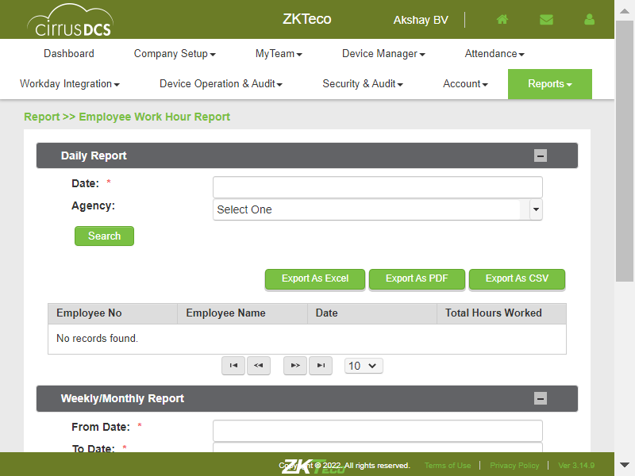
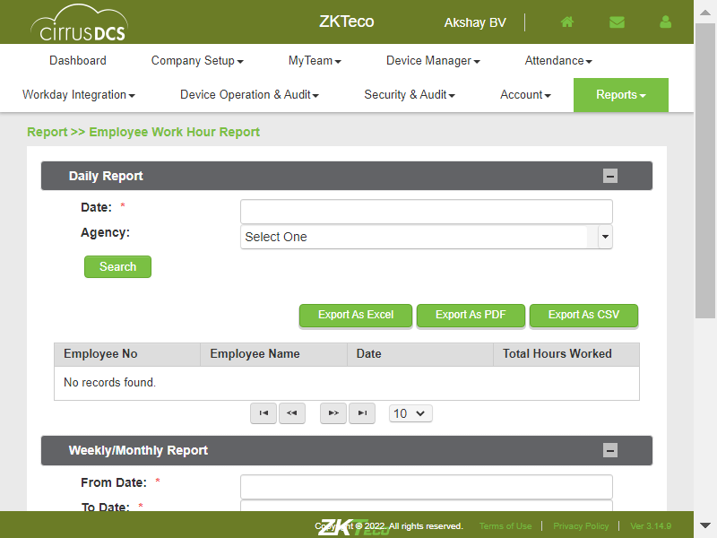

-
TenantReports
0h 17m 16s+412ms
15:26:01 pmTenantReports
04.10.2023 15:26:01 04.10.2023 15:43:17 0h 17m 16s+412ms@CirrusDCSVerify whether user is able to click on Reports modulecom.zkteco.cirrusdcs.stepDefinitions.CirrusDCS.i_initialize_drivers_for_DCS_automation()Driver InitializedGiven I visit CirrusDCS TenantLogin pageGiven I am in Tenant home pageThen click on the TenantReports moduleThen Verify all the sub modules are displayedClick on the Employee Reports sub module pagecom.zkteco.cirrusdcs.stepDefinitions.CirrusDCS.i_initialize_drivers_for_DCS_automation()Driver InitializedGiven I visit CirrusDCS TenantLogin pageGiven I am in Tenant home pageThen click on the TenantReports moduleThen click on the Employee Reports sub module pageThen Verify Employee Report Block is displayedVerify whether user is able to View the Employee Reports blockcom.zkteco.cirrusdcs.stepDefinitions.CirrusDCS.i_initialize_drivers_for_DCS_automation()Driver InitializedGiven I visit CirrusDCS TenantLogin pageGiven I am in Tenant home pageThen click on the TenantReports moduleThen click on the Employee Reports sub module pageThen Verify User should be able to view the all fieldsVerify whether user is able to click on the Employee No dropdown buttoncom.zkteco.cirrusdcs.stepDefinitions.CirrusDCS.i_initialize_drivers_for_DCS_automation()Driver InitializedGiven I visit CirrusDCS TenantLogin pageGiven I am in Tenant home pageThen click on the TenantReports moduleThen click on the Employee Reports sub module pageThen click on the Employee No text fieldThen Verify user is able to click on the Employee No dropdown buttonBased on the Employee No verify whether user is able to get the employee reportcom.zkteco.cirrusdcs.stepDefinitions.CirrusDCS.i_initialize_drivers_for_DCS_automation()Driver InitializedGiven I visit CirrusDCS TenantLogin pageGiven I am in Tenant home pageThen click on the TenantReports moduleThen click on the Employee Reports sub module pageThen click on the Employee No text fieldThen Verify user is able to click on the Employee No dropdown buttonThen Verify Based on the Employee No user is able to get the employee reportVerify whether user is able to click on the Employee Name text fieldcom.zkteco.cirrusdcs.stepDefinitions.CirrusDCS.i_initialize_drivers_for_DCS_automation()Driver InitializedGiven I visit CirrusDCS TenantLogin pageGiven I am in Tenant home pageThen click on the TenantReports moduleThen click on the Employee Reports sub module pageThen click on the Employee No text fieldThen Verify user is able to click on the Employee Name text fieldBased on the Employee Name verify whether user is able to get the employee reportcom.zkteco.cirrusdcs.stepDefinitions.CirrusDCS.i_initialize_drivers_for_DCS_automation()Driver InitializedGiven I visit CirrusDCS TenantLogin pageGiven I am in Tenant home pageThen click on the TenantReports moduleThen click on the Employee Reports sub module pageThen click on the Employee No text fieldThen Verify user is able to click on the Employee Name text fieldThen Verify Based on the Employee Name user should be get the employee reportcom.zkteco.cirrusdcs.stepDefinitions.CirrusDCS.teardown(io.cucumber.java.Scenario) Verify whether user is able to click on Employee Badge text fieldcom.zkteco.cirrusdcs.stepDefinitions.CirrusDCS.i_initialize_drivers_for_DCS_automation()Driver InitializedGiven I visit CirrusDCS TenantLogin pageGiven I am in Tenant home pageThen click on the TenantReports moduleThen click on the Employee Reports sub module pageThen click on the Employee Badge text fieldThen Verify user is able to click on the Employee Badge text fieldBased on the Employee Badge verify whether user is able to get the employee reportcom.zkteco.cirrusdcs.stepDefinitions.CirrusDCS.i_initialize_drivers_for_DCS_automation()Driver InitializedGiven I visit CirrusDCS TenantLogin pageGiven I am in Tenant home pageThen click on the TenantReports moduleThen click on the Employee Reports sub module pageThen click on the Employee Badge text fieldThen Verify user is able to click on the Employee Badge text fieldThen Verify Based on the Employee Badge user should be get the employee reportVerify whether user is able to click on Device SN dropdown fieldcom.zkteco.cirrusdcs.stepDefinitions.CirrusDCS.i_initialize_drivers_for_DCS_automation()Driver InitializedGiven I visit CirrusDCS TenantLogin pageGiven I am in Tenant home pageThen click on the TenantReports moduleThen click on the Employee Reports sub module pageThen click on the Device SN text fieldThen Verify user is able to click on the Device SN text fieldBased on the Device SN verify whether user is able to get the employee reportcom.zkteco.cirrusdcs.stepDefinitions.CirrusDCS.i_initialize_drivers_for_DCS_automation()Driver InitializedGiven I visit CirrusDCS TenantLogin pageGiven I am in Tenant home pageThen click on the TenantReports moduleThen click on the Employee Reports sub module pageThen click on the Device SN text fieldThen Verify user is able to click on the Device SN text fieldThen Verify Based on the Device SN user should be get the employee reportVerify whether user is able to click on Device Name text fieldcom.zkteco.cirrusdcs.stepDefinitions.CirrusDCS.i_initialize_drivers_for_DCS_automation()Driver InitializedGiven I visit CirrusDCS TenantLogin pageGiven I am in Tenant home pageThen click on the TenantReports moduleThen click on the Employee Reports sub module pageThen click on the Device SN text fieldThen Verify user is able to click on the Device Name text fieldBased on the Device Name verify whether user is able to get the employee reportcom.zkteco.cirrusdcs.stepDefinitions.CirrusDCS.i_initialize_drivers_for_DCS_automation()Driver InitializedGiven I visit CirrusDCS TenantLogin pageGiven I am in Tenant home pageThen click on the TenantReports moduleThen click on the Employee Reports sub module pageThen click on the Device SN text fieldThen Verify user is able to click on the Device Name text fieldThen Verify Based on the Device Name user should be get the employee reportcom.zkteco.cirrusdcs.stepDefinitions.CirrusDCS.teardown(io.cucumber.java.Scenario)
Verify whether user is able to click on Employee Badge text fieldcom.zkteco.cirrusdcs.stepDefinitions.CirrusDCS.i_initialize_drivers_for_DCS_automation()Driver InitializedGiven I visit CirrusDCS TenantLogin pageGiven I am in Tenant home pageThen click on the TenantReports moduleThen click on the Employee Reports sub module pageThen click on the Employee Badge text fieldThen Verify user is able to click on the Employee Badge text fieldBased on the Employee Badge verify whether user is able to get the employee reportcom.zkteco.cirrusdcs.stepDefinitions.CirrusDCS.i_initialize_drivers_for_DCS_automation()Driver InitializedGiven I visit CirrusDCS TenantLogin pageGiven I am in Tenant home pageThen click on the TenantReports moduleThen click on the Employee Reports sub module pageThen click on the Employee Badge text fieldThen Verify user is able to click on the Employee Badge text fieldThen Verify Based on the Employee Badge user should be get the employee reportVerify whether user is able to click on Device SN dropdown fieldcom.zkteco.cirrusdcs.stepDefinitions.CirrusDCS.i_initialize_drivers_for_DCS_automation()Driver InitializedGiven I visit CirrusDCS TenantLogin pageGiven I am in Tenant home pageThen click on the TenantReports moduleThen click on the Employee Reports sub module pageThen click on the Device SN text fieldThen Verify user is able to click on the Device SN text fieldBased on the Device SN verify whether user is able to get the employee reportcom.zkteco.cirrusdcs.stepDefinitions.CirrusDCS.i_initialize_drivers_for_DCS_automation()Driver InitializedGiven I visit CirrusDCS TenantLogin pageGiven I am in Tenant home pageThen click on the TenantReports moduleThen click on the Employee Reports sub module pageThen click on the Device SN text fieldThen Verify user is able to click on the Device SN text fieldThen Verify Based on the Device SN user should be get the employee reportVerify whether user is able to click on Device Name text fieldcom.zkteco.cirrusdcs.stepDefinitions.CirrusDCS.i_initialize_drivers_for_DCS_automation()Driver InitializedGiven I visit CirrusDCS TenantLogin pageGiven I am in Tenant home pageThen click on the TenantReports moduleThen click on the Employee Reports sub module pageThen click on the Device SN text fieldThen Verify user is able to click on the Device Name text fieldBased on the Device Name verify whether user is able to get the employee reportcom.zkteco.cirrusdcs.stepDefinitions.CirrusDCS.i_initialize_drivers_for_DCS_automation()Driver InitializedGiven I visit CirrusDCS TenantLogin pageGiven I am in Tenant home pageThen click on the TenantReports moduleThen click on the Employee Reports sub module pageThen click on the Device SN text fieldThen Verify user is able to click on the Device Name text fieldThen Verify Based on the Device Name user should be get the employee reportcom.zkteco.cirrusdcs.stepDefinitions.CirrusDCS.teardown(io.cucumber.java.Scenario) Verify whether user is able to click on Location text fieldcom.zkteco.cirrusdcs.stepDefinitions.CirrusDCS.i_initialize_drivers_for_DCS_automation()Driver InitializedGiven I visit CirrusDCS TenantLogin pageGiven I am in Tenant home pageThen click on the TenantReports moduleThen click on the Employee Reports sub module pageThen click on the Device Location text fieldThen Verify user is able to click on the Location text fieldBased on the Location verify whether user is able to get the employee reportcom.zkteco.cirrusdcs.stepDefinitions.CirrusDCS.i_initialize_drivers_for_DCS_automation()Driver InitializedGiven I visit CirrusDCS TenantLogin pageGiven I am in Tenant home pageThen click on the TenantReports moduleThen click on the Employee Reports sub module pageThen click on the Device Location text fieldThen Verify user is able to click on the Location text fieldThen Verify Based on the Location user should be get the employee reportVerify whether user is able to click on Verification mode dropdown fieldcom.zkteco.cirrusdcs.stepDefinitions.CirrusDCS.i_initialize_drivers_for_DCS_automation()Driver InitializedGiven I visit CirrusDCS TenantLogin pageGiven I am in Tenant home pageThen click on the TenantReports moduleThen click on the Employee Reports sub module pageThen click on the Device Location text fieldThen click on the Device Verification mode dropdown fieldThen Verify user is able to click on the Verification mode dropdown fieldBased on the Verification mode verify whether user is able to get the employee reportcom.zkteco.cirrusdcs.stepDefinitions.CirrusDCS.i_initialize_drivers_for_DCS_automation()Driver InitializedGiven I visit CirrusDCS TenantLogin pageGiven I am in Tenant home pageThen click on the TenantReports moduleThen click on the Employee Reports sub module pageThen click on the Device Location text fieldThen click on the Device Verification mode dropdown fieldThen Verify user is able to click on the Verification mode dropdown fieldThen Verify Based on the Verification mode user should be get the employee reportVerify whether user is able to click on Organization text fieldcom.zkteco.cirrusdcs.stepDefinitions.CirrusDCS.i_initialize_drivers_for_DCS_automation()Driver InitializedGiven I visit CirrusDCS TenantLogin pageGiven I am in Tenant home pageThen click on the TenantReports moduleThen click on the Employee Reports sub module pageThen click on the Device Location text fieldThen click on the Device Organization text fieldThen Verify user is able to click on the Organization text fieldcom.zkteco.cirrusdcs.stepDefinitions.CirrusDCS.teardown(io.cucumber.java.Scenario)
Verify whether user is able to click on Location text fieldcom.zkteco.cirrusdcs.stepDefinitions.CirrusDCS.i_initialize_drivers_for_DCS_automation()Driver InitializedGiven I visit CirrusDCS TenantLogin pageGiven I am in Tenant home pageThen click on the TenantReports moduleThen click on the Employee Reports sub module pageThen click on the Device Location text fieldThen Verify user is able to click on the Location text fieldBased on the Location verify whether user is able to get the employee reportcom.zkteco.cirrusdcs.stepDefinitions.CirrusDCS.i_initialize_drivers_for_DCS_automation()Driver InitializedGiven I visit CirrusDCS TenantLogin pageGiven I am in Tenant home pageThen click on the TenantReports moduleThen click on the Employee Reports sub module pageThen click on the Device Location text fieldThen Verify user is able to click on the Location text fieldThen Verify Based on the Location user should be get the employee reportVerify whether user is able to click on Verification mode dropdown fieldcom.zkteco.cirrusdcs.stepDefinitions.CirrusDCS.i_initialize_drivers_for_DCS_automation()Driver InitializedGiven I visit CirrusDCS TenantLogin pageGiven I am in Tenant home pageThen click on the TenantReports moduleThen click on the Employee Reports sub module pageThen click on the Device Location text fieldThen click on the Device Verification mode dropdown fieldThen Verify user is able to click on the Verification mode dropdown fieldBased on the Verification mode verify whether user is able to get the employee reportcom.zkteco.cirrusdcs.stepDefinitions.CirrusDCS.i_initialize_drivers_for_DCS_automation()Driver InitializedGiven I visit CirrusDCS TenantLogin pageGiven I am in Tenant home pageThen click on the TenantReports moduleThen click on the Employee Reports sub module pageThen click on the Device Location text fieldThen click on the Device Verification mode dropdown fieldThen Verify user is able to click on the Verification mode dropdown fieldThen Verify Based on the Verification mode user should be get the employee reportVerify whether user is able to click on Organization text fieldcom.zkteco.cirrusdcs.stepDefinitions.CirrusDCS.i_initialize_drivers_for_DCS_automation()Driver InitializedGiven I visit CirrusDCS TenantLogin pageGiven I am in Tenant home pageThen click on the TenantReports moduleThen click on the Employee Reports sub module pageThen click on the Device Location text fieldThen click on the Device Organization text fieldThen Verify user is able to click on the Organization text fieldcom.zkteco.cirrusdcs.stepDefinitions.CirrusDCS.teardown(io.cucumber.java.Scenario) Based on the Organization verify whether user is able to get the employee reportcom.zkteco.cirrusdcs.stepDefinitions.CirrusDCS.i_initialize_drivers_for_DCS_automation()Driver InitializedGiven I visit CirrusDCS TenantLogin pageGiven I am in Tenant home pageThen click on the TenantReports moduleThen click on the Employee Reports sub module pageThen click on the Device Location text fieldThen click on the Device Organization text fieldThen Verify user is able to click on the Organization text fieldThen Verify Based on the Organization user should be get the employee reportStep skippedcom.zkteco.cirrusdcs.stepDefinitions.CirrusDCS.teardown(io.cucumber.java.Scenario)
Based on the Organization verify whether user is able to get the employee reportcom.zkteco.cirrusdcs.stepDefinitions.CirrusDCS.i_initialize_drivers_for_DCS_automation()Driver InitializedGiven I visit CirrusDCS TenantLogin pageGiven I am in Tenant home pageThen click on the TenantReports moduleThen click on the Employee Reports sub module pageThen click on the Device Location text fieldThen click on the Device Organization text fieldThen Verify user is able to click on the Organization text fieldThen Verify Based on the Organization user should be get the employee reportStep skippedcom.zkteco.cirrusdcs.stepDefinitions.CirrusDCS.teardown(io.cucumber.java.Scenario) Verify whether user is able to click on Employee Status dropdown fieldcom.zkteco.cirrusdcs.stepDefinitions.CirrusDCS.i_initialize_drivers_for_DCS_automation()Driver InitializedGiven I visit CirrusDCS TenantLogin pageGiven I am in Tenant home pageThen click on the TenantReports moduleThen click on the Employee Reports sub module pageThen click on the Device Location text fieldThen click on the Employee Status dropdown fieldThen Verify user is able to click on the Employee Status dropdown fieldBased on the Employee Status verify whether user is able to get the employee reportcom.zkteco.cirrusdcs.stepDefinitions.CirrusDCS.i_initialize_drivers_for_DCS_automation()Driver InitializedGiven I visit CirrusDCS TenantLogin pageGiven I am in Tenant home pageThen click on the TenantReports moduleThen click on the Employee Reports sub module pageThen click on the Device Location text fieldThen click on the Employee Status dropdown fieldThen Verify user is able to click on the Employee Status dropdown fieldThen Verify Based on the Employee Status user should be get the employee reportVerify whether user is able to click on FP Attestation dropdown fieldcom.zkteco.cirrusdcs.stepDefinitions.CirrusDCS.i_initialize_drivers_for_DCS_automation()Driver InitializedGiven I visit CirrusDCS TenantLogin pageGiven I am in Tenant home pageThen click on the TenantReports moduleThen click on the Employee Reports sub module pageThen click on the Device Location text fieldThen click on the FP Attestation dropdown fieldThen Verify user is able to click on the FP Attestation dropdown fieldStep skippedcom.zkteco.cirrusdcs.stepDefinitions.CirrusDCS.teardown(io.cucumber.java.Scenario)
Verify whether user is able to click on Employee Status dropdown fieldcom.zkteco.cirrusdcs.stepDefinitions.CirrusDCS.i_initialize_drivers_for_DCS_automation()Driver InitializedGiven I visit CirrusDCS TenantLogin pageGiven I am in Tenant home pageThen click on the TenantReports moduleThen click on the Employee Reports sub module pageThen click on the Device Location text fieldThen click on the Employee Status dropdown fieldThen Verify user is able to click on the Employee Status dropdown fieldBased on the Employee Status verify whether user is able to get the employee reportcom.zkteco.cirrusdcs.stepDefinitions.CirrusDCS.i_initialize_drivers_for_DCS_automation()Driver InitializedGiven I visit CirrusDCS TenantLogin pageGiven I am in Tenant home pageThen click on the TenantReports moduleThen click on the Employee Reports sub module pageThen click on the Device Location text fieldThen click on the Employee Status dropdown fieldThen Verify user is able to click on the Employee Status dropdown fieldThen Verify Based on the Employee Status user should be get the employee reportVerify whether user is able to click on FP Attestation dropdown fieldcom.zkteco.cirrusdcs.stepDefinitions.CirrusDCS.i_initialize_drivers_for_DCS_automation()Driver InitializedGiven I visit CirrusDCS TenantLogin pageGiven I am in Tenant home pageThen click on the TenantReports moduleThen click on the Employee Reports sub module pageThen click on the Device Location text fieldThen click on the FP Attestation dropdown fieldThen Verify user is able to click on the FP Attestation dropdown fieldStep skippedcom.zkteco.cirrusdcs.stepDefinitions.CirrusDCS.teardown(io.cucumber.java.Scenario) Verify whether user is able to click on FP Attestation dropdown fieldcom.zkteco.cirrusdcs.stepDefinitions.CirrusDCS.i_initialize_drivers_for_DCS_automation()Driver InitializedGiven I visit CirrusDCS TenantLogin pageGiven I am in Tenant home pageThen click on the TenantReports moduleThen click on the Employee Reports sub module pageThen click on the Device Location text fieldThen click on the FP Attestation dropdown fieldThen Verify user is able to click on the FP Attestation dropdown fieldStep skippedThen Verify Based on theFP Attestation user should be get the employee reportStep skippedcom.zkteco.cirrusdcs.stepDefinitions.CirrusDCS.teardown(io.cucumber.java.Scenario)Verify whether user is able to click on Face Attestation dropdown fieldcom.zkteco.cirrusdcs.stepDefinitions.CirrusDCS.i_initialize_drivers_for_DCS_automation()Driver InitializedGiven I visit CirrusDCS TenantLogin pageGiven I am in Tenant home pageThen click on the TenantReports moduleThen click on the Employee Reports sub module pageThen click on the Device Location text fieldThen click on the Face Attestation dropdown fieldThen Verify user is able to click on the Face Attestation dropdown fieldStep skippedcom.zkteco.cirrusdcs.stepDefinitions.CirrusDCS.teardown(io.cucumber.java.Scenario)
Verify whether user is able to click on FP Attestation dropdown fieldcom.zkteco.cirrusdcs.stepDefinitions.CirrusDCS.i_initialize_drivers_for_DCS_automation()Driver InitializedGiven I visit CirrusDCS TenantLogin pageGiven I am in Tenant home pageThen click on the TenantReports moduleThen click on the Employee Reports sub module pageThen click on the Device Location text fieldThen click on the FP Attestation dropdown fieldThen Verify user is able to click on the FP Attestation dropdown fieldStep skippedThen Verify Based on theFP Attestation user should be get the employee reportStep skippedcom.zkteco.cirrusdcs.stepDefinitions.CirrusDCS.teardown(io.cucumber.java.Scenario)Verify whether user is able to click on Face Attestation dropdown fieldcom.zkteco.cirrusdcs.stepDefinitions.CirrusDCS.i_initialize_drivers_for_DCS_automation()Driver InitializedGiven I visit CirrusDCS TenantLogin pageGiven I am in Tenant home pageThen click on the TenantReports moduleThen click on the Employee Reports sub module pageThen click on the Device Location text fieldThen click on the Face Attestation dropdown fieldThen Verify user is able to click on the Face Attestation dropdown fieldStep skippedcom.zkteco.cirrusdcs.stepDefinitions.CirrusDCS.teardown(io.cucumber.java.Scenario) Verify whether user is able to click on Face Attestation dropdown fieldcom.zkteco.cirrusdcs.stepDefinitions.CirrusDCS.i_initialize_drivers_for_DCS_automation()Driver InitializedGiven I visit CirrusDCS TenantLogin pageGiven I am in Tenant home pageThen click on the TenantReports moduleThen click on the Employee Reports sub module pageThen click on the Device Location text fieldThen click on the Face Attestation dropdown fieldThen Verify user is able to click on the Face Attestation dropdown fieldStep skippedThen Verify Based on the Face Attestation user should be get the employee reportStep skippedcom.zkteco.cirrusdcs.stepDefinitions.CirrusDCS.teardown(io.cucumber.java.Scenario)Verify whether user is able to click on Reset buttoncom.zkteco.cirrusdcs.stepDefinitions.CirrusDCS.i_initialize_drivers_for_DCS_automation()Driver InitializedGiven I visit CirrusDCS TenantLogin pageGiven I am in Tenant home pageThen click on the TenantReports moduleThen click on the Employee Reports sub module pageThen click on the Employee No text fieldThen Verify user is able to click on the Employee No dropdown buttonThen click on Reset buttonThen Verify the Reset buttonStep skippedcom.zkteco.cirrusdcs.stepDefinitions.CirrusDCS.teardown(io.cucumber.java.Scenario)Verify whether user is able to click on Columns buttoncom.zkteco.cirrusdcs.stepDefinitions.CirrusDCS.i_initialize_drivers_for_DCS_automation()Driver InitializedGiven I visit CirrusDCS TenantLogin pageGiven I am in Tenant home pageThen click on the TenantReports moduleThen click on the Employee Reports sub module pageThen column buttonThen Verify the Columns buttonStep skippedcom.zkteco.cirrusdcs.stepDefinitions.CirrusDCS.teardown(io.cucumber.java.Scenario)
Verify whether user is able to click on Face Attestation dropdown fieldcom.zkteco.cirrusdcs.stepDefinitions.CirrusDCS.i_initialize_drivers_for_DCS_automation()Driver InitializedGiven I visit CirrusDCS TenantLogin pageGiven I am in Tenant home pageThen click on the TenantReports moduleThen click on the Employee Reports sub module pageThen click on the Device Location text fieldThen click on the Face Attestation dropdown fieldThen Verify user is able to click on the Face Attestation dropdown fieldStep skippedThen Verify Based on the Face Attestation user should be get the employee reportStep skippedcom.zkteco.cirrusdcs.stepDefinitions.CirrusDCS.teardown(io.cucumber.java.Scenario)Verify whether user is able to click on Reset buttoncom.zkteco.cirrusdcs.stepDefinitions.CirrusDCS.i_initialize_drivers_for_DCS_automation()Driver InitializedGiven I visit CirrusDCS TenantLogin pageGiven I am in Tenant home pageThen click on the TenantReports moduleThen click on the Employee Reports sub module pageThen click on the Employee No text fieldThen Verify user is able to click on the Employee No dropdown buttonThen click on Reset buttonThen Verify the Reset buttonStep skippedcom.zkteco.cirrusdcs.stepDefinitions.CirrusDCS.teardown(io.cucumber.java.Scenario)Verify whether user is able to click on Columns buttoncom.zkteco.cirrusdcs.stepDefinitions.CirrusDCS.i_initialize_drivers_for_DCS_automation()Driver InitializedGiven I visit CirrusDCS TenantLogin pageGiven I am in Tenant home pageThen click on the TenantReports moduleThen click on the Employee Reports sub module pageThen column buttonThen Verify the Columns buttonStep skippedcom.zkteco.cirrusdcs.stepDefinitions.CirrusDCS.teardown(io.cucumber.java.Scenario) Based on the Columns check box verify whether user is able to get the respected columns in the employee reportcom.zkteco.cirrusdcs.stepDefinitions.CirrusDCS.i_initialize_drivers_for_DCS_automation()Driver InitializedGiven I visit CirrusDCS TenantLogin pageGiven I am in Tenant home pageThen click on the TenantReports moduleThen click on the Employee Reports sub module pageThen column buttonThen Verify the Columns buttonStep skippedThen click on check boxStep skippedThen Verify Based on the Columns check box user is able to get the respected columns in the employee reportStep skippedcom.zkteco.cirrusdcs.stepDefinitions.CirrusDCS.teardown(io.cucumber.java.Scenario)
Based on the Columns check box verify whether user is able to get the respected columns in the employee reportcom.zkteco.cirrusdcs.stepDefinitions.CirrusDCS.i_initialize_drivers_for_DCS_automation()Driver InitializedGiven I visit CirrusDCS TenantLogin pageGiven I am in Tenant home pageThen click on the TenantReports moduleThen click on the Employee Reports sub module pageThen column buttonThen Verify the Columns buttonStep skippedThen click on check boxStep skippedThen Verify Based on the Columns check box user is able to get the respected columns in the employee reportStep skippedcom.zkteco.cirrusdcs.stepDefinitions.CirrusDCS.teardown(io.cucumber.java.Scenario) Verify whether user is able to click on the Export As CSV buttoncom.zkteco.cirrusdcs.stepDefinitions.CirrusDCS.i_initialize_drivers_for_DCS_automation()Driver InitializedGiven I visit CirrusDCS TenantLogin pageGiven I am in Tenant home pageThen click on the TenantReports moduleThen click on the Employee Reports sub module pageThen column buttonThen Verify the Columns buttonStep skippedThen click on check boxStep skippedThen Verify Based on the Columns check box user is able to get the respected columns in the employee reportStep skippedThen User click on the CSV buttonStep skippedThen Verify the CSV buttonStep skippedcom.zkteco.cirrusdcs.stepDefinitions.CirrusDCS.teardown(io.cucumber.java.Scenario)Verify whether user is able to click on the Export As Excel buttoncom.zkteco.cirrusdcs.stepDefinitions.CirrusDCS.i_initialize_drivers_for_DCS_automation()Driver InitializedGiven I visit CirrusDCS TenantLogin pageGiven I am in Tenant home pageThen click on the TenantReports moduleThen click on the Employee Reports sub module pageThen column buttonThen Verify the Columns buttonStep skippedThen click on check boxStep skippedThen Verify Based on the Columns check box user is able to get the respected columns in the employee reportStep skippedThen User click on the Excel buttonStep skippedThen Verify the Excel buttonStep skippedcom.zkteco.cirrusdcs.stepDefinitions.CirrusDCS.teardown(io.cucumber.java.Scenario)
Verify whether user is able to click on the Export As CSV buttoncom.zkteco.cirrusdcs.stepDefinitions.CirrusDCS.i_initialize_drivers_for_DCS_automation()Driver InitializedGiven I visit CirrusDCS TenantLogin pageGiven I am in Tenant home pageThen click on the TenantReports moduleThen click on the Employee Reports sub module pageThen column buttonThen Verify the Columns buttonStep skippedThen click on check boxStep skippedThen Verify Based on the Columns check box user is able to get the respected columns in the employee reportStep skippedThen User click on the CSV buttonStep skippedThen Verify the CSV buttonStep skippedcom.zkteco.cirrusdcs.stepDefinitions.CirrusDCS.teardown(io.cucumber.java.Scenario)Verify whether user is able to click on the Export As Excel buttoncom.zkteco.cirrusdcs.stepDefinitions.CirrusDCS.i_initialize_drivers_for_DCS_automation()Driver InitializedGiven I visit CirrusDCS TenantLogin pageGiven I am in Tenant home pageThen click on the TenantReports moduleThen click on the Employee Reports sub module pageThen column buttonThen Verify the Columns buttonStep skippedThen click on check boxStep skippedThen Verify Based on the Columns check box user is able to get the respected columns in the employee reportStep skippedThen User click on the Excel buttonStep skippedThen Verify the Excel buttonStep skippedcom.zkteco.cirrusdcs.stepDefinitions.CirrusDCS.teardown(io.cucumber.java.Scenario) Verify whether user is able to click on the Export As PDF buttoncom.zkteco.cirrusdcs.stepDefinitions.CirrusDCS.i_initialize_drivers_for_DCS_automation()Driver InitializedGiven I visit CirrusDCS TenantLogin pageGiven I am in Tenant home pageThen click on the TenantReports moduleThen click on the Employee Reports sub module pageThen User click on the PDF buttonThen Verify the PDF buttonVerify whether user is able to click on the Employee Detail Report linkcom.zkteco.cirrusdcs.stepDefinitions.CirrusDCS.i_initialize_drivers_for_DCS_automation()Driver InitializedGiven I visit CirrusDCS TenantLogin pageGiven I am in Tenant home pageThen click on the TenantReports moduleThen click on the Employee Reports sub module pageThen click on the Employee Detail Report linkThen Verify the Employee Detail Report linkVerify whether user is able to click on the Employee No Text fieldcom.zkteco.cirrusdcs.stepDefinitions.CirrusDCS.i_initialize_drivers_for_DCS_automation()Driver InitializedGiven I visit CirrusDCS TenantLogin pageGiven I am in Tenant home pageThen click on the TenantReports moduleThen click on the Employee Reports sub module pageThen click on the Employee Detail Report linkThen click on the Employee Detail Report link Employee No Text fieldThen Verify Employee Detail Report linkEmployee No Text fieldcom.zkteco.cirrusdcs.stepDefinitions.CirrusDCS.teardown(io.cucumber.java.Scenario)Verify whether user is able to click on the Position Text fieldcom.zkteco.cirrusdcs.stepDefinitions.CirrusDCS.i_initialize_drivers_for_DCS_automation()Driver InitializedGiven I visit CirrusDCS TenantLogin pageGiven I am in Tenant home pageThen click on the TenantReports moduleThen click on the Employee Reports sub module pageThen click on the Employee Detail Report linkThen click on the Employee Detail Report link Position Text fieldThen Verify Employee Detail Report link Position Text fieldcom.zkteco.cirrusdcs.stepDefinitions.CirrusDCS.teardown(io.cucumber.java.Scenario)Verify whether user is able to click on the Location Text fieldcom.zkteco.cirrusdcs.stepDefinitions.CirrusDCS.i_initialize_drivers_for_DCS_automation()Driver InitializedGiven I visit CirrusDCS TenantLogin pageGiven I am in Tenant home pageThen click on the TenantReports moduleThen click on the Employee Reports sub module pageThen click on the Employee Detail Report linkThen click on the Employee Detail Report link Location Text fieldThen Verify Employee Detail Report link Location Text fieldcom.zkteco.cirrusdcs.stepDefinitions.CirrusDCS.teardown(io.cucumber.java.Scenario)Verify whether user is able to click on the Organization Text fieldcom.zkteco.cirrusdcs.stepDefinitions.CirrusDCS.i_initialize_drivers_for_DCS_automation()Driver InitializedGiven I visit CirrusDCS TenantLogin pageGiven I am in Tenant home pageThen click on the TenantReports moduleThen click on the Employee Reports sub module pageThen click on the Employee Detail Report linkThen click on the Employee Detail Report link Organization Text fieldThen Verify Employee Detail Report link Organization Text fieldcom.zkteco.cirrusdcs.stepDefinitions.CirrusDCS.teardown(io.cucumber.java.Scenario)
Verify whether user is able to click on the Export As PDF buttoncom.zkteco.cirrusdcs.stepDefinitions.CirrusDCS.i_initialize_drivers_for_DCS_automation()Driver InitializedGiven I visit CirrusDCS TenantLogin pageGiven I am in Tenant home pageThen click on the TenantReports moduleThen click on the Employee Reports sub module pageThen User click on the PDF buttonThen Verify the PDF buttonVerify whether user is able to click on the Employee Detail Report linkcom.zkteco.cirrusdcs.stepDefinitions.CirrusDCS.i_initialize_drivers_for_DCS_automation()Driver InitializedGiven I visit CirrusDCS TenantLogin pageGiven I am in Tenant home pageThen click on the TenantReports moduleThen click on the Employee Reports sub module pageThen click on the Employee Detail Report linkThen Verify the Employee Detail Report linkVerify whether user is able to click on the Employee No Text fieldcom.zkteco.cirrusdcs.stepDefinitions.CirrusDCS.i_initialize_drivers_for_DCS_automation()Driver InitializedGiven I visit CirrusDCS TenantLogin pageGiven I am in Tenant home pageThen click on the TenantReports moduleThen click on the Employee Reports sub module pageThen click on the Employee Detail Report linkThen click on the Employee Detail Report link Employee No Text fieldThen Verify Employee Detail Report linkEmployee No Text fieldcom.zkteco.cirrusdcs.stepDefinitions.CirrusDCS.teardown(io.cucumber.java.Scenario)Verify whether user is able to click on the Position Text fieldcom.zkteco.cirrusdcs.stepDefinitions.CirrusDCS.i_initialize_drivers_for_DCS_automation()Driver InitializedGiven I visit CirrusDCS TenantLogin pageGiven I am in Tenant home pageThen click on the TenantReports moduleThen click on the Employee Reports sub module pageThen click on the Employee Detail Report linkThen click on the Employee Detail Report link Position Text fieldThen Verify Employee Detail Report link Position Text fieldcom.zkteco.cirrusdcs.stepDefinitions.CirrusDCS.teardown(io.cucumber.java.Scenario)Verify whether user is able to click on the Location Text fieldcom.zkteco.cirrusdcs.stepDefinitions.CirrusDCS.i_initialize_drivers_for_DCS_automation()Driver InitializedGiven I visit CirrusDCS TenantLogin pageGiven I am in Tenant home pageThen click on the TenantReports moduleThen click on the Employee Reports sub module pageThen click on the Employee Detail Report linkThen click on the Employee Detail Report link Location Text fieldThen Verify Employee Detail Report link Location Text fieldcom.zkteco.cirrusdcs.stepDefinitions.CirrusDCS.teardown(io.cucumber.java.Scenario)Verify whether user is able to click on the Organization Text fieldcom.zkteco.cirrusdcs.stepDefinitions.CirrusDCS.i_initialize_drivers_for_DCS_automation()Driver InitializedGiven I visit CirrusDCS TenantLogin pageGiven I am in Tenant home pageThen click on the TenantReports moduleThen click on the Employee Reports sub module pageThen click on the Employee Detail Report linkThen click on the Employee Detail Report link Organization Text fieldThen Verify Employee Detail Report link Organization Text fieldcom.zkteco.cirrusdcs.stepDefinitions.CirrusDCS.teardown(io.cucumber.java.Scenario) Verify whether user is able to click on the Time Type Text fieldcom.zkteco.cirrusdcs.stepDefinitions.CirrusDCS.i_initialize_drivers_for_DCS_automation()Driver InitializedGiven I visit CirrusDCS TenantLogin pageGiven I am in Tenant home pageThen click on the TenantReports moduleThen click on the Employee Reports sub module pageThen click on the Employee Detail Report linkThen click on the Employee Detail Report link Time Type Text fieldThen Verify Employee Detail Report link Time Type Text fieldcom.zkteco.cirrusdcs.stepDefinitions.CirrusDCS.teardown(io.cucumber.java.Scenario)Verify whether user is able to click on the Pay Type Text fieldcom.zkteco.cirrusdcs.stepDefinitions.CirrusDCS.i_initialize_drivers_for_DCS_automation()Driver InitializedGiven I visit CirrusDCS TenantLogin pageGiven I am in Tenant home pageThen click on the TenantReports moduleThen click on the Employee Reports sub module pageThen click on the Employee Detail Report linkThen click on the Employee Detail Report link Pay Type Text fieldThen Verify Employee Detail Report link Pay Type Text fieldcom.zkteco.cirrusdcs.stepDefinitions.CirrusDCS.teardown(io.cucumber.java.Scenario)Verify whether user is able to click on the Updated Days Text fieldcom.zkteco.cirrusdcs.stepDefinitions.CirrusDCS.i_initialize_drivers_for_DCS_automation()Driver InitializedGiven I visit CirrusDCS TenantLogin pageGiven I am in Tenant home pageThen click on the TenantReports moduleThen click on the Employee Reports sub module pageThen click on the Employee Detail Report linkThen click on the Employee Detail Report link Updated Days Text fieldThen Verify Employee Detail Report link Pay Updated Days fieldVerify whether user is able to click on the User Privilege Droup down fieldcom.zkteco.cirrusdcs.stepDefinitions.CirrusDCS.i_initialize_drivers_for_DCS_automation()Driver InitializedGiven I visit CirrusDCS TenantLogin pageGiven I am in Tenant home pageThen click on the TenantReports moduleThen click on the Employee Reports sub module pageThen click on the Employee Detail Report linkThen click on the Employee Detail Report link User Privilege Droup down fieldThen Verify Employee Detail Report link User Privilege Droup down fieldVerify whether user is able to click on the Go buttoncom.zkteco.cirrusdcs.stepDefinitions.CirrusDCS.i_initialize_drivers_for_DCS_automation()Driver InitializedGiven I visit CirrusDCS TenantLogin pageGiven I am in Tenant home pageThen click on the TenantReports moduleThen click on the Employee Reports sub module pageThen click on the Employee Detail Report linkThen click on the Employee Detail Report link Go buttonThen Verify Employee Detail Report link Go buttonVerify whether user is able to click on the Columns buttoncom.zkteco.cirrusdcs.stepDefinitions.CirrusDCS.i_initialize_drivers_for_DCS_automation()Driver InitializedGiven I visit CirrusDCS TenantLogin pageGiven I am in Tenant home pageThen click on the TenantReports moduleThen click on the Employee Reports sub module pageThen click on the Employee Detail Report linkThen click on the Employee Detail Report link Columns buttonThen Verify Employee Detail Report link Columns buttonStep skippedcom.zkteco.cirrusdcs.stepDefinitions.CirrusDCS.teardown(io.cucumber.java.Scenario)Based on the Columns check box verify whether user is able to get the respected columns in the employee reportcom.zkteco.cirrusdcs.stepDefinitions.CirrusDCS.i_initialize_drivers_for_DCS_automation()Driver InitializedGiven I visit CirrusDCS TenantLogin pageGiven I am in Tenant home pageThen click on the TenantReports moduleThen click on the Employee Reports sub module pageThen click on the Employee Detail Report linkThen click on the Employee Detail Report link Columns buttonThen click on the organization columnStep skippedThen Verify the organization column in the employee reportStep skippedcom.zkteco.cirrusdcs.stepDefinitions.CirrusDCS.teardown(io.cucumber.java.Scenario)
Verify whether user is able to click on the Time Type Text fieldcom.zkteco.cirrusdcs.stepDefinitions.CirrusDCS.i_initialize_drivers_for_DCS_automation()Driver InitializedGiven I visit CirrusDCS TenantLogin pageGiven I am in Tenant home pageThen click on the TenantReports moduleThen click on the Employee Reports sub module pageThen click on the Employee Detail Report linkThen click on the Employee Detail Report link Time Type Text fieldThen Verify Employee Detail Report link Time Type Text fieldcom.zkteco.cirrusdcs.stepDefinitions.CirrusDCS.teardown(io.cucumber.java.Scenario)Verify whether user is able to click on the Pay Type Text fieldcom.zkteco.cirrusdcs.stepDefinitions.CirrusDCS.i_initialize_drivers_for_DCS_automation()Driver InitializedGiven I visit CirrusDCS TenantLogin pageGiven I am in Tenant home pageThen click on the TenantReports moduleThen click on the Employee Reports sub module pageThen click on the Employee Detail Report linkThen click on the Employee Detail Report link Pay Type Text fieldThen Verify Employee Detail Report link Pay Type Text fieldcom.zkteco.cirrusdcs.stepDefinitions.CirrusDCS.teardown(io.cucumber.java.Scenario)Verify whether user is able to click on the Updated Days Text fieldcom.zkteco.cirrusdcs.stepDefinitions.CirrusDCS.i_initialize_drivers_for_DCS_automation()Driver InitializedGiven I visit CirrusDCS TenantLogin pageGiven I am in Tenant home pageThen click on the TenantReports moduleThen click on the Employee Reports sub module pageThen click on the Employee Detail Report linkThen click on the Employee Detail Report link Updated Days Text fieldThen Verify Employee Detail Report link Pay Updated Days fieldVerify whether user is able to click on the User Privilege Droup down fieldcom.zkteco.cirrusdcs.stepDefinitions.CirrusDCS.i_initialize_drivers_for_DCS_automation()Driver InitializedGiven I visit CirrusDCS TenantLogin pageGiven I am in Tenant home pageThen click on the TenantReports moduleThen click on the Employee Reports sub module pageThen click on the Employee Detail Report linkThen click on the Employee Detail Report link User Privilege Droup down fieldThen Verify Employee Detail Report link User Privilege Droup down fieldVerify whether user is able to click on the Go buttoncom.zkteco.cirrusdcs.stepDefinitions.CirrusDCS.i_initialize_drivers_for_DCS_automation()Driver InitializedGiven I visit CirrusDCS TenantLogin pageGiven I am in Tenant home pageThen click on the TenantReports moduleThen click on the Employee Reports sub module pageThen click on the Employee Detail Report linkThen click on the Employee Detail Report link Go buttonThen Verify Employee Detail Report link Go buttonVerify whether user is able to click on the Columns buttoncom.zkteco.cirrusdcs.stepDefinitions.CirrusDCS.i_initialize_drivers_for_DCS_automation()Driver InitializedGiven I visit CirrusDCS TenantLogin pageGiven I am in Tenant home pageThen click on the TenantReports moduleThen click on the Employee Reports sub module pageThen click on the Employee Detail Report linkThen click on the Employee Detail Report link Columns buttonThen Verify Employee Detail Report link Columns buttonStep skippedcom.zkteco.cirrusdcs.stepDefinitions.CirrusDCS.teardown(io.cucumber.java.Scenario)Based on the Columns check box verify whether user is able to get the respected columns in the employee reportcom.zkteco.cirrusdcs.stepDefinitions.CirrusDCS.i_initialize_drivers_for_DCS_automation()Driver InitializedGiven I visit CirrusDCS TenantLogin pageGiven I am in Tenant home pageThen click on the TenantReports moduleThen click on the Employee Reports sub module pageThen click on the Employee Detail Report linkThen click on the Employee Detail Report link Columns buttonThen click on the organization columnStep skippedThen Verify the organization column in the employee reportStep skippedcom.zkteco.cirrusdcs.stepDefinitions.CirrusDCS.teardown(io.cucumber.java.Scenario) Verify whether user is able to click on the forword buttoncom.zkteco.cirrusdcs.stepDefinitions.CirrusDCS.i_initialize_drivers_for_DCS_automation()Driver InitializedGiven I visit CirrusDCS TenantLogin pageGiven I am in Tenant home pageThen click on the TenantReports moduleThen click on the Employee Reports sub module pageThen click on the Employee Detail Report linkThen click on the Employee Detail Report link Go buttonThen Verify Employee Detail Report link Go buttonThen Verify forword buttonVerify whether user is able to click on the forword buttoncom.zkteco.cirrusdcs.stepDefinitions.CirrusDCS.i_initialize_drivers_for_DCS_automation()Driver InitializedGiven I visit CirrusDCS TenantLogin pageGiven I am in Tenant home pageThen click on the TenantReports moduleThen click on the Employee Reports sub module pageThen click on the Employee Detail Report linkThen click on the Employee Detail Report link Go buttonThen Verify Employee Detail Report link Go buttonThen Verify Back buttonVerify whether user is able to click on the First page buttoncom.zkteco.cirrusdcs.stepDefinitions.CirrusDCS.i_initialize_drivers_for_DCS_automation()Driver InitializedGiven I visit CirrusDCS TenantLogin pageGiven I am in Tenant home pageThen click on the TenantReports moduleThen click on the Employee Reports sub module pageThen click on the Employee Detail Report linkThen click on the Employee Detail Report link Go buttonThen Verify Employee Detail Report link Go buttonThen Verify First page buttonVerify whether user is able to click on the Last page buttoncom.zkteco.cirrusdcs.stepDefinitions.CirrusDCS.i_initialize_drivers_for_DCS_automation()Driver InitializedGiven I visit CirrusDCS TenantLogin pageGiven I am in Tenant home pageThen click on the TenantReports moduleThen click on the Employee Reports sub module pageThen click on the Employee Detail Report linkThen click on the Employee Detail Report link Go buttonThen Verify Employee Detail Report link Go buttonThen Verify Last page buttonVerify whether user is able to click on the Pagination buttonscom.zkteco.cirrusdcs.stepDefinitions.CirrusDCS.i_initialize_drivers_for_DCS_automation()Driver InitializedGiven I visit CirrusDCS TenantLogin pageGiven I am in Tenant home pageThen click on the TenantReports moduleThen click on the Employee Reports sub module pageThen click on the Employee Detail Report linkThen click on the Employee Detail Report link Go buttonThen Verify Employee Detail Report link Go buttonThen Verify Pagination buttonsVerify whether user is able to click on the Employee fingerprint Report linkcom.zkteco.cirrusdcs.stepDefinitions.CirrusDCS.i_initialize_drivers_for_DCS_automation()Driver InitializedGiven I visit CirrusDCS TenantLogin pageGiven I am in Tenant home pageThen click on the TenantReports moduleThen click on the Employee Reports sub module pageThen click on the Employee fingerprint Report linkThen Verify the Employee fingerprint Report linkVerify whether user is able to click on the Employee No Text fieldcom.zkteco.cirrusdcs.stepDefinitions.CirrusDCS.i_initialize_drivers_for_DCS_automation()Driver InitializedGiven I visit CirrusDCS TenantLogin pageGiven I am in Tenant home pageThen click on the TenantReports moduleThen click on the Employee Reports sub module pageThen click on the Employee fingerprint Report linkThen click on the Employee Detail Report link Employee No Text fieldThen Verify Employee Detail Report linkEmployee No Text fieldVerify whether user is able to click on the Position Text fieldcom.zkteco.cirrusdcs.stepDefinitions.CirrusDCS.i_initialize_drivers_for_DCS_automation()Driver InitializedGiven I visit CirrusDCS TenantLogin pageGiven I am in Tenant home pageThen click on the TenantReports moduleThen click on the Employee Reports sub module pageThen click on the Employee fingerprint Report linkThen click on the Employee Detail Report link Position Text fieldThen Verify Employee Detail Report link Position Text fieldVerify whether user is able to click on the Location Text fieldcom.zkteco.cirrusdcs.stepDefinitions.CirrusDCS.i_initialize_drivers_for_DCS_automation()Driver InitializedGiven I visit CirrusDCS TenantLogin pageGiven I am in Tenant home pageThen click on the TenantReports moduleThen click on the Employee Reports sub module pageThen click on the Employee fingerprint Report linkThen click on the Employee Detail Report link Location Text fieldThen Verify Employee Detail Report link Location Text fieldVerify whether user is able to click on the Organization Text fieldcom.zkteco.cirrusdcs.stepDefinitions.CirrusDCS.i_initialize_drivers_for_DCS_automation()Driver InitializedGiven I visit CirrusDCS TenantLogin pageGiven I am in Tenant home pageThen click on the TenantReports moduleThen click on the Employee Reports sub module pageThen click on the Employee fingerprint Report linkThen click on the Employee Detail Report link Organization Text fieldThen Verify Employee Detail Report link Organization Text fieldVerify whether user is able to click on the Time Type Text fieldcom.zkteco.cirrusdcs.stepDefinitions.CirrusDCS.i_initialize_drivers_for_DCS_automation()Driver InitializedGiven I visit CirrusDCS TenantLogin pageGiven I am in Tenant home pageThen click on the TenantReports moduleThen click on the Employee Reports sub module pageThen click on the Employee fingerprint Report linkThen click on the Employee Detail Report link Time Type Text fieldThen Verify Employee Detail Report link Time Type Text fieldVerify whether user is able to click on the Pay Type Text fieldcom.zkteco.cirrusdcs.stepDefinitions.CirrusDCS.i_initialize_drivers_for_DCS_automation()Driver InitializedGiven I visit CirrusDCS TenantLogin pageGiven I am in Tenant home pageThen click on the TenantReports moduleThen click on the Employee Reports sub module pageThen click on the Employee fingerprint Report linkThen click on the Employee Detail Report link Pay Type Text fieldThen Verify Employee Detail Report link Pay Type Text fieldVerify whether user is able to click on the Updated Days Text fieldcom.zkteco.cirrusdcs.stepDefinitions.CirrusDCS.i_initialize_drivers_for_DCS_automation()Driver InitializedGiven I visit CirrusDCS TenantLogin pageGiven I am in Tenant home pageThen click on the TenantReports moduleThen click on the Employee Reports sub module pageThen click on the Employee fingerprint Report linkThen click on the Employee Detail Report link Updated Days Text fieldThen Verify Employee Detail Report Pay Updated Days fieldVerify whether user is able to click on the Go buttoncom.zkteco.cirrusdcs.stepDefinitions.CirrusDCS.i_initialize_drivers_for_DCS_automation()Driver InitializedGiven I visit CirrusDCS TenantLogin pageGiven I am in Tenant home pageThen click on the TenantReports moduleThen click on the Employee Reports sub module pageThen click on the Employee fingerprint Report linkThen Verify the Employee Detail Report link Go buttonVerify whether user is able to click on the Columns buttoncom.zkteco.cirrusdcs.stepDefinitions.CirrusDCS.i_initialize_drivers_for_DCS_automation()Driver InitializedGiven I visit CirrusDCS TenantLogin pageGiven I am in Tenant home pageThen click on the TenantReports moduleThen click on the Employee Reports sub module pageThen click on the Employee fingerprint Report linkThen click on the Employee Detail Report link Columns buttonThen Verify Employee Detail Report link Columns buttonStep skippedcom.zkteco.cirrusdcs.stepDefinitions.CirrusDCS.teardown(io.cucumber.java.Scenario)
Verify whether user is able to click on the forword buttoncom.zkteco.cirrusdcs.stepDefinitions.CirrusDCS.i_initialize_drivers_for_DCS_automation()Driver InitializedGiven I visit CirrusDCS TenantLogin pageGiven I am in Tenant home pageThen click on the TenantReports moduleThen click on the Employee Reports sub module pageThen click on the Employee Detail Report linkThen click on the Employee Detail Report link Go buttonThen Verify Employee Detail Report link Go buttonThen Verify forword buttonVerify whether user is able to click on the forword buttoncom.zkteco.cirrusdcs.stepDefinitions.CirrusDCS.i_initialize_drivers_for_DCS_automation()Driver InitializedGiven I visit CirrusDCS TenantLogin pageGiven I am in Tenant home pageThen click on the TenantReports moduleThen click on the Employee Reports sub module pageThen click on the Employee Detail Report linkThen click on the Employee Detail Report link Go buttonThen Verify Employee Detail Report link Go buttonThen Verify Back buttonVerify whether user is able to click on the First page buttoncom.zkteco.cirrusdcs.stepDefinitions.CirrusDCS.i_initialize_drivers_for_DCS_automation()Driver InitializedGiven I visit CirrusDCS TenantLogin pageGiven I am in Tenant home pageThen click on the TenantReports moduleThen click on the Employee Reports sub module pageThen click on the Employee Detail Report linkThen click on the Employee Detail Report link Go buttonThen Verify Employee Detail Report link Go buttonThen Verify First page buttonVerify whether user is able to click on the Last page buttoncom.zkteco.cirrusdcs.stepDefinitions.CirrusDCS.i_initialize_drivers_for_DCS_automation()Driver InitializedGiven I visit CirrusDCS TenantLogin pageGiven I am in Tenant home pageThen click on the TenantReports moduleThen click on the Employee Reports sub module pageThen click on the Employee Detail Report linkThen click on the Employee Detail Report link Go buttonThen Verify Employee Detail Report link Go buttonThen Verify Last page buttonVerify whether user is able to click on the Pagination buttonscom.zkteco.cirrusdcs.stepDefinitions.CirrusDCS.i_initialize_drivers_for_DCS_automation()Driver InitializedGiven I visit CirrusDCS TenantLogin pageGiven I am in Tenant home pageThen click on the TenantReports moduleThen click on the Employee Reports sub module pageThen click on the Employee Detail Report linkThen click on the Employee Detail Report link Go buttonThen Verify Employee Detail Report link Go buttonThen Verify Pagination buttonsVerify whether user is able to click on the Employee fingerprint Report linkcom.zkteco.cirrusdcs.stepDefinitions.CirrusDCS.i_initialize_drivers_for_DCS_automation()Driver InitializedGiven I visit CirrusDCS TenantLogin pageGiven I am in Tenant home pageThen click on the TenantReports moduleThen click on the Employee Reports sub module pageThen click on the Employee fingerprint Report linkThen Verify the Employee fingerprint Report linkVerify whether user is able to click on the Employee No Text fieldcom.zkteco.cirrusdcs.stepDefinitions.CirrusDCS.i_initialize_drivers_for_DCS_automation()Driver InitializedGiven I visit CirrusDCS TenantLogin pageGiven I am in Tenant home pageThen click on the TenantReports moduleThen click on the Employee Reports sub module pageThen click on the Employee fingerprint Report linkThen click on the Employee Detail Report link Employee No Text fieldThen Verify Employee Detail Report linkEmployee No Text fieldVerify whether user is able to click on the Position Text fieldcom.zkteco.cirrusdcs.stepDefinitions.CirrusDCS.i_initialize_drivers_for_DCS_automation()Driver InitializedGiven I visit CirrusDCS TenantLogin pageGiven I am in Tenant home pageThen click on the TenantReports moduleThen click on the Employee Reports sub module pageThen click on the Employee fingerprint Report linkThen click on the Employee Detail Report link Position Text fieldThen Verify Employee Detail Report link Position Text fieldVerify whether user is able to click on the Location Text fieldcom.zkteco.cirrusdcs.stepDefinitions.CirrusDCS.i_initialize_drivers_for_DCS_automation()Driver InitializedGiven I visit CirrusDCS TenantLogin pageGiven I am in Tenant home pageThen click on the TenantReports moduleThen click on the Employee Reports sub module pageThen click on the Employee fingerprint Report linkThen click on the Employee Detail Report link Location Text fieldThen Verify Employee Detail Report link Location Text fieldVerify whether user is able to click on the Organization Text fieldcom.zkteco.cirrusdcs.stepDefinitions.CirrusDCS.i_initialize_drivers_for_DCS_automation()Driver InitializedGiven I visit CirrusDCS TenantLogin pageGiven I am in Tenant home pageThen click on the TenantReports moduleThen click on the Employee Reports sub module pageThen click on the Employee fingerprint Report linkThen click on the Employee Detail Report link Organization Text fieldThen Verify Employee Detail Report link Organization Text fieldVerify whether user is able to click on the Time Type Text fieldcom.zkteco.cirrusdcs.stepDefinitions.CirrusDCS.i_initialize_drivers_for_DCS_automation()Driver InitializedGiven I visit CirrusDCS TenantLogin pageGiven I am in Tenant home pageThen click on the TenantReports moduleThen click on the Employee Reports sub module pageThen click on the Employee fingerprint Report linkThen click on the Employee Detail Report link Time Type Text fieldThen Verify Employee Detail Report link Time Type Text fieldVerify whether user is able to click on the Pay Type Text fieldcom.zkteco.cirrusdcs.stepDefinitions.CirrusDCS.i_initialize_drivers_for_DCS_automation()Driver InitializedGiven I visit CirrusDCS TenantLogin pageGiven I am in Tenant home pageThen click on the TenantReports moduleThen click on the Employee Reports sub module pageThen click on the Employee fingerprint Report linkThen click on the Employee Detail Report link Pay Type Text fieldThen Verify Employee Detail Report link Pay Type Text fieldVerify whether user is able to click on the Updated Days Text fieldcom.zkteco.cirrusdcs.stepDefinitions.CirrusDCS.i_initialize_drivers_for_DCS_automation()Driver InitializedGiven I visit CirrusDCS TenantLogin pageGiven I am in Tenant home pageThen click on the TenantReports moduleThen click on the Employee Reports sub module pageThen click on the Employee fingerprint Report linkThen click on the Employee Detail Report link Updated Days Text fieldThen Verify Employee Detail Report Pay Updated Days fieldVerify whether user is able to click on the Go buttoncom.zkteco.cirrusdcs.stepDefinitions.CirrusDCS.i_initialize_drivers_for_DCS_automation()Driver InitializedGiven I visit CirrusDCS TenantLogin pageGiven I am in Tenant home pageThen click on the TenantReports moduleThen click on the Employee Reports sub module pageThen click on the Employee fingerprint Report linkThen Verify the Employee Detail Report link Go buttonVerify whether user is able to click on the Columns buttoncom.zkteco.cirrusdcs.stepDefinitions.CirrusDCS.i_initialize_drivers_for_DCS_automation()Driver InitializedGiven I visit CirrusDCS TenantLogin pageGiven I am in Tenant home pageThen click on the TenantReports moduleThen click on the Employee Reports sub module pageThen click on the Employee fingerprint Report linkThen click on the Employee Detail Report link Columns buttonThen Verify Employee Detail Report link Columns buttonStep skippedcom.zkteco.cirrusdcs.stepDefinitions.CirrusDCS.teardown(io.cucumber.java.Scenario) Based on the Columns check box verify whether user is able to get the respected columns in the employee reportcom.zkteco.cirrusdcs.stepDefinitions.CirrusDCS.i_initialize_drivers_for_DCS_automation()Driver InitializedGiven I visit CirrusDCS TenantLogin pageGiven I am in Tenant home pageThen click on the TenantReports moduleThen click on the Employee Reports sub module pageThen click on the Employee fingerprint Report linkThen click on the Employee Detail Report link Columns buttonThen click on the organization columnStep skippedThen Verify the organization column in the employee report is displayedStep skippedcom.zkteco.cirrusdcs.stepDefinitions.CirrusDCS.teardown(io.cucumber.java.Scenario)
Based on the Columns check box verify whether user is able to get the respected columns in the employee reportcom.zkteco.cirrusdcs.stepDefinitions.CirrusDCS.i_initialize_drivers_for_DCS_automation()Driver InitializedGiven I visit CirrusDCS TenantLogin pageGiven I am in Tenant home pageThen click on the TenantReports moduleThen click on the Employee Reports sub module pageThen click on the Employee fingerprint Report linkThen click on the Employee Detail Report link Columns buttonThen click on the organization columnStep skippedThen Verify the organization column in the employee report is displayedStep skippedcom.zkteco.cirrusdcs.stepDefinitions.CirrusDCS.teardown(io.cucumber.java.Scenario) Verify whether user is able to click on the forword buttoncom.zkteco.cirrusdcs.stepDefinitions.CirrusDCS.i_initialize_drivers_for_DCS_automation()Driver InitializedGiven I visit CirrusDCS TenantLogin pageGiven I am in Tenant home pageThen click on the TenantReports moduleThen click on the Employee Reports sub module pageThen click on the Employee fingerprint Report linkThen click on the Employee Detail Report link Columns buttonThen click on the organization columnStep skippedThen Verify the organization column in the employee report is displayedStep skippedThen Verify forword buttonStep skippedcom.zkteco.cirrusdcs.stepDefinitions.CirrusDCS.teardown(io.cucumber.java.Scenario)Verify whether user is able to click on the forword buttoncom.zkteco.cirrusdcs.stepDefinitions.CirrusDCS.i_initialize_drivers_for_DCS_automation()Driver InitializedGiven I visit CirrusDCS TenantLogin pageGiven I am in Tenant home pageThen click on the TenantReports moduleThen click on the Employee Reports sub module pageThen click on the Employee fingerprint Report linkThen click on the Employee Detail Report link Columns buttonThen click on the organization columnStep skippedThen Verify the organization column in the employee report is displayedStep skippedThen Verify Back buttonStep skippedcom.zkteco.cirrusdcs.stepDefinitions.CirrusDCS.teardown(io.cucumber.java.Scenario)
Verify whether user is able to click on the forword buttoncom.zkteco.cirrusdcs.stepDefinitions.CirrusDCS.i_initialize_drivers_for_DCS_automation()Driver InitializedGiven I visit CirrusDCS TenantLogin pageGiven I am in Tenant home pageThen click on the TenantReports moduleThen click on the Employee Reports sub module pageThen click on the Employee fingerprint Report linkThen click on the Employee Detail Report link Columns buttonThen click on the organization columnStep skippedThen Verify the organization column in the employee report is displayedStep skippedThen Verify forword buttonStep skippedcom.zkteco.cirrusdcs.stepDefinitions.CirrusDCS.teardown(io.cucumber.java.Scenario)Verify whether user is able to click on the forword buttoncom.zkteco.cirrusdcs.stepDefinitions.CirrusDCS.i_initialize_drivers_for_DCS_automation()Driver InitializedGiven I visit CirrusDCS TenantLogin pageGiven I am in Tenant home pageThen click on the TenantReports moduleThen click on the Employee Reports sub module pageThen click on the Employee fingerprint Report linkThen click on the Employee Detail Report link Columns buttonThen click on the organization columnStep skippedThen Verify the organization column in the employee report is displayedStep skippedThen Verify Back buttonStep skippedcom.zkteco.cirrusdcs.stepDefinitions.CirrusDCS.teardown(io.cucumber.java.Scenario) Verify whether user is able to click on the First page buttoncom.zkteco.cirrusdcs.stepDefinitions.CirrusDCS.i_initialize_drivers_for_DCS_automation()Driver InitializedGiven I visit CirrusDCS TenantLogin pageGiven I am in Tenant home pageThen click on the TenantReports moduleThen click on the Employee Reports sub module pageThen click on the Employee fingerprint Report linkThen click on the Employee Detail Report link Columns buttonThen click on the organization columnStep skippedThen Verify the organization column in the employee report is displayedStep skippedThen Verify First page buttonStep skippedcom.zkteco.cirrusdcs.stepDefinitions.CirrusDCS.teardown(io.cucumber.java.Scenario)
Verify whether user is able to click on the First page buttoncom.zkteco.cirrusdcs.stepDefinitions.CirrusDCS.i_initialize_drivers_for_DCS_automation()Driver InitializedGiven I visit CirrusDCS TenantLogin pageGiven I am in Tenant home pageThen click on the TenantReports moduleThen click on the Employee Reports sub module pageThen click on the Employee fingerprint Report linkThen click on the Employee Detail Report link Columns buttonThen click on the organization columnStep skippedThen Verify the organization column in the employee report is displayedStep skippedThen Verify First page buttonStep skippedcom.zkteco.cirrusdcs.stepDefinitions.CirrusDCS.teardown(io.cucumber.java.Scenario) Verify whether user is able to click on the Last page buttoncom.zkteco.cirrusdcs.stepDefinitions.CirrusDCS.i_initialize_drivers_for_DCS_automation()Driver InitializedGiven I visit CirrusDCS TenantLogin pageGiven I am in Tenant home pageThen click on the TenantReports moduleThen click on the Employee Reports sub module pageThen click on the Employee fingerprint Report linkThen click on the Employee Detail Report link Columns buttonThen click on the organization columnStep skippedThen Verify the organization column in the employee report is displayedStep skippedThen Verify Last page buttonStep skippedcom.zkteco.cirrusdcs.stepDefinitions.CirrusDCS.teardown(io.cucumber.java.Scenario)
Verify whether user is able to click on the Last page buttoncom.zkteco.cirrusdcs.stepDefinitions.CirrusDCS.i_initialize_drivers_for_DCS_automation()Driver InitializedGiven I visit CirrusDCS TenantLogin pageGiven I am in Tenant home pageThen click on the TenantReports moduleThen click on the Employee Reports sub module pageThen click on the Employee fingerprint Report linkThen click on the Employee Detail Report link Columns buttonThen click on the organization columnStep skippedThen Verify the organization column in the employee report is displayedStep skippedThen Verify Last page buttonStep skippedcom.zkteco.cirrusdcs.stepDefinitions.CirrusDCS.teardown(io.cucumber.java.Scenario) Verify whether user is able to click on the Pagination buttonscom.zkteco.cirrusdcs.stepDefinitions.CirrusDCS.i_initialize_drivers_for_DCS_automation()Driver InitializedGiven I visit CirrusDCS TenantLogin pageGiven I am in Tenant home pageThen click on the TenantReports moduleThen click on the Employee Reports sub module pageThen click on the Employee fingerprint Report linkThen click on the Employee Detail Report link Columns buttonThen click on the organization columnStep skippedThen Verify the organization column in the employee report is displayedStep skippedThen Verify Pagination buttonsStep skippedcom.zkteco.cirrusdcs.stepDefinitions.CirrusDCS.teardown(io.cucumber.java.Scenario)
Verify whether user is able to click on the Pagination buttonscom.zkteco.cirrusdcs.stepDefinitions.CirrusDCS.i_initialize_drivers_for_DCS_automation()Driver InitializedGiven I visit CirrusDCS TenantLogin pageGiven I am in Tenant home pageThen click on the TenantReports moduleThen click on the Employee Reports sub module pageThen click on the Employee fingerprint Report linkThen click on the Employee Detail Report link Columns buttonThen click on the organization columnStep skippedThen Verify the organization column in the employee report is displayedStep skippedThen Verify Pagination buttonsStep skippedcom.zkteco.cirrusdcs.stepDefinitions.CirrusDCS.teardown(io.cucumber.java.Scenario) Verify whether user is able to click on the Employee Device Assignment Linkcom.zkteco.cirrusdcs.stepDefinitions.CirrusDCS.i_initialize_drivers_for_DCS_automation()Driver InitializedGiven I visit CirrusDCS TenantLogin pageGiven I am in Tenant home pageThen click on the TenantReports moduleThen click on the Employee Reports sub module pageThen click on the Employee Device Assignment LinkThen Verify the Employee Device Assignment LinkVerify whether user is able to click on the Employee No Text fieldcom.zkteco.cirrusdcs.stepDefinitions.CirrusDCS.i_initialize_drivers_for_DCS_automation()Driver InitializedGiven I visit CirrusDCS TenantLogin pageGiven I am in Tenant home pageThen click on the TenantReports moduleThen click on the Employee Reports sub module pageThen click on the Employee Device Assignment LinkThen click on the Employee Detail Report link Employee No Text fieldThen Verify Employee Detail Report linkEmployee No Text fieldVerify whether user is able to click on the Position Text fieldcom.zkteco.cirrusdcs.stepDefinitions.CirrusDCS.i_initialize_drivers_for_DCS_automation()Driver InitializedGiven I visit CirrusDCS TenantLogin pageGiven I am in Tenant home pageThen click on the TenantReports moduleThen click on the Employee Reports sub module pageThen click on the Employee Device Assignment LinkThen click on the Employee Detail Report link Position Text fieldThen Verify Employee Detail Report link Position Text fieldVerify whether user is able to click on the Location Text fieldcom.zkteco.cirrusdcs.stepDefinitions.CirrusDCS.i_initialize_drivers_for_DCS_automation()Driver InitializedGiven I visit CirrusDCS TenantLogin pageGiven I am in Tenant home pageThen click on the TenantReports moduleThen click on the Employee Reports sub module pageThen click on the Employee Device Assignment LinkThen click on the Employee Detail Report link Location Text fieldThen Verify Employee Detail Report link Location Text fieldVerify whether user is able to click on the Organization Text fieldcom.zkteco.cirrusdcs.stepDefinitions.CirrusDCS.i_initialize_drivers_for_DCS_automation()Driver InitializedGiven I visit CirrusDCS TenantLogin pageGiven I am in Tenant home pageThen click on the TenantReports moduleThen click on the Employee Reports sub module pageThen click on the Employee Device Assignment LinkThen click on the Employee Detail Report link Organization Text fieldThen Verify Employee Detail Report link Organization Text fieldVerify whether user is able to click on the Time Type Text fieldcom.zkteco.cirrusdcs.stepDefinitions.CirrusDCS.i_initialize_drivers_for_DCS_automation()Driver InitializedGiven I visit CirrusDCS TenantLogin pageGiven I am in Tenant home pageThen click on the TenantReports moduleThen click on the Employee Reports sub module pageThen click on the Employee Device Assignment LinkThen click on the Employee Detail Report link Time Type Text fieldThen Verify Employee Detail Report link Time Type Text fieldVerify whether user is able to click on the Pay Type Text fieldcom.zkteco.cirrusdcs.stepDefinitions.CirrusDCS.i_initialize_drivers_for_DCS_automation()Driver InitializedGiven I visit CirrusDCS TenantLogin pageGiven I am in Tenant home pageThen click on the TenantReports moduleThen click on the Employee Reports sub module pageThen click on the Employee Device Assignment LinkThen click on the Employee Detail Report link Pay Type Text fieldThen Verify Employee Detail Report link Pay Type Text fieldVerify whether user is able to click on the Updated Days Text fieldcom.zkteco.cirrusdcs.stepDefinitions.CirrusDCS.i_initialize_drivers_for_DCS_automation()Driver InitializedGiven I visit CirrusDCS TenantLogin pageGiven I am in Tenant home pageThen click on the TenantReports moduleThen click on the Employee Reports sub module pageThen click on the Employee Device Assignment LinkThen click on the Employee Detail Report link Updated Days Text fieldThen Verify Employee Detail Report link Pay Updated Days fieldVerify whether user is able to click on the User Privilege Droup down fieldcom.zkteco.cirrusdcs.stepDefinitions.CirrusDCS.i_initialize_drivers_for_DCS_automation()Driver InitializedGiven I visit CirrusDCS TenantLogin pageGiven I am in Tenant home pageThen click on the TenantReports moduleThen click on the Employee Reports sub module pageThen click on the Employee Device Assignment LinkThen click on the Employee Detail Report link User Privilege Droup down fieldsThen Verify Employee Detail Report link User Privilege Droup down fieldsVerify whether user is able to click on the Go buttoncom.zkteco.cirrusdcs.stepDefinitions.CirrusDCS.i_initialize_drivers_for_DCS_automation()Driver InitializedGiven I visit CirrusDCS TenantLogin pageGiven I am in Tenant home pageThen click on the TenantReports moduleThen click on the Employee Reports sub module pageThen click on the Employee Device Assignment LinkThen Verify the Employee Detail Reports link Go buttonVerify whether user is able to click on the Columns buttoncom.zkteco.cirrusdcs.stepDefinitions.CirrusDCS.i_initialize_drivers_for_DCS_automation()Driver InitializedGiven I visit CirrusDCS TenantLogin pageGiven I am in Tenant home pageThen click on the TenantReports moduleThen click on the Employee Reports sub module pageThen click on the Employee Device Assignment LinkThen click on the Employee Detail Report link Columns buttonThen Verify Employee Detail Report link Columns buttonStep skippedcom.zkteco.cirrusdcs.stepDefinitions.CirrusDCS.teardown(io.cucumber.java.Scenario)
Verify whether user is able to click on the Employee Device Assignment Linkcom.zkteco.cirrusdcs.stepDefinitions.CirrusDCS.i_initialize_drivers_for_DCS_automation()Driver InitializedGiven I visit CirrusDCS TenantLogin pageGiven I am in Tenant home pageThen click on the TenantReports moduleThen click on the Employee Reports sub module pageThen click on the Employee Device Assignment LinkThen Verify the Employee Device Assignment LinkVerify whether user is able to click on the Employee No Text fieldcom.zkteco.cirrusdcs.stepDefinitions.CirrusDCS.i_initialize_drivers_for_DCS_automation()Driver InitializedGiven I visit CirrusDCS TenantLogin pageGiven I am in Tenant home pageThen click on the TenantReports moduleThen click on the Employee Reports sub module pageThen click on the Employee Device Assignment LinkThen click on the Employee Detail Report link Employee No Text fieldThen Verify Employee Detail Report linkEmployee No Text fieldVerify whether user is able to click on the Position Text fieldcom.zkteco.cirrusdcs.stepDefinitions.CirrusDCS.i_initialize_drivers_for_DCS_automation()Driver InitializedGiven I visit CirrusDCS TenantLogin pageGiven I am in Tenant home pageThen click on the TenantReports moduleThen click on the Employee Reports sub module pageThen click on the Employee Device Assignment LinkThen click on the Employee Detail Report link Position Text fieldThen Verify Employee Detail Report link Position Text fieldVerify whether user is able to click on the Location Text fieldcom.zkteco.cirrusdcs.stepDefinitions.CirrusDCS.i_initialize_drivers_for_DCS_automation()Driver InitializedGiven I visit CirrusDCS TenantLogin pageGiven I am in Tenant home pageThen click on the TenantReports moduleThen click on the Employee Reports sub module pageThen click on the Employee Device Assignment LinkThen click on the Employee Detail Report link Location Text fieldThen Verify Employee Detail Report link Location Text fieldVerify whether user is able to click on the Organization Text fieldcom.zkteco.cirrusdcs.stepDefinitions.CirrusDCS.i_initialize_drivers_for_DCS_automation()Driver InitializedGiven I visit CirrusDCS TenantLogin pageGiven I am in Tenant home pageThen click on the TenantReports moduleThen click on the Employee Reports sub module pageThen click on the Employee Device Assignment LinkThen click on the Employee Detail Report link Organization Text fieldThen Verify Employee Detail Report link Organization Text fieldVerify whether user is able to click on the Time Type Text fieldcom.zkteco.cirrusdcs.stepDefinitions.CirrusDCS.i_initialize_drivers_for_DCS_automation()Driver InitializedGiven I visit CirrusDCS TenantLogin pageGiven I am in Tenant home pageThen click on the TenantReports moduleThen click on the Employee Reports sub module pageThen click on the Employee Device Assignment LinkThen click on the Employee Detail Report link Time Type Text fieldThen Verify Employee Detail Report link Time Type Text fieldVerify whether user is able to click on the Pay Type Text fieldcom.zkteco.cirrusdcs.stepDefinitions.CirrusDCS.i_initialize_drivers_for_DCS_automation()Driver InitializedGiven I visit CirrusDCS TenantLogin pageGiven I am in Tenant home pageThen click on the TenantReports moduleThen click on the Employee Reports sub module pageThen click on the Employee Device Assignment LinkThen click on the Employee Detail Report link Pay Type Text fieldThen Verify Employee Detail Report link Pay Type Text fieldVerify whether user is able to click on the Updated Days Text fieldcom.zkteco.cirrusdcs.stepDefinitions.CirrusDCS.i_initialize_drivers_for_DCS_automation()Driver InitializedGiven I visit CirrusDCS TenantLogin pageGiven I am in Tenant home pageThen click on the TenantReports moduleThen click on the Employee Reports sub module pageThen click on the Employee Device Assignment LinkThen click on the Employee Detail Report link Updated Days Text fieldThen Verify Employee Detail Report link Pay Updated Days fieldVerify whether user is able to click on the User Privilege Droup down fieldcom.zkteco.cirrusdcs.stepDefinitions.CirrusDCS.i_initialize_drivers_for_DCS_automation()Driver InitializedGiven I visit CirrusDCS TenantLogin pageGiven I am in Tenant home pageThen click on the TenantReports moduleThen click on the Employee Reports sub module pageThen click on the Employee Device Assignment LinkThen click on the Employee Detail Report link User Privilege Droup down fieldsThen Verify Employee Detail Report link User Privilege Droup down fieldsVerify whether user is able to click on the Go buttoncom.zkteco.cirrusdcs.stepDefinitions.CirrusDCS.i_initialize_drivers_for_DCS_automation()Driver InitializedGiven I visit CirrusDCS TenantLogin pageGiven I am in Tenant home pageThen click on the TenantReports moduleThen click on the Employee Reports sub module pageThen click on the Employee Device Assignment LinkThen Verify the Employee Detail Reports link Go buttonVerify whether user is able to click on the Columns buttoncom.zkteco.cirrusdcs.stepDefinitions.CirrusDCS.i_initialize_drivers_for_DCS_automation()Driver InitializedGiven I visit CirrusDCS TenantLogin pageGiven I am in Tenant home pageThen click on the TenantReports moduleThen click on the Employee Reports sub module pageThen click on the Employee Device Assignment LinkThen click on the Employee Detail Report link Columns buttonThen Verify Employee Detail Report link Columns buttonStep skippedcom.zkteco.cirrusdcs.stepDefinitions.CirrusDCS.teardown(io.cucumber.java.Scenario) Based on the Columns check box verify whether user is able to get the respected columns in the employee reportcom.zkteco.cirrusdcs.stepDefinitions.CirrusDCS.i_initialize_drivers_for_DCS_automation()Driver InitializedGiven I visit CirrusDCS TenantLogin pageGiven I am in Tenant home pageThen click on the TenantReports moduleThen click on the Employee Reports sub module pageThen click on the Employee Device Assignment LinkThen click on the Employee Detail Report link Columns buttonThen click on the organization columnStep skippedThen Verify the organization column in the employee reports is displayedStep skippedcom.zkteco.cirrusdcs.stepDefinitions.CirrusDCS.teardown(io.cucumber.java.Scenario)
Based on the Columns check box verify whether user is able to get the respected columns in the employee reportcom.zkteco.cirrusdcs.stepDefinitions.CirrusDCS.i_initialize_drivers_for_DCS_automation()Driver InitializedGiven I visit CirrusDCS TenantLogin pageGiven I am in Tenant home pageThen click on the TenantReports moduleThen click on the Employee Reports sub module pageThen click on the Employee Device Assignment LinkThen click on the Employee Detail Report link Columns buttonThen click on the organization columnStep skippedThen Verify the organization column in the employee reports is displayedStep skippedcom.zkteco.cirrusdcs.stepDefinitions.CirrusDCS.teardown(io.cucumber.java.Scenario) Verify whether user is able to click on the forword buttoncom.zkteco.cirrusdcs.stepDefinitions.CirrusDCS.i_initialize_drivers_for_DCS_automation()Driver InitializedGiven I visit CirrusDCS TenantLogin pageGiven I am in Tenant home pageThen click on the TenantReports moduleThen click on the Employee Reports sub module pageThen click on the Employee Device Assignment LinkThen click on the Employee Detail Report link Columns buttonThen click on the organization columnStep skippedThen Verify the organization column in the employee report is should displayedStep skippedThen Verify forword buttonStep skippedcom.zkteco.cirrusdcs.stepDefinitions.CirrusDCS.teardown(io.cucumber.java.Scenario)
Verify whether user is able to click on the forword buttoncom.zkteco.cirrusdcs.stepDefinitions.CirrusDCS.i_initialize_drivers_for_DCS_automation()Driver InitializedGiven I visit CirrusDCS TenantLogin pageGiven I am in Tenant home pageThen click on the TenantReports moduleThen click on the Employee Reports sub module pageThen click on the Employee Device Assignment LinkThen click on the Employee Detail Report link Columns buttonThen click on the organization columnStep skippedThen Verify the organization column in the employee report is should displayedStep skippedThen Verify forword buttonStep skippedcom.zkteco.cirrusdcs.stepDefinitions.CirrusDCS.teardown(io.cucumber.java.Scenario) Verify whether user is able to click on the forword buttoncom.zkteco.cirrusdcs.stepDefinitions.CirrusDCS.i_initialize_drivers_for_DCS_automation()Driver InitializedGiven I visit CirrusDCS TenantLogin pageGiven I am in Tenant home pageThen click on the TenantReports moduleThen click on the Employee Reports sub module pageThen click on the Employee Device Assignment LinkThen click on the Employee Detail Report link Columns buttonThen click on the organization columnStep skippedThen Verify the organization column in the employee report is should displayedStep skippedThen Verify Back buttonsStep skippedcom.zkteco.cirrusdcs.stepDefinitions.CirrusDCS.teardown(io.cucumber.java.Scenario)
Verify whether user is able to click on the forword buttoncom.zkteco.cirrusdcs.stepDefinitions.CirrusDCS.i_initialize_drivers_for_DCS_automation()Driver InitializedGiven I visit CirrusDCS TenantLogin pageGiven I am in Tenant home pageThen click on the TenantReports moduleThen click on the Employee Reports sub module pageThen click on the Employee Device Assignment LinkThen click on the Employee Detail Report link Columns buttonThen click on the organization columnStep skippedThen Verify the organization column in the employee report is should displayedStep skippedThen Verify Back buttonsStep skippedcom.zkteco.cirrusdcs.stepDefinitions.CirrusDCS.teardown(io.cucumber.java.Scenario) Verify whether user is able to click on the First page buttoncom.zkteco.cirrusdcs.stepDefinitions.CirrusDCS.i_initialize_drivers_for_DCS_automation()Driver InitializedGiven I visit CirrusDCS TenantLogin pageGiven I am in Tenant home pageThen click on the TenantReports moduleThen click on the Employee Reports sub module pageThen click on the Employee Device Assignment LinkThen click on the Employee Detail Report link Columns buttonThen click on the organization columnStep skippedThen Verify the organization column in the employee report is should displayedStep skippedThen Verify First page buttonStep skippedcom.zkteco.cirrusdcs.stepDefinitions.CirrusDCS.teardown(io.cucumber.java.Scenario)
Verify whether user is able to click on the First page buttoncom.zkteco.cirrusdcs.stepDefinitions.CirrusDCS.i_initialize_drivers_for_DCS_automation()Driver InitializedGiven I visit CirrusDCS TenantLogin pageGiven I am in Tenant home pageThen click on the TenantReports moduleThen click on the Employee Reports sub module pageThen click on the Employee Device Assignment LinkThen click on the Employee Detail Report link Columns buttonThen click on the organization columnStep skippedThen Verify the organization column in the employee report is should displayedStep skippedThen Verify First page buttonStep skippedcom.zkteco.cirrusdcs.stepDefinitions.CirrusDCS.teardown(io.cucumber.java.Scenario) Verify whether user is able to click on the Last page buttoncom.zkteco.cirrusdcs.stepDefinitions.CirrusDCS.i_initialize_drivers_for_DCS_automation()Driver InitializedGiven I visit CirrusDCS TenantLogin pageGiven I am in Tenant home pageThen click on the TenantReports moduleThen click on the Employee Reports sub module pageThen click on the Employee Device Assignment LinkThen click on the Employee Detail Report link Columns buttonThen click on the organization columnStep skippedThen Verify the organization column in the employee report is should displayedStep skippedThen Verify Last page buttonStep skippedcom.zkteco.cirrusdcs.stepDefinitions.CirrusDCS.teardown(io.cucumber.java.Scenario)
Verify whether user is able to click on the Last page buttoncom.zkteco.cirrusdcs.stepDefinitions.CirrusDCS.i_initialize_drivers_for_DCS_automation()Driver InitializedGiven I visit CirrusDCS TenantLogin pageGiven I am in Tenant home pageThen click on the TenantReports moduleThen click on the Employee Reports sub module pageThen click on the Employee Device Assignment LinkThen click on the Employee Detail Report link Columns buttonThen click on the organization columnStep skippedThen Verify the organization column in the employee report is should displayedStep skippedThen Verify Last page buttonStep skippedcom.zkteco.cirrusdcs.stepDefinitions.CirrusDCS.teardown(io.cucumber.java.Scenario) Verify whether user is able to click on the Pagination buttonscom.zkteco.cirrusdcs.stepDefinitions.CirrusDCS.i_initialize_drivers_for_DCS_automation()Driver InitializedGiven I visit CirrusDCS TenantLogin pageGiven I am in Tenant home pageThen click on the TenantReports moduleThen click on the Employee Reports sub module pageThen click on the Employee Device Assignment LinkThen click on the Employee Detail Report link Columns buttonThen click on the organization columnStep skippedThen Verify the organization column in the employee report is should displayedStep skippedThen Verify Pagination buttonsStep skippedcom.zkteco.cirrusdcs.stepDefinitions.CirrusDCS.teardown(io.cucumber.java.Scenario)Verify whether user is able to click on the CSV buttoncom.zkteco.cirrusdcs.stepDefinitions.CirrusDCS.i_initialize_drivers_for_DCS_automation()Driver InitializedGiven I visit CirrusDCS TenantLogin pageGiven I am in Tenant home pageThen click on the TenantReports moduleThen click on the Employee Reports sub module pageThen click on the Employee Device Assignment LinkThen Verify the Employee Detail Reports link Go buttonThen User click on the CSV buttonThen Verify the CSV buttonVerify whether user is able to click on the Excel buttoncom.zkteco.cirrusdcs.stepDefinitions.CirrusDCS.i_initialize_drivers_for_DCS_automation()Driver InitializedGiven I visit CirrusDCS TenantLogin pageThen click on the TenantReports moduleThen click on the Employee Reports sub module pageStep skippedThen click on the Employee Device Assignment LinkStep skippedThen Verify the Employee Detail Reports link Go buttonStep skippedThen User click on the Excel buttonStep skippedThen Verify the Excel buttonStep skippedcom.zkteco.cirrusdcs.stepDefinitions.CirrusDCS.teardown(io.cucumber.java.Scenario)
Verify whether user is able to click on the Pagination buttonscom.zkteco.cirrusdcs.stepDefinitions.CirrusDCS.i_initialize_drivers_for_DCS_automation()Driver InitializedGiven I visit CirrusDCS TenantLogin pageGiven I am in Tenant home pageThen click on the TenantReports moduleThen click on the Employee Reports sub module pageThen click on the Employee Device Assignment LinkThen click on the Employee Detail Report link Columns buttonThen click on the organization columnStep skippedThen Verify the organization column in the employee report is should displayedStep skippedThen Verify Pagination buttonsStep skippedcom.zkteco.cirrusdcs.stepDefinitions.CirrusDCS.teardown(io.cucumber.java.Scenario)Verify whether user is able to click on the CSV buttoncom.zkteco.cirrusdcs.stepDefinitions.CirrusDCS.i_initialize_drivers_for_DCS_automation()Driver InitializedGiven I visit CirrusDCS TenantLogin pageGiven I am in Tenant home pageThen click on the TenantReports moduleThen click on the Employee Reports sub module pageThen click on the Employee Device Assignment LinkThen Verify the Employee Detail Reports link Go buttonThen User click on the CSV buttonThen Verify the CSV buttonVerify whether user is able to click on the Excel buttoncom.zkteco.cirrusdcs.stepDefinitions.CirrusDCS.i_initialize_drivers_for_DCS_automation()Driver InitializedGiven I visit CirrusDCS TenantLogin pageThen click on the TenantReports moduleThen click on the Employee Reports sub module pageStep skippedThen click on the Employee Device Assignment LinkStep skippedThen Verify the Employee Detail Reports link Go buttonStep skippedThen User click on the Excel buttonStep skippedThen Verify the Excel buttonStep skippedcom.zkteco.cirrusdcs.stepDefinitions.CirrusDCS.teardown(io.cucumber.java.Scenario) Verify whether user is able to click on the PDF buttoncom.zkteco.cirrusdcs.stepDefinitions.CirrusDCS.i_initialize_drivers_for_DCS_automation()Driver InitializedGiven I visit CirrusDCS TenantLogin pageGiven I am in Tenant home pageThen click on the TenantReports moduleThen click on the Employee Reports sub module pageThen click on the Employee Device Assignment LinkThen Verify the Employee Detail Reports link Go buttonThen User click on the PDF buttonThen Verify the PDF buttonVerify whether user is able to click on the Employee Assigned by Device linkcom.zkteco.cirrusdcs.stepDefinitions.CirrusDCS.i_initialize_drivers_for_DCS_automation()Driver InitializedGiven I visit CirrusDCS TenantLogin pageGiven I am in Tenant home pageThen click on the TenantReports moduleThen click on the Employee Reports sub module pageThen click on the Employee Assigned by Device LinkThen Verify the Employee Assigned by Device LinkVerify whether user is able to click on the Device SN Text fieldcom.zkteco.cirrusdcs.stepDefinitions.CirrusDCS.i_initialize_drivers_for_DCS_automation()Driver InitializedGiven I visit CirrusDCS TenantLogin pageGiven I am in Tenant home pageThen click on the TenantReports moduleThen click on the Employee Reports sub module pageThen click on the Employee Assigned by Device LinkThen click on the Device SN Text field in Employee Assigned by Device LinkThen Verify the Device SN Text fieldVerify whether user is able to click on the Device Name Text fieldcom.zkteco.cirrusdcs.stepDefinitions.CirrusDCS.i_initialize_drivers_for_DCS_automation()Driver InitializedGiven I visit CirrusDCS TenantLogin pageGiven I am in Tenant home pageThen click on the TenantReports moduleThen click on the Employee Reports sub module pageThen click on the Employee Assigned by Device LinkThen click on the Device SN Text field in Employee Assigned by Device LinkThen Verify the Device SN Text fieldThen click on the Device Name Text field in Employee Assigned by Device LinkThen Verify the Device Name Text fieldVerify whether user is able to click on the Device SN Text fieldcom.zkteco.cirrusdcs.stepDefinitions.CirrusDCS.i_initialize_drivers_for_DCS_automation()Driver InitializedGiven I visit CirrusDCS TenantLogin pageGiven I am in Tenant home pageThen click on the TenantReports moduleThen click on the Employee Reports sub module pageThen click on the Employee Assigned by Device LinkThen User Click on the Go ButtonThen Verify the Go ButtonVerify whether user is able to click on the Export As CSV filecom.zkteco.cirrusdcs.stepDefinitions.CirrusDCS.i_initialize_drivers_for_DCS_automation()Driver InitializedGiven I visit CirrusDCS TenantLogin pageGiven I am in Tenant home pageThen click on the TenantReports moduleThen click on the Employee Reports sub module pageThen click on the Employee Assigned by Device LinkThen User Click on the Go ButtonThen Verify the Go ButtonThen User click on the CSV buttonThen Verify the CSV buttonVerify whether user is able to click on the Export As Excel filecom.zkteco.cirrusdcs.stepDefinitions.CirrusDCS.i_initialize_drivers_for_DCS_automation()Driver InitializedGiven I visit CirrusDCS TenantLogin pageGiven I am in Tenant home pageThen click on the TenantReports moduleThen click on the Employee Reports sub module pageThen click on the Employee Assigned by Device LinkThen User Click on the Go ButtonThen Verify the Go ButtonThen User click on the Excel buttonThen Verify the Excel buttonVerify whether user is able to click on the Export As PDF filecom.zkteco.cirrusdcs.stepDefinitions.CirrusDCS.i_initialize_drivers_for_DCS_automation()Driver InitializedGiven I visit CirrusDCS TenantLogin pageGiven I am in Tenant home pageThen click on the TenantReports moduleThen click on the Employee Reports sub module pageThen click on the Employee Assigned by Device LinkThen User Click on the Go ButtonThen Verify the Go ButtonThen User click on the PDF buttonThen Verify the PDF buttonVerify whether user is able to click on the Columns buttoncom.zkteco.cirrusdcs.stepDefinitions.CirrusDCS.i_initialize_drivers_for_DCS_automation()Driver InitializedGiven I visit CirrusDCS TenantLogin pageGiven I am in Tenant home pageThen click on the TenantReports moduleThen click on the Employee Reports sub module pageThen click on the Employee Assigned by Device LinkThen click on the Employee Detail Report link Columns buttonThen Verify Employee Detail Report link Columns buttonStep skippedcom.zkteco.cirrusdcs.stepDefinitions.CirrusDCS.teardown(io.cucumber.java.Scenario)
Verify whether user is able to click on the PDF buttoncom.zkteco.cirrusdcs.stepDefinitions.CirrusDCS.i_initialize_drivers_for_DCS_automation()Driver InitializedGiven I visit CirrusDCS TenantLogin pageGiven I am in Tenant home pageThen click on the TenantReports moduleThen click on the Employee Reports sub module pageThen click on the Employee Device Assignment LinkThen Verify the Employee Detail Reports link Go buttonThen User click on the PDF buttonThen Verify the PDF buttonVerify whether user is able to click on the Employee Assigned by Device linkcom.zkteco.cirrusdcs.stepDefinitions.CirrusDCS.i_initialize_drivers_for_DCS_automation()Driver InitializedGiven I visit CirrusDCS TenantLogin pageGiven I am in Tenant home pageThen click on the TenantReports moduleThen click on the Employee Reports sub module pageThen click on the Employee Assigned by Device LinkThen Verify the Employee Assigned by Device LinkVerify whether user is able to click on the Device SN Text fieldcom.zkteco.cirrusdcs.stepDefinitions.CirrusDCS.i_initialize_drivers_for_DCS_automation()Driver InitializedGiven I visit CirrusDCS TenantLogin pageGiven I am in Tenant home pageThen click on the TenantReports moduleThen click on the Employee Reports sub module pageThen click on the Employee Assigned by Device LinkThen click on the Device SN Text field in Employee Assigned by Device LinkThen Verify the Device SN Text fieldVerify whether user is able to click on the Device Name Text fieldcom.zkteco.cirrusdcs.stepDefinitions.CirrusDCS.i_initialize_drivers_for_DCS_automation()Driver InitializedGiven I visit CirrusDCS TenantLogin pageGiven I am in Tenant home pageThen click on the TenantReports moduleThen click on the Employee Reports sub module pageThen click on the Employee Assigned by Device LinkThen click on the Device SN Text field in Employee Assigned by Device LinkThen Verify the Device SN Text fieldThen click on the Device Name Text field in Employee Assigned by Device LinkThen Verify the Device Name Text fieldVerify whether user is able to click on the Device SN Text fieldcom.zkteco.cirrusdcs.stepDefinitions.CirrusDCS.i_initialize_drivers_for_DCS_automation()Driver InitializedGiven I visit CirrusDCS TenantLogin pageGiven I am in Tenant home pageThen click on the TenantReports moduleThen click on the Employee Reports sub module pageThen click on the Employee Assigned by Device LinkThen User Click on the Go ButtonThen Verify the Go ButtonVerify whether user is able to click on the Export As CSV filecom.zkteco.cirrusdcs.stepDefinitions.CirrusDCS.i_initialize_drivers_for_DCS_automation()Driver InitializedGiven I visit CirrusDCS TenantLogin pageGiven I am in Tenant home pageThen click on the TenantReports moduleThen click on the Employee Reports sub module pageThen click on the Employee Assigned by Device LinkThen User Click on the Go ButtonThen Verify the Go ButtonThen User click on the CSV buttonThen Verify the CSV buttonVerify whether user is able to click on the Export As Excel filecom.zkteco.cirrusdcs.stepDefinitions.CirrusDCS.i_initialize_drivers_for_DCS_automation()Driver InitializedGiven I visit CirrusDCS TenantLogin pageGiven I am in Tenant home pageThen click on the TenantReports moduleThen click on the Employee Reports sub module pageThen click on the Employee Assigned by Device LinkThen User Click on the Go ButtonThen Verify the Go ButtonThen User click on the Excel buttonThen Verify the Excel buttonVerify whether user is able to click on the Export As PDF filecom.zkteco.cirrusdcs.stepDefinitions.CirrusDCS.i_initialize_drivers_for_DCS_automation()Driver InitializedGiven I visit CirrusDCS TenantLogin pageGiven I am in Tenant home pageThen click on the TenantReports moduleThen click on the Employee Reports sub module pageThen click on the Employee Assigned by Device LinkThen User Click on the Go ButtonThen Verify the Go ButtonThen User click on the PDF buttonThen Verify the PDF buttonVerify whether user is able to click on the Columns buttoncom.zkteco.cirrusdcs.stepDefinitions.CirrusDCS.i_initialize_drivers_for_DCS_automation()Driver InitializedGiven I visit CirrusDCS TenantLogin pageGiven I am in Tenant home pageThen click on the TenantReports moduleThen click on the Employee Reports sub module pageThen click on the Employee Assigned by Device LinkThen click on the Employee Detail Report link Columns buttonThen Verify Employee Detail Report link Columns buttonStep skippedcom.zkteco.cirrusdcs.stepDefinitions.CirrusDCS.teardown(io.cucumber.java.Scenario) Based on the Columns check box verify whether user is able to get the respected columns in the employee reportcom.zkteco.cirrusdcs.stepDefinitions.CirrusDCS.i_initialize_drivers_for_DCS_automation()Driver InitializedGiven I visit CirrusDCS TenantLogin pageGiven I am in Tenant home pageThen click on the TenantReports moduleThen click on the Employee Reports sub module pageThen click on the Employee Assigned by Device LinkThen User Click on the Go ButtonThen Verify the Go ButtonThen click on the Employee Detail Report link Columns buttonThen click on the organization columnThen Verify the organization column in the employee reports is should displayedBased on the Columns check box verify whether user is able to get the respected columns in the employee reportcom.zkteco.cirrusdcs.stepDefinitions.CirrusDCS.i_initialize_drivers_for_DCS_automation()Driver InitializedGiven I visit CirrusDCS TenantLogin pageGiven I am in Tenant home pageThen click on the TenantReports moduleThen click on the Employee Reports sub module pageThen click on the Employee Assigned by Device LinkThen User Click on the Go ButtonThen Verify the Go ButtonThen click on the Employee Detail Report link Columns buttonThen click on the organization columnThen Verify the organization column in the employee reports is should displayedThen Verify forword buttonVerify whether user is able to click on the Employee Assigned by Device linkcom.zkteco.cirrusdcs.stepDefinitions.CirrusDCS.i_initialize_drivers_for_DCS_automation()Driver InitializedGiven I visit CirrusDCS TenantLogin pageGiven I am in Tenant home pageThen click on the TenantReports moduleThen click on the Employee Reports sub module pageThen click on the Employee Face Template Report LinkThen Verify the Employee Face Template Report LinkVerify whether user is able to click on the Export As CSV buttoncom.zkteco.cirrusdcs.stepDefinitions.CirrusDCS.i_initialize_drivers_for_DCS_automation()Driver InitializedGiven I visit CirrusDCS TenantLogin pageGiven I am in Tenant home pageThen click on the TenantReports moduleThen click on the Employee Reports sub module pageThen click on the Employee Face Template Report LinkThen click on the Csv ButtonsThen verify the Csv FileVerify whether user is able to click on the Export As PDF buttoncom.zkteco.cirrusdcs.stepDefinitions.CirrusDCS.i_initialize_drivers_for_DCS_automation()Driver InitializedGiven I visit CirrusDCS TenantLogin pageGiven I am in Tenant home pageThen click on the TenantReports moduleThen click on the Employee Reports sub module pageThen click on the Employee Face Template Report LinkThen User click on the PDF buttonThen verify the PDF file buttonVerify whether user is able to click on the Export As Exce buttoncom.zkteco.cirrusdcs.stepDefinitions.CirrusDCS.i_initialize_drivers_for_DCS_automation()Driver InitializedGiven I visit CirrusDCS TenantLogin pageGiven I am in Tenant home pageThen click on the TenantReports moduleThen click on the Employee Reports sub module pageThen click on the Employee Face Template Report LinkThen User click on the Excel buttonThen Verify the Excel button fileVerify whether user is able to click on the forword buttoncom.zkteco.cirrusdcs.stepDefinitions.CirrusDCS.i_initialize_drivers_for_DCS_automation()Driver InitializedGiven I visit CirrusDCS TenantLogin pageGiven I am in Tenant home pageThen click on the TenantReports moduleThen click on the Employee Reports sub module pageThen click on the Employee Face Template Report LinkThen Verify forword buttonVerify whether user is able to click on theBack buttoncom.zkteco.cirrusdcs.stepDefinitions.CirrusDCS.i_initialize_drivers_for_DCS_automation()Driver InitializedGiven I visit CirrusDCS TenantLogin pageGiven I am in Tenant home pageThen click on the TenantReports moduleThen click on the Employee Reports sub module pageThen click on the Employee Face Template Report LinkThen Verify Back buttonsVerify whether user is able to click on the First page buttoncom.zkteco.cirrusdcs.stepDefinitions.CirrusDCS.i_initialize_drivers_for_DCS_automation()Driver InitializedGiven I visit CirrusDCS TenantLogin pageGiven I am in Tenant home pageThen click on the TenantReports moduleThen click on the Employee Reports sub module pageThen click on the Employee Face Template Report LinkThen Verify First page buttonVerify whether user is able to click on the Last page buttoncom.zkteco.cirrusdcs.stepDefinitions.CirrusDCS.i_initialize_drivers_for_DCS_automation()Driver InitializedGiven I visit CirrusDCS TenantLogin pageGiven I am in Tenant home pageThen click on the TenantReports moduleThen click on the Employee Reports sub module pageThen click on the Employee Face Template Report LinkThen Verify Last page buttonVerify whether user is able to click on the Pagination buttonscom.zkteco.cirrusdcs.stepDefinitions.CirrusDCS.i_initialize_drivers_for_DCS_automation()Driver InitializedGiven I visit CirrusDCS TenantLogin pageGiven I am in Tenant home pageThen click on the TenantReports moduleThen click on the Employee Reports sub module pageThen click on the Employee Face Template Report LinkThen Verify Pagination buttonsverify whether the User is able to click on the Account Users sub module User Report page is openedcom.zkteco.cirrusdcs.stepDefinitions.CirrusDCS.i_initialize_drivers_for_DCS_automation()Driver InitializedGiven I visit CirrusDCS TenantLogin pageGiven I am in Tenant home pageThen click on the TenantReports moduleThen click on the AccountUsers sub moduleThen Verify the User Report page is openedverify whether the User is able to view the all items in the User Report pagecom.zkteco.cirrusdcs.stepDefinitions.CirrusDCS.i_initialize_drivers_for_DCS_automation()Driver InitializedGiven I visit CirrusDCS TenantLogin pageGiven I am in Tenant home pageThen click on the TenantReports moduleThen click on the AccountUsers sub moduleThen verify the User is able to view the all items in the User Report pageverify whether the User is able to access the columns button below mention columns is displayedcom.zkteco.cirrusdcs.stepDefinitions.CirrusDCS.i_initialize_drivers_for_DCS_automation()Driver InitializedGiven I visit CirrusDCS TenantLogin pageGiven I am in Tenant home pageThen click on the TenantReports moduleThen click on the AccountUsers sub moduleThen Click on the columns ButtonThen verify the all columns is displayedverify whether the User is able to select the columns check boxcom.zkteco.cirrusdcs.stepDefinitions.CirrusDCS.i_initialize_drivers_for_DCS_automation()Driver InitializedGiven I visit CirrusDCS TenantLogin pageGiven I am in Tenant home pageThen click on the TenantReports moduleThen click on the AccountUsers sub moduleThen Click on the columns ButtonThen verify the User is able to select the columns check boxverify whether the User is able to select the columns selected columns are displayed in the tablecom.zkteco.cirrusdcs.stepDefinitions.CirrusDCS.i_initialize_drivers_for_DCS_automation()Driver InitializedGiven I visit CirrusDCS TenantLogin pageGiven I am in Tenant home pageThen click on the TenantReports moduleThen click on the AccountUsers sub moduleThen Click on the columns ButtonThen verify the User is able to select the columns check boxThen verify the User is able to select the columns selected columns are displayed in the tableverify whether the User is able to view the account Users details in the tablecom.zkteco.cirrusdcs.stepDefinitions.CirrusDCS.i_initialize_drivers_for_DCS_automation()Driver InitializedGiven I visit CirrusDCS TenantLogin pageGiven I am in Tenant home pageThen click on the TenantReports moduleThen click on the AccountUsers sub moduleThen Click on the columns ButtonThen verify the User is able to select the columns check boxThen Verify the account Users details in the tableverify whether the User is able to access the Export as CSV button the CSV file is downloadcom.zkteco.cirrusdcs.stepDefinitions.CirrusDCS.i_initialize_drivers_for_DCS_automation()Driver InitializedGiven I visit CirrusDCS TenantLogin pageGiven I am in Tenant home pageThen click on the TenantReports moduleThen click on the AccountUsers sub moduleThen Click on the columns ButtonThen verify the User is able to select the columns check boxThen Verify the account Users details in the tableThen User click on the Csv ButtonsThen User verify the Csv Fileverify whether the User is able to access the Export as PDF button the PDF file is downloadcom.zkteco.cirrusdcs.stepDefinitions.CirrusDCS.i_initialize_drivers_for_DCS_automation()Driver InitializedGiven I visit CirrusDCS TenantLogin pageGiven I am in Tenant home pageThen click on the TenantReports moduleThen click on the AccountUsers sub moduleThen Click on the columns ButtonThen verify the User is able to select the columns check boxThen Verify the account Users details in the tableThen User click on the PDF file buttonThen User verify the PDF fileverify whether the User is able to access the Export as Excel button the Excel file is downloadcom.zkteco.cirrusdcs.stepDefinitions.CirrusDCS.i_initialize_drivers_for_DCS_automation()Driver InitializedGiven I visit CirrusDCS TenantLogin pageGiven I am in Tenant home pageThen click on the TenantReports moduleThen click on the AccountUsers sub moduleThen Click on the columns ButtonThen verify the User is able to select the columns check boxThen Verify the account Users details in the tableThen User click on the Excel file buttonThen User verify the Excel fileVerify whether the User is able to view the Employee Work Hour sub modulecom.zkteco.cirrusdcs.stepDefinitions.CirrusDCS.i_initialize_drivers_for_DCS_automation()Driver InitializedGiven I visit CirrusDCS TenantLogin pageGiven I am in Tenant home pageThen click on the TenantReports moduleThen click on the Employee Work Hour sub moduleThen Verify the Employee Work Hour sub moduleVerify whether the User is able to access the Employee Work Hour sub module the Employee Work Hour report page displayedcom.zkteco.cirrusdcs.stepDefinitions.CirrusDCS.i_initialize_drivers_for_DCS_automation()Driver InitializedGiven I visit CirrusDCS TenantLogin pageGiven I am in Tenant home pageThen click on the TenantReports moduleThen click on the Employee Work Hour sub moduleThen Verify the Employee Work Hour sub moduleVerify whether the User is able to view the below mention sections in the Employee Work Hour report pagecom.zkteco.cirrusdcs.stepDefinitions.CirrusDCS.i_initialize_drivers_for_DCS_automation()Driver InitializedGiven I visit CirrusDCS TenantLogin pageGiven I am in Tenant home pageThen click on the TenantReports moduleThen click on the Employee Work Hour sub moduleThen Verify the User is able to view all the sections in the Employee Work Hour report pageVerify whether the User is able to view all the components in the Daily Report sectioncom.zkteco.cirrusdcs.stepDefinitions.CirrusDCS.i_initialize_drivers_for_DCS_automation()Driver InitializedGiven I visit CirrusDCS TenantLogin pageGiven I am in Tenant home pageThen click on the TenantReports moduleThen click on the Employee Work Hour sub moduleThen verify the all the components in the Daily Report sectionVerify whether the User is able to maximize or minimize the sections using the plus or mines buttoncom.zkteco.cirrusdcs.stepDefinitions.CirrusDCS.i_initialize_drivers_for_DCS_automation()Driver InitializedGiven I visit CirrusDCS TenantLogin pageGiven I am in Tenant home pageThen click on the TenantReports moduleThen click on the Employee Work Hour sub moduleThen click on the plus or mines buttonThen verify maximize or minimize the sections using the plus or mines buttonVerify whether the User is able to view the below mention components in the Weekly/Monthly Report sectioncom.zkteco.cirrusdcs.stepDefinitions.CirrusDCS.i_initialize_drivers_for_DCS_automation()Driver InitializedGiven I visit CirrusDCS TenantLogin pageGiven I am in Tenant home pageThen click on the TenantReports moduleThen click on the Employee Work Hour sub moduleThen click on the Weekly Monthly Report sectionThen verify all the components is displayedVerify whether the User is able to access the summarized report tab all components is displayedcom.zkteco.cirrusdcs.stepDefinitions.CirrusDCS.i_initialize_drivers_for_DCS_automation()Driver InitializedGiven I visit CirrusDCS TenantLogin pageGiven I am in Tenant home pageThen click on the TenantReports moduleThen click on the Employee Work Hour sub moduleThen click on the Weekly Monthly Report sectionThen Click on the summarized report tabThen verify all the summarized report tab allcomponents is displayedVerify whether the User is able to access the Detailed report tab all components is displayedcom.zkteco.cirrusdcs.stepDefinitions.CirrusDCS.i_initialize_drivers_for_DCS_automation()Driver InitializedGiven I visit CirrusDCS TenantLogin pageGiven I am in Tenant home pageThen click on the TenantReports moduleThen click on the Employee Work Hour sub moduleThen click on the Weekly Monthly Report sectionThen Click on the Detailed report tabThen verify all the Detailed report tab allcomponents is displayedVerify whether the User is able to access the date text field the calendar popup is displayedcom.zkteco.cirrusdcs.stepDefinitions.CirrusDCS.i_initialize_drivers_for_DCS_automation()Driver InitializedGiven I visit CirrusDCS TenantLogin pageGiven I am in Tenant home pageThen click on the TenantReports moduleThen click on the Employee Work Hour sub moduleThen click on the Weekly Monthly Report sectionThen click on the date text fieldThen verify the calendar popup is displayedStep skippedcom.zkteco.cirrusdcs.stepDefinitions.CirrusDCS.teardown(io.cucumber.java.Scenario)
Based on the Columns check box verify whether user is able to get the respected columns in the employee reportcom.zkteco.cirrusdcs.stepDefinitions.CirrusDCS.i_initialize_drivers_for_DCS_automation()Driver InitializedGiven I visit CirrusDCS TenantLogin pageGiven I am in Tenant home pageThen click on the TenantReports moduleThen click on the Employee Reports sub module pageThen click on the Employee Assigned by Device LinkThen User Click on the Go ButtonThen Verify the Go ButtonThen click on the Employee Detail Report link Columns buttonThen click on the organization columnThen Verify the organization column in the employee reports is should displayedBased on the Columns check box verify whether user is able to get the respected columns in the employee reportcom.zkteco.cirrusdcs.stepDefinitions.CirrusDCS.i_initialize_drivers_for_DCS_automation()Driver InitializedGiven I visit CirrusDCS TenantLogin pageGiven I am in Tenant home pageThen click on the TenantReports moduleThen click on the Employee Reports sub module pageThen click on the Employee Assigned by Device LinkThen User Click on the Go ButtonThen Verify the Go ButtonThen click on the Employee Detail Report link Columns buttonThen click on the organization columnThen Verify the organization column in the employee reports is should displayedThen Verify forword buttonVerify whether user is able to click on the Employee Assigned by Device linkcom.zkteco.cirrusdcs.stepDefinitions.CirrusDCS.i_initialize_drivers_for_DCS_automation()Driver InitializedGiven I visit CirrusDCS TenantLogin pageGiven I am in Tenant home pageThen click on the TenantReports moduleThen click on the Employee Reports sub module pageThen click on the Employee Face Template Report LinkThen Verify the Employee Face Template Report LinkVerify whether user is able to click on the Export As CSV buttoncom.zkteco.cirrusdcs.stepDefinitions.CirrusDCS.i_initialize_drivers_for_DCS_automation()Driver InitializedGiven I visit CirrusDCS TenantLogin pageGiven I am in Tenant home pageThen click on the TenantReports moduleThen click on the Employee Reports sub module pageThen click on the Employee Face Template Report LinkThen click on the Csv ButtonsThen verify the Csv FileVerify whether user is able to click on the Export As PDF buttoncom.zkteco.cirrusdcs.stepDefinitions.CirrusDCS.i_initialize_drivers_for_DCS_automation()Driver InitializedGiven I visit CirrusDCS TenantLogin pageGiven I am in Tenant home pageThen click on the TenantReports moduleThen click on the Employee Reports sub module pageThen click on the Employee Face Template Report LinkThen User click on the PDF buttonThen verify the PDF file buttonVerify whether user is able to click on the Export As Exce buttoncom.zkteco.cirrusdcs.stepDefinitions.CirrusDCS.i_initialize_drivers_for_DCS_automation()Driver InitializedGiven I visit CirrusDCS TenantLogin pageGiven I am in Tenant home pageThen click on the TenantReports moduleThen click on the Employee Reports sub module pageThen click on the Employee Face Template Report LinkThen User click on the Excel buttonThen Verify the Excel button fileVerify whether user is able to click on the forword buttoncom.zkteco.cirrusdcs.stepDefinitions.CirrusDCS.i_initialize_drivers_for_DCS_automation()Driver InitializedGiven I visit CirrusDCS TenantLogin pageGiven I am in Tenant home pageThen click on the TenantReports moduleThen click on the Employee Reports sub module pageThen click on the Employee Face Template Report LinkThen Verify forword buttonVerify whether user is able to click on theBack buttoncom.zkteco.cirrusdcs.stepDefinitions.CirrusDCS.i_initialize_drivers_for_DCS_automation()Driver InitializedGiven I visit CirrusDCS TenantLogin pageGiven I am in Tenant home pageThen click on the TenantReports moduleThen click on the Employee Reports sub module pageThen click on the Employee Face Template Report LinkThen Verify Back buttonsVerify whether user is able to click on the First page buttoncom.zkteco.cirrusdcs.stepDefinitions.CirrusDCS.i_initialize_drivers_for_DCS_automation()Driver InitializedGiven I visit CirrusDCS TenantLogin pageGiven I am in Tenant home pageThen click on the TenantReports moduleThen click on the Employee Reports sub module pageThen click on the Employee Face Template Report LinkThen Verify First page buttonVerify whether user is able to click on the Last page buttoncom.zkteco.cirrusdcs.stepDefinitions.CirrusDCS.i_initialize_drivers_for_DCS_automation()Driver InitializedGiven I visit CirrusDCS TenantLogin pageGiven I am in Tenant home pageThen click on the TenantReports moduleThen click on the Employee Reports sub module pageThen click on the Employee Face Template Report LinkThen Verify Last page buttonVerify whether user is able to click on the Pagination buttonscom.zkteco.cirrusdcs.stepDefinitions.CirrusDCS.i_initialize_drivers_for_DCS_automation()Driver InitializedGiven I visit CirrusDCS TenantLogin pageGiven I am in Tenant home pageThen click on the TenantReports moduleThen click on the Employee Reports sub module pageThen click on the Employee Face Template Report LinkThen Verify Pagination buttonsverify whether the User is able to click on the Account Users sub module User Report page is openedcom.zkteco.cirrusdcs.stepDefinitions.CirrusDCS.i_initialize_drivers_for_DCS_automation()Driver InitializedGiven I visit CirrusDCS TenantLogin pageGiven I am in Tenant home pageThen click on the TenantReports moduleThen click on the AccountUsers sub moduleThen Verify the User Report page is openedverify whether the User is able to view the all items in the User Report pagecom.zkteco.cirrusdcs.stepDefinitions.CirrusDCS.i_initialize_drivers_for_DCS_automation()Driver InitializedGiven I visit CirrusDCS TenantLogin pageGiven I am in Tenant home pageThen click on the TenantReports moduleThen click on the AccountUsers sub moduleThen verify the User is able to view the all items in the User Report pageverify whether the User is able to access the columns button below mention columns is displayedcom.zkteco.cirrusdcs.stepDefinitions.CirrusDCS.i_initialize_drivers_for_DCS_automation()Driver InitializedGiven I visit CirrusDCS TenantLogin pageGiven I am in Tenant home pageThen click on the TenantReports moduleThen click on the AccountUsers sub moduleThen Click on the columns ButtonThen verify the all columns is displayedverify whether the User is able to select the columns check boxcom.zkteco.cirrusdcs.stepDefinitions.CirrusDCS.i_initialize_drivers_for_DCS_automation()Driver InitializedGiven I visit CirrusDCS TenantLogin pageGiven I am in Tenant home pageThen click on the TenantReports moduleThen click on the AccountUsers sub moduleThen Click on the columns ButtonThen verify the User is able to select the columns check boxverify whether the User is able to select the columns selected columns are displayed in the tablecom.zkteco.cirrusdcs.stepDefinitions.CirrusDCS.i_initialize_drivers_for_DCS_automation()Driver InitializedGiven I visit CirrusDCS TenantLogin pageGiven I am in Tenant home pageThen click on the TenantReports moduleThen click on the AccountUsers sub moduleThen Click on the columns ButtonThen verify the User is able to select the columns check boxThen verify the User is able to select the columns selected columns are displayed in the tableverify whether the User is able to view the account Users details in the tablecom.zkteco.cirrusdcs.stepDefinitions.CirrusDCS.i_initialize_drivers_for_DCS_automation()Driver InitializedGiven I visit CirrusDCS TenantLogin pageGiven I am in Tenant home pageThen click on the TenantReports moduleThen click on the AccountUsers sub moduleThen Click on the columns ButtonThen verify the User is able to select the columns check boxThen Verify the account Users details in the tableverify whether the User is able to access the Export as CSV button the CSV file is downloadcom.zkteco.cirrusdcs.stepDefinitions.CirrusDCS.i_initialize_drivers_for_DCS_automation()Driver InitializedGiven I visit CirrusDCS TenantLogin pageGiven I am in Tenant home pageThen click on the TenantReports moduleThen click on the AccountUsers sub moduleThen Click on the columns ButtonThen verify the User is able to select the columns check boxThen Verify the account Users details in the tableThen User click on the Csv ButtonsThen User verify the Csv Fileverify whether the User is able to access the Export as PDF button the PDF file is downloadcom.zkteco.cirrusdcs.stepDefinitions.CirrusDCS.i_initialize_drivers_for_DCS_automation()Driver InitializedGiven I visit CirrusDCS TenantLogin pageGiven I am in Tenant home pageThen click on the TenantReports moduleThen click on the AccountUsers sub moduleThen Click on the columns ButtonThen verify the User is able to select the columns check boxThen Verify the account Users details in the tableThen User click on the PDF file buttonThen User verify the PDF fileverify whether the User is able to access the Export as Excel button the Excel file is downloadcom.zkteco.cirrusdcs.stepDefinitions.CirrusDCS.i_initialize_drivers_for_DCS_automation()Driver InitializedGiven I visit CirrusDCS TenantLogin pageGiven I am in Tenant home pageThen click on the TenantReports moduleThen click on the AccountUsers sub moduleThen Click on the columns ButtonThen verify the User is able to select the columns check boxThen Verify the account Users details in the tableThen User click on the Excel file buttonThen User verify the Excel fileVerify whether the User is able to view the Employee Work Hour sub modulecom.zkteco.cirrusdcs.stepDefinitions.CirrusDCS.i_initialize_drivers_for_DCS_automation()Driver InitializedGiven I visit CirrusDCS TenantLogin pageGiven I am in Tenant home pageThen click on the TenantReports moduleThen click on the Employee Work Hour sub moduleThen Verify the Employee Work Hour sub moduleVerify whether the User is able to access the Employee Work Hour sub module the Employee Work Hour report page displayedcom.zkteco.cirrusdcs.stepDefinitions.CirrusDCS.i_initialize_drivers_for_DCS_automation()Driver InitializedGiven I visit CirrusDCS TenantLogin pageGiven I am in Tenant home pageThen click on the TenantReports moduleThen click on the Employee Work Hour sub moduleThen Verify the Employee Work Hour sub moduleVerify whether the User is able to view the below mention sections in the Employee Work Hour report pagecom.zkteco.cirrusdcs.stepDefinitions.CirrusDCS.i_initialize_drivers_for_DCS_automation()Driver InitializedGiven I visit CirrusDCS TenantLogin pageGiven I am in Tenant home pageThen click on the TenantReports moduleThen click on the Employee Work Hour sub moduleThen Verify the User is able to view all the sections in the Employee Work Hour report pageVerify whether the User is able to view all the components in the Daily Report sectioncom.zkteco.cirrusdcs.stepDefinitions.CirrusDCS.i_initialize_drivers_for_DCS_automation()Driver InitializedGiven I visit CirrusDCS TenantLogin pageGiven I am in Tenant home pageThen click on the TenantReports moduleThen click on the Employee Work Hour sub moduleThen verify the all the components in the Daily Report sectionVerify whether the User is able to maximize or minimize the sections using the plus or mines buttoncom.zkteco.cirrusdcs.stepDefinitions.CirrusDCS.i_initialize_drivers_for_DCS_automation()Driver InitializedGiven I visit CirrusDCS TenantLogin pageGiven I am in Tenant home pageThen click on the TenantReports moduleThen click on the Employee Work Hour sub moduleThen click on the plus or mines buttonThen verify maximize or minimize the sections using the plus or mines buttonVerify whether the User is able to view the below mention components in the Weekly/Monthly Report sectioncom.zkteco.cirrusdcs.stepDefinitions.CirrusDCS.i_initialize_drivers_for_DCS_automation()Driver InitializedGiven I visit CirrusDCS TenantLogin pageGiven I am in Tenant home pageThen click on the TenantReports moduleThen click on the Employee Work Hour sub moduleThen click on the Weekly Monthly Report sectionThen verify all the components is displayedVerify whether the User is able to access the summarized report tab all components is displayedcom.zkteco.cirrusdcs.stepDefinitions.CirrusDCS.i_initialize_drivers_for_DCS_automation()Driver InitializedGiven I visit CirrusDCS TenantLogin pageGiven I am in Tenant home pageThen click on the TenantReports moduleThen click on the Employee Work Hour sub moduleThen click on the Weekly Monthly Report sectionThen Click on the summarized report tabThen verify all the summarized report tab allcomponents is displayedVerify whether the User is able to access the Detailed report tab all components is displayedcom.zkteco.cirrusdcs.stepDefinitions.CirrusDCS.i_initialize_drivers_for_DCS_automation()Driver InitializedGiven I visit CirrusDCS TenantLogin pageGiven I am in Tenant home pageThen click on the TenantReports moduleThen click on the Employee Work Hour sub moduleThen click on the Weekly Monthly Report sectionThen Click on the Detailed report tabThen verify all the Detailed report tab allcomponents is displayedVerify whether the User is able to access the date text field the calendar popup is displayedcom.zkteco.cirrusdcs.stepDefinitions.CirrusDCS.i_initialize_drivers_for_DCS_automation()Driver InitializedGiven I visit CirrusDCS TenantLogin pageGiven I am in Tenant home pageThen click on the TenantReports moduleThen click on the Employee Work Hour sub moduleThen click on the Weekly Monthly Report sectionThen click on the date text fieldThen verify the calendar popup is displayedStep skippedcom.zkteco.cirrusdcs.stepDefinitions.CirrusDCS.teardown(io.cucumber.java.Scenario) Verify whether the User is able to select the month access of the forward and back word buttoncom.zkteco.cirrusdcs.stepDefinitions.CirrusDCS.i_initialize_drivers_for_DCS_automation()Driver InitializedGiven I visit CirrusDCS TenantLogin pageGiven I am in Tenant home pageThen click on the TenantReports moduleThen click on the Employee Work Hour sub moduleThen click on the Weekly Monthly Report sectionThen click on the date text fieldThen verify the calendar popup is displayedStep skippedThen verify select the month access of the forward and back word buttonStep skippedcom.zkteco.cirrusdcs.stepDefinitions.CirrusDCS.teardown(io.cucumber.java.Scenario)Verify whether the User is able to select the date in the calendar same date is displayed in the date text fieldcom.zkteco.cirrusdcs.stepDefinitions.CirrusDCS.i_initialize_drivers_for_DCS_automation()Driver InitializedGiven I visit CirrusDCS TenantLogin pageGiven I am in Tenant home pageThen click on the TenantReports moduleThen click on the Employee Work Hour sub moduleThen click on the Weekly Monthly Report sectionThen click on the date text fieldThen verify the calendar popup is displayedStep skippedThen verify select the month access of the forward and back word buttonStep skippedThen verify the date is displayedStep skippedcom.zkteco.cirrusdcs.stepDefinitions.CirrusDCS.teardown(io.cucumber.java.Scenario)
Verify whether the User is able to select the month access of the forward and back word buttoncom.zkteco.cirrusdcs.stepDefinitions.CirrusDCS.i_initialize_drivers_for_DCS_automation()Driver InitializedGiven I visit CirrusDCS TenantLogin pageGiven I am in Tenant home pageThen click on the TenantReports moduleThen click on the Employee Work Hour sub moduleThen click on the Weekly Monthly Report sectionThen click on the date text fieldThen verify the calendar popup is displayedStep skippedThen verify select the month access of the forward and back word buttonStep skippedcom.zkteco.cirrusdcs.stepDefinitions.CirrusDCS.teardown(io.cucumber.java.Scenario)Verify whether the User is able to select the date in the calendar same date is displayed in the date text fieldcom.zkteco.cirrusdcs.stepDefinitions.CirrusDCS.i_initialize_drivers_for_DCS_automation()Driver InitializedGiven I visit CirrusDCS TenantLogin pageGiven I am in Tenant home pageThen click on the TenantReports moduleThen click on the Employee Work Hour sub moduleThen click on the Weekly Monthly Report sectionThen click on the date text fieldThen verify the calendar popup is displayedStep skippedThen verify select the month access of the forward and back word buttonStep skippedThen verify the date is displayedStep skippedcom.zkteco.cirrusdcs.stepDefinitions.CirrusDCS.teardown(io.cucumber.java.Scenario) Verify whether the User is able to select the Agencys in the Agency drop down fieldcom.zkteco.cirrusdcs.stepDefinitions.CirrusDCS.i_initialize_drivers_for_DCS_automation()Driver InitializedGiven I visit CirrusDCS TenantLogin pageGiven I am in Tenant home pageThen click on the TenantReports moduleThen click on the Employee Work Hour sub moduleThen click on the Weekly Monthly Report sectionThen click on the Agency droup downThen verify the Agency droup downVerify whether the User is able to access the Export as CSV button the CSV file is downloadcom.zkteco.cirrusdcs.stepDefinitions.CirrusDCS.i_initialize_drivers_for_DCS_automation()Driver InitializedGiven I visit CirrusDCS TenantLogin pageGiven I am in Tenant home pageThen click on the TenantReports moduleThen click on the Employee Work Hour sub moduleThen click on the Weekly Monthly Report sectionThen click on the Export as CSV buttonThen verify the Export as CSV buttonVerify whether the User is able to access the Export as PDF button the PDF file is downloadcom.zkteco.cirrusdcs.stepDefinitions.CirrusDCS.i_initialize_drivers_for_DCS_automation()Driver InitializedGiven I visit CirrusDCS TenantLogin pageGiven I am in Tenant home pageThen click on the TenantReports moduleThen click on the Employee Work Hour sub moduleThen click on the Weekly Monthly Report sectionThen click on the Export as PDF buttonsThen verify the Export as PDF buttonVerify whether the User is able to access the Export as excel button the excel file is downloadcom.zkteco.cirrusdcs.stepDefinitions.CirrusDCS.i_initialize_drivers_for_DCS_automation()Driver InitializedGiven I visit CirrusDCS TenantLogin pageGiven I am in Tenant home pageThen click on the TenantReports moduleThen click on the Employee Work Hour sub moduleThen click on the Weekly Monthly Report sectionThen click on the Export as Excel buttonsThen verify the Export as Excel buttonVerify whether the User is able to access the search buttoncom.zkteco.cirrusdcs.stepDefinitions.CirrusDCS.i_initialize_drivers_for_DCS_automation()Driver InitializedGiven I visit CirrusDCS TenantLogin pageGiven I am in Tenant home pageThen click on the TenantReports moduleThen click on the Employee Work Hour sub moduleThen click on the Weekly Monthly Report sectionThen verify the search buttonVerify whether the User is able to access the pagination button and records per page buttoncom.zkteco.cirrusdcs.stepDefinitions.CirrusDCS.i_initialize_drivers_for_DCS_automation()Driver InitializedGiven I visit CirrusDCS TenantLogin pageGiven I am in Tenant home pageThen click on the TenantReports moduleThen click on the Employee Work Hour sub moduleThen click on the Weekly Monthly Report sectionThen Verify Pagination buttonsVerify whether the User is able to select the from date in the from date text field calendarcom.zkteco.cirrusdcs.stepDefinitions.CirrusDCS.i_initialize_drivers_for_DCS_automation()Driver InitializedGiven I visit CirrusDCS TenantLogin pageGiven I am in Tenant home pageThen click on the TenantReports moduleThen click on the Employee Work Hour sub moduleThen click on the Weekly Monthly Report sectionThen click on the from date text fieldThen verify the calendar popup is displayedThen verify select the month access of the forward and back word buttonThen verify the date is displayedStep skippedcom.zkteco.cirrusdcs.stepDefinitions.CirrusDCS.teardown(io.cucumber.java.Scenario)
Verify whether the User is able to select the Agencys in the Agency drop down fieldcom.zkteco.cirrusdcs.stepDefinitions.CirrusDCS.i_initialize_drivers_for_DCS_automation()Driver InitializedGiven I visit CirrusDCS TenantLogin pageGiven I am in Tenant home pageThen click on the TenantReports moduleThen click on the Employee Work Hour sub moduleThen click on the Weekly Monthly Report sectionThen click on the Agency droup downThen verify the Agency droup downVerify whether the User is able to access the Export as CSV button the CSV file is downloadcom.zkteco.cirrusdcs.stepDefinitions.CirrusDCS.i_initialize_drivers_for_DCS_automation()Driver InitializedGiven I visit CirrusDCS TenantLogin pageGiven I am in Tenant home pageThen click on the TenantReports moduleThen click on the Employee Work Hour sub moduleThen click on the Weekly Monthly Report sectionThen click on the Export as CSV buttonThen verify the Export as CSV buttonVerify whether the User is able to access the Export as PDF button the PDF file is downloadcom.zkteco.cirrusdcs.stepDefinitions.CirrusDCS.i_initialize_drivers_for_DCS_automation()Driver InitializedGiven I visit CirrusDCS TenantLogin pageGiven I am in Tenant home pageThen click on the TenantReports moduleThen click on the Employee Work Hour sub moduleThen click on the Weekly Monthly Report sectionThen click on the Export as PDF buttonsThen verify the Export as PDF buttonVerify whether the User is able to access the Export as excel button the excel file is downloadcom.zkteco.cirrusdcs.stepDefinitions.CirrusDCS.i_initialize_drivers_for_DCS_automation()Driver InitializedGiven I visit CirrusDCS TenantLogin pageGiven I am in Tenant home pageThen click on the TenantReports moduleThen click on the Employee Work Hour sub moduleThen click on the Weekly Monthly Report sectionThen click on the Export as Excel buttonsThen verify the Export as Excel buttonVerify whether the User is able to access the search buttoncom.zkteco.cirrusdcs.stepDefinitions.CirrusDCS.i_initialize_drivers_for_DCS_automation()Driver InitializedGiven I visit CirrusDCS TenantLogin pageGiven I am in Tenant home pageThen click on the TenantReports moduleThen click on the Employee Work Hour sub moduleThen click on the Weekly Monthly Report sectionThen verify the search buttonVerify whether the User is able to access the pagination button and records per page buttoncom.zkteco.cirrusdcs.stepDefinitions.CirrusDCS.i_initialize_drivers_for_DCS_automation()Driver InitializedGiven I visit CirrusDCS TenantLogin pageGiven I am in Tenant home pageThen click on the TenantReports moduleThen click on the Employee Work Hour sub moduleThen click on the Weekly Monthly Report sectionThen Verify Pagination buttonsVerify whether the User is able to select the from date in the from date text field calendarcom.zkteco.cirrusdcs.stepDefinitions.CirrusDCS.i_initialize_drivers_for_DCS_automation()Driver InitializedGiven I visit CirrusDCS TenantLogin pageGiven I am in Tenant home pageThen click on the TenantReports moduleThen click on the Employee Work Hour sub moduleThen click on the Weekly Monthly Report sectionThen click on the from date text fieldThen verify the calendar popup is displayedThen verify select the month access of the forward and back word buttonThen verify the date is displayedStep skippedcom.zkteco.cirrusdcs.stepDefinitions.CirrusDCS.teardown(io.cucumber.java.Scenario) Verify whether the User is able to select the To date in the To date text field calendarcom.zkteco.cirrusdcs.stepDefinitions.CirrusDCS.i_initialize_drivers_for_DCS_automation()Driver InitializedGiven I visit CirrusDCS TenantLogin pageGiven I am in Tenant home pageThen click on the TenantReports moduleThen click on the Employee Work Hour sub moduleThen click on the Weekly Monthly Report sectionThen click on the To date text field in Weekly Monthly Report sectionThen verify the calendar popup is displayedThen verify select the month access of the forward and back word buttonThen verify the date is displayedStep skippedcom.zkteco.cirrusdcs.stepDefinitions.CirrusDCS.teardown(io.cucumber.java.Scenario)
Verify whether the User is able to select the To date in the To date text field calendarcom.zkteco.cirrusdcs.stepDefinitions.CirrusDCS.i_initialize_drivers_for_DCS_automation()Driver InitializedGiven I visit CirrusDCS TenantLogin pageGiven I am in Tenant home pageThen click on the TenantReports moduleThen click on the Employee Work Hour sub moduleThen click on the Weekly Monthly Report sectionThen click on the To date text field in Weekly Monthly Report sectionThen verify the calendar popup is displayedThen verify select the month access of the forward and back word buttonThen verify the date is displayedStep skippedcom.zkteco.cirrusdcs.stepDefinitions.CirrusDCS.teardown(io.cucumber.java.Scenario) Verify whether the User is able to select the Agencys in the Agency drop down fieldcom.zkteco.cirrusdcs.stepDefinitions.CirrusDCS.i_initialize_drivers_for_DCS_automation()Driver InitializedGiven I visit CirrusDCS TenantLogin pageGiven I am in Tenant home pageThen click on the TenantReports moduleThen click on the Employee Work Hour sub moduleThen click on the Weekly Monthly Report sectionThen click on the Agency droup down in Weekly Monthly Report sectionThen verify the Agency droup downVerify whether the User is able to access the Detailed report tab all components is displayedcom.zkteco.cirrusdcs.stepDefinitions.CirrusDCS.i_initialize_drivers_for_DCS_automation()Driver InitializedGiven I visit CirrusDCS TenantLogin pageGiven I am in Tenant home pageThen click on the TenantReports moduleThen click on the Employee Work Hour sub moduleThen click on the Weekly Monthly Report sectionThen Click on the Detailed report tabThen verify all the Detailed report tab allcomponents is displayedVerify whether the User is able to access the Detailed report tab the Detailed report table is displayedcom.zkteco.cirrusdcs.stepDefinitions.CirrusDCS.i_initialize_drivers_for_DCS_automation()Driver InitializedGiven I visit CirrusDCS TenantLogin pageGiven I am in Tenant home pageThen click on the TenantReports moduleThen click on the Employee Work Hour sub moduleThen click on the Weekly Monthly Report sectionThen Click on the Detailed report tabThen verify all the Detailed report tab allcomponents is displayedVerify whether the User is able to access the summarized report tab the summarized report table is displayedcom.zkteco.cirrusdcs.stepDefinitions.CirrusDCS.i_initialize_drivers_for_DCS_automation()Driver InitializedGiven I visit CirrusDCS TenantLogin pageGiven I am in Tenant home pageThen click on the TenantReports moduleThen click on the Employee Work Hour sub moduleThen click on the Weekly Monthly Report sectionThen Click on the summarized report tabThen verify all the summarized report tab allcomponents is displayedVerify whether the User is able to access the Export as CSV button the CSV file is downloadcom.zkteco.cirrusdcs.stepDefinitions.CirrusDCS.i_initialize_drivers_for_DCS_automation()Driver InitializedGiven I visit CirrusDCS TenantLogin pageGiven I am in Tenant home pageThen click on the TenantReports moduleThen click on the Employee Work Hour sub moduleThen click on the Weekly Monthly Report sectionThen Click on the summarized report tabThen click on the Export as CSV buttonThen verify the Export as CSV buttonVerify whether the User is able to access the Export as PDF button the PDF file is downloadcom.zkteco.cirrusdcs.stepDefinitions.CirrusDCS.i_initialize_drivers_for_DCS_automation()Driver InitializedGiven I visit CirrusDCS TenantLogin pageGiven I am in Tenant home pageThen click on the TenantReports moduleThen click on the Employee Work Hour sub moduleThen click on the Weekly Monthly Report sectionThen Click on the summarized report tabThen click on the Export as PDF buttonsThen verify the Export as PDF buttonVerify whether the User is able to access the Export as Excel button the Excel file is downloadcom.zkteco.cirrusdcs.stepDefinitions.CirrusDCS.i_initialize_drivers_for_DCS_automation()Driver InitializedGiven I visit CirrusDCS TenantLogin pageGiven I am in Tenant home pageThen click on the TenantReports moduleThen click on the Employee Work Hour sub moduleThen click on the Weekly Monthly Report sectionThen Click on the summarized report tabThen click on the Export as Excel buttonsThen verify the Export as Excel buttonVerify whether the User is able to access the Detailed report tab the Detailed report table is displayedcom.zkteco.cirrusdcs.stepDefinitions.CirrusDCS.i_initialize_drivers_for_DCS_automation()Driver InitializedGiven I visit CirrusDCS TenantLogin pageGiven I am in Tenant home pageThen click on the TenantReports moduleThen click on the Employee Work Hour sub moduleThen click on the Weekly Monthly Report sectionThen Click on the summarized report tabThen click on the the from date text fieldThen select the dateThen verify the Detailed report table is displayedStep skippedcom.zkteco.cirrusdcs.stepDefinitions.CirrusDCS.teardown(io.cucumber.java.Scenario)Verify whether the User is able to access the summarized report tab the summarized report table is displayedcom.zkteco.cirrusdcs.stepDefinitions.CirrusDCS.i_initialize_drivers_for_DCS_automation()Driver InitializedGiven I visit CirrusDCS TenantLogin pageGiven I am in Tenant home pageThen click on the TenantReports moduleThen click on the Employee Work Hour sub moduleThen click on the Weekly Monthly Report sectionThen Click on the summarized report tabThen click on the the from date text fieldThen select the dateThen Click on the summarized report tabStep skippedThen verify summarized report table is displayedStep skippedcom.zkteco.cirrusdcs.stepDefinitions.CirrusDCS.teardown(io.cucumber.java.Scenario)Verify whether the User is able to access the Export as Excel button the Excel file is downloadcom.zkteco.cirrusdcs.stepDefinitions.CirrusDCS.i_initialize_drivers_for_DCS_automation()Driver InitializedGiven I visit CirrusDCS TenantLogin pageGiven I am in Tenant home pageThen click on the TenantReports moduleThen click on the Employee Work Hour sub moduleThen click on the Weekly Monthly Report sectionThen Click on the Detailed report tabThen click on the Export as CSV buttonThen verify the Export as CSV buttonVerify whether the User is able to access the Export as Excel button the Excel file is downloadcom.zkteco.cirrusdcs.stepDefinitions.CirrusDCS.i_initialize_drivers_for_DCS_automation()Driver InitializedGiven I visit CirrusDCS TenantLogin pageGiven I am in Tenant home pageThen click on the TenantReports moduleThen click on the Employee Work Hour sub moduleThen click on the Weekly Monthly Report sectionThen Click on the Detailed report tabThen click on the Export as Excel buttonsThen verify the Export as Excel buttonVerify whether the User is able to view the Detailed reportcom.zkteco.cirrusdcs.stepDefinitions.CirrusDCS.i_initialize_drivers_for_DCS_automation()Driver InitializedGiven I visit CirrusDCS TenantLogin pageGiven I am in Tenant home pageThen click on the TenantReports moduleThen click on the Employee Work Hour sub moduleThen click on the Weekly Monthly Report sectionThen Click on the Detailed report tabThen click on the the from date text fieldThen select the dateThen verify the Detailed report table is displayedStep skippedcom.zkteco.cirrusdcs.stepDefinitions.CirrusDCS.teardown(io.cucumber.java.Scenario)Verify whether the User is able to view the summarized reportcom.zkteco.cirrusdcs.stepDefinitions.CirrusDCS.i_initialize_drivers_for_DCS_automation()Driver InitializedGiven I visit CirrusDCS TenantLogin pageGiven I am in Tenant home pageThen click on the TenantReports moduleThen click on the Employee Work Hour sub moduleThen click on the Weekly Monthly Report sectionThen Click on the summarized report tabThen click on the the from date text fieldThen select the dateThen verify the Detailed report table is displayedStep skippedcom.zkteco.cirrusdcs.stepDefinitions.CirrusDCS.teardown(io.cucumber.java.Scenario)Verify the User is able to view the Custom Report sub modulecom.zkteco.cirrusdcs.stepDefinitions.CirrusDCS.i_initialize_drivers_for_DCS_automation()Driver InitializedGiven I visit CirrusDCS TenantLogin pageGiven I am in Tenant home pageThen click on the TenantReports moduleThen click on the Custom Report sub moduleThen verify the Custom Report sub moduleVerify whether the User is able to access the Custom Report sub module below mention sections is displayedcom.zkteco.cirrusdcs.stepDefinitions.CirrusDCS.i_initialize_drivers_for_DCS_automation()Driver InitializedGiven I visit CirrusDCS TenantLogin pageGiven I am in Tenant home pageThen click on the TenantReports moduleThen click on the Custom Report sub moduleThen verify the Report Options and Custom Report sections is displayedVerify whether the User is able to access the unsubscribe button the Successfully Unsubscribed popup is displayed and Unsubscribed button is displayed in subscribe buttoncom.zkteco.cirrusdcs.stepDefinitions.CirrusDCS.i_initialize_drivers_for_DCS_automation()Driver InitializedGiven I visit CirrusDCS TenantLogin pageGiven I am in Tenant home pageThen click on the TenantReports moduleThen click on the Custom Report sub moduleThen click on the Active employees fingerprint count report linkThen click on Subscribe buttonThen Select the monthlyStep skippedThen click on the sumit buttonStep skippedThen click on the unsubscribe buttonStep skippedThen verify the Successfully Unsubscribed popup is displayedStep skippedThen verify the Unsubscribed button is displayed in subscribe buttonStep skippedcom.zkteco.cirrusdcs.stepDefinitions.CirrusDCS.teardown(io.cucumber.java.Scenario)
Verify whether the User is able to select the Agencys in the Agency drop down fieldcom.zkteco.cirrusdcs.stepDefinitions.CirrusDCS.i_initialize_drivers_for_DCS_automation()Driver InitializedGiven I visit CirrusDCS TenantLogin pageGiven I am in Tenant home pageThen click on the TenantReports moduleThen click on the Employee Work Hour sub moduleThen click on the Weekly Monthly Report sectionThen click on the Agency droup down in Weekly Monthly Report sectionThen verify the Agency droup downVerify whether the User is able to access the Detailed report tab all components is displayedcom.zkteco.cirrusdcs.stepDefinitions.CirrusDCS.i_initialize_drivers_for_DCS_automation()Driver InitializedGiven I visit CirrusDCS TenantLogin pageGiven I am in Tenant home pageThen click on the TenantReports moduleThen click on the Employee Work Hour sub moduleThen click on the Weekly Monthly Report sectionThen Click on the Detailed report tabThen verify all the Detailed report tab allcomponents is displayedVerify whether the User is able to access the Detailed report tab the Detailed report table is displayedcom.zkteco.cirrusdcs.stepDefinitions.CirrusDCS.i_initialize_drivers_for_DCS_automation()Driver InitializedGiven I visit CirrusDCS TenantLogin pageGiven I am in Tenant home pageThen click on the TenantReports moduleThen click on the Employee Work Hour sub moduleThen click on the Weekly Monthly Report sectionThen Click on the Detailed report tabThen verify all the Detailed report tab allcomponents is displayedVerify whether the User is able to access the summarized report tab the summarized report table is displayedcom.zkteco.cirrusdcs.stepDefinitions.CirrusDCS.i_initialize_drivers_for_DCS_automation()Driver InitializedGiven I visit CirrusDCS TenantLogin pageGiven I am in Tenant home pageThen click on the TenantReports moduleThen click on the Employee Work Hour sub moduleThen click on the Weekly Monthly Report sectionThen Click on the summarized report tabThen verify all the summarized report tab allcomponents is displayedVerify whether the User is able to access the Export as CSV button the CSV file is downloadcom.zkteco.cirrusdcs.stepDefinitions.CirrusDCS.i_initialize_drivers_for_DCS_automation()Driver InitializedGiven I visit CirrusDCS TenantLogin pageGiven I am in Tenant home pageThen click on the TenantReports moduleThen click on the Employee Work Hour sub moduleThen click on the Weekly Monthly Report sectionThen Click on the summarized report tabThen click on the Export as CSV buttonThen verify the Export as CSV buttonVerify whether the User is able to access the Export as PDF button the PDF file is downloadcom.zkteco.cirrusdcs.stepDefinitions.CirrusDCS.i_initialize_drivers_for_DCS_automation()Driver InitializedGiven I visit CirrusDCS TenantLogin pageGiven I am in Tenant home pageThen click on the TenantReports moduleThen click on the Employee Work Hour sub moduleThen click on the Weekly Monthly Report sectionThen Click on the summarized report tabThen click on the Export as PDF buttonsThen verify the Export as PDF buttonVerify whether the User is able to access the Export as Excel button the Excel file is downloadcom.zkteco.cirrusdcs.stepDefinitions.CirrusDCS.i_initialize_drivers_for_DCS_automation()Driver InitializedGiven I visit CirrusDCS TenantLogin pageGiven I am in Tenant home pageThen click on the TenantReports moduleThen click on the Employee Work Hour sub moduleThen click on the Weekly Monthly Report sectionThen Click on the summarized report tabThen click on the Export as Excel buttonsThen verify the Export as Excel buttonVerify whether the User is able to access the Detailed report tab the Detailed report table is displayedcom.zkteco.cirrusdcs.stepDefinitions.CirrusDCS.i_initialize_drivers_for_DCS_automation()Driver InitializedGiven I visit CirrusDCS TenantLogin pageGiven I am in Tenant home pageThen click on the TenantReports moduleThen click on the Employee Work Hour sub moduleThen click on the Weekly Monthly Report sectionThen Click on the summarized report tabThen click on the the from date text fieldThen select the dateThen verify the Detailed report table is displayedStep skippedcom.zkteco.cirrusdcs.stepDefinitions.CirrusDCS.teardown(io.cucumber.java.Scenario)Verify whether the User is able to access the summarized report tab the summarized report table is displayedcom.zkteco.cirrusdcs.stepDefinitions.CirrusDCS.i_initialize_drivers_for_DCS_automation()Driver InitializedGiven I visit CirrusDCS TenantLogin pageGiven I am in Tenant home pageThen click on the TenantReports moduleThen click on the Employee Work Hour sub moduleThen click on the Weekly Monthly Report sectionThen Click on the summarized report tabThen click on the the from date text fieldThen select the dateThen Click on the summarized report tabStep skippedThen verify summarized report table is displayedStep skippedcom.zkteco.cirrusdcs.stepDefinitions.CirrusDCS.teardown(io.cucumber.java.Scenario)Verify whether the User is able to access the Export as Excel button the Excel file is downloadcom.zkteco.cirrusdcs.stepDefinitions.CirrusDCS.i_initialize_drivers_for_DCS_automation()Driver InitializedGiven I visit CirrusDCS TenantLogin pageGiven I am in Tenant home pageThen click on the TenantReports moduleThen click on the Employee Work Hour sub moduleThen click on the Weekly Monthly Report sectionThen Click on the Detailed report tabThen click on the Export as CSV buttonThen verify the Export as CSV buttonVerify whether the User is able to access the Export as Excel button the Excel file is downloadcom.zkteco.cirrusdcs.stepDefinitions.CirrusDCS.i_initialize_drivers_for_DCS_automation()Driver InitializedGiven I visit CirrusDCS TenantLogin pageGiven I am in Tenant home pageThen click on the TenantReports moduleThen click on the Employee Work Hour sub moduleThen click on the Weekly Monthly Report sectionThen Click on the Detailed report tabThen click on the Export as Excel buttonsThen verify the Export as Excel buttonVerify whether the User is able to view the Detailed reportcom.zkteco.cirrusdcs.stepDefinitions.CirrusDCS.i_initialize_drivers_for_DCS_automation()Driver InitializedGiven I visit CirrusDCS TenantLogin pageGiven I am in Tenant home pageThen click on the TenantReports moduleThen click on the Employee Work Hour sub moduleThen click on the Weekly Monthly Report sectionThen Click on the Detailed report tabThen click on the the from date text fieldThen select the dateThen verify the Detailed report table is displayedStep skippedcom.zkteco.cirrusdcs.stepDefinitions.CirrusDCS.teardown(io.cucumber.java.Scenario)Verify whether the User is able to view the summarized reportcom.zkteco.cirrusdcs.stepDefinitions.CirrusDCS.i_initialize_drivers_for_DCS_automation()Driver InitializedGiven I visit CirrusDCS TenantLogin pageGiven I am in Tenant home pageThen click on the TenantReports moduleThen click on the Employee Work Hour sub moduleThen click on the Weekly Monthly Report sectionThen Click on the summarized report tabThen click on the the from date text fieldThen select the dateThen verify the Detailed report table is displayedStep skippedcom.zkteco.cirrusdcs.stepDefinitions.CirrusDCS.teardown(io.cucumber.java.Scenario)Verify the User is able to view the Custom Report sub modulecom.zkteco.cirrusdcs.stepDefinitions.CirrusDCS.i_initialize_drivers_for_DCS_automation()Driver InitializedGiven I visit CirrusDCS TenantLogin pageGiven I am in Tenant home pageThen click on the TenantReports moduleThen click on the Custom Report sub moduleThen verify the Custom Report sub moduleVerify whether the User is able to access the Custom Report sub module below mention sections is displayedcom.zkteco.cirrusdcs.stepDefinitions.CirrusDCS.i_initialize_drivers_for_DCS_automation()Driver InitializedGiven I visit CirrusDCS TenantLogin pageGiven I am in Tenant home pageThen click on the TenantReports moduleThen click on the Custom Report sub moduleThen verify the Report Options and Custom Report sections is displayedVerify whether the User is able to access the unsubscribe button the Successfully Unsubscribed popup is displayed and Unsubscribed button is displayed in subscribe buttoncom.zkteco.cirrusdcs.stepDefinitions.CirrusDCS.i_initialize_drivers_for_DCS_automation()Driver InitializedGiven I visit CirrusDCS TenantLogin pageGiven I am in Tenant home pageThen click on the TenantReports moduleThen click on the Custom Report sub moduleThen click on the Active employees fingerprint count report linkThen click on Subscribe buttonThen Select the monthlyStep skippedThen click on the sumit buttonStep skippedThen click on the unsubscribe buttonStep skippedThen verify the Successfully Unsubscribed popup is displayedStep skippedThen verify the Unsubscribed button is displayed in subscribe buttonStep skippedcom.zkteco.cirrusdcs.stepDefinitions.CirrusDCS.teardown(io.cucumber.java.Scenario) Verify whether the User is able to access the subscribe button drop down below mention links are displayedcom.zkteco.cirrusdcs.stepDefinitions.CirrusDCS.i_initialize_drivers_for_DCS_automation()Driver InitializedGiven I visit CirrusDCS TenantLogin pageGiven I am in Tenant home pageThen click on the TenantReports moduleThen click on the Custom Report sub moduleThen click on the Active employees fingerprint count report linkThen click on Subscribe buttonThen Verify the Daily weekly monthly links are displayedStep skippedcom.zkteco.cirrusdcs.stepDefinitions.CirrusDCS.teardown(io.cucumber.java.Scenario)
Verify whether the User is able to access the subscribe button drop down below mention links are displayedcom.zkteco.cirrusdcs.stepDefinitions.CirrusDCS.i_initialize_drivers_for_DCS_automation()Driver InitializedGiven I visit CirrusDCS TenantLogin pageGiven I am in Tenant home pageThen click on the TenantReports moduleThen click on the Custom Report sub moduleThen click on the Active employees fingerprint count report linkThen click on Subscribe buttonThen Verify the Daily weekly monthly links are displayedStep skippedcom.zkteco.cirrusdcs.stepDefinitions.CirrusDCS.teardown(io.cucumber.java.Scenario) Verify whether the User is able to access the subscribe buttoncom.zkteco.cirrusdcs.stepDefinitions.CirrusDCS.i_initialize_drivers_for_DCS_automation()Driver InitializedGiven I visit CirrusDCS TenantLogin pageGiven I am in Tenant home pageThen click on the TenantReports moduleThen click on the Custom Report sub moduleThen click on the Active employees fingerprint count report linkThen click on Subscribe buttonThen Verify the Subscribe buttonStep skippedcom.zkteco.cirrusdcs.stepDefinitions.CirrusDCS.teardown(io.cucumber.java.Scenario)
Verify whether the User is able to access the subscribe buttoncom.zkteco.cirrusdcs.stepDefinitions.CirrusDCS.i_initialize_drivers_for_DCS_automation()Driver InitializedGiven I visit CirrusDCS TenantLogin pageGiven I am in Tenant home pageThen click on the TenantReports moduleThen click on the Custom Report sub moduleThen click on the Active employees fingerprint count report linkThen click on Subscribe buttonThen Verify the Subscribe buttonStep skippedcom.zkteco.cirrusdcs.stepDefinitions.CirrusDCS.teardown(io.cucumber.java.Scenario) Verify whether the User is able to view the below mention items in the Active employees face template count tablecom.zkteco.cirrusdcs.stepDefinitions.CirrusDCS.i_initialize_drivers_for_DCS_automation()Driver InitializedGiven I visit CirrusDCS TenantLogin pageGiven I am in Tenant home pageThen click on the TenantReports moduleThen click on the Custom Report sub moduleThen click on the Active employees fingerprint count report linkThen click on Subscribe buttonThen Select the monthlyStep skippedThen click on the sumit buttonStep skippedThen click on the unsubscribe buttonStep skippedThen verify the Successfully Unsubscribed popup is displayedStep skippedThen verify the Unsubscribed button is displayed in subscribe buttonStep skippedThen verify the Active employees face template count tableStep skippedcom.zkteco.cirrusdcs.stepDefinitions.CirrusDCS.teardown(io.cucumber.java.Scenario)TC_194: Verify whether user is able to navigate to Device Report pagecom.zkteco.cirrusdcs.stepDefinitions.CirrusDCS.i_initialize_drivers_for_DCS_automation()Driver InitializedGiven I visit CirrusDCS TenantLogin pageGiven I am in Tenant home pageThen click on the TenantReports moduleAnd I click on Devices sub module under reportsThen I validate user navigation to devices pageTC_195: Verify whether user is able to view below mentioned sections in device Report pagecom.zkteco.cirrusdcs.stepDefinitions.CirrusDCS.i_initialize_drivers_for_DCS_automation()Driver InitializedGiven I visit CirrusDCS TenantLogin pageGiven I am in Tenant home pageThen click on the TenantReports moduleAnd I click on Devices sub module under reportsThen I validate the sections present in the device report pageTC_196: Verify whether user is able to view below mentioned components in device reports sectioncom.zkteco.cirrusdcs.stepDefinitions.CirrusDCS.i_initialize_drivers_for_DCS_automation()Driver InitializedGiven I visit CirrusDCS TenantLogin pageGiven I am in Tenant home pageThen click on the TenantReports moduleAnd I click on Devices sub module under reportsThen I validate the components in device reports page sectionTC_197: Verify whether user is able to view below mentioned components in device report sectioncom.zkteco.cirrusdcs.stepDefinitions.CirrusDCS.i_initialize_drivers_for_DCS_automation()Driver InitializedGiven I visit CirrusDCS TenantLogin pageGiven I am in Tenant home pageThen click on the TenantReports moduleAnd I click on Devices sub module under reportsThen I validate the components in device report page sectionTC_198: Verify whether user is able to view below mentioned components in device report sectioncom.zkteco.cirrusdcs.stepDefinitions.CirrusDCS.i_initialize_drivers_for_DCS_automation()Driver InitializedGiven I visit CirrusDCS TenantLogin pageGiven I am in Tenant home pageThen click on the TenantReports moduleAnd I click on Devices sub module under reportsThen I validate the table columnscom.zkteco.cirrusdcs.stepDefinitions.CirrusDCS.teardown(io.cucumber.java.Scenario)
Verify whether the User is able to view the below mention items in the Active employees face template count tablecom.zkteco.cirrusdcs.stepDefinitions.CirrusDCS.i_initialize_drivers_for_DCS_automation()Driver InitializedGiven I visit CirrusDCS TenantLogin pageGiven I am in Tenant home pageThen click on the TenantReports moduleThen click on the Custom Report sub moduleThen click on the Active employees fingerprint count report linkThen click on Subscribe buttonThen Select the monthlyStep skippedThen click on the sumit buttonStep skippedThen click on the unsubscribe buttonStep skippedThen verify the Successfully Unsubscribed popup is displayedStep skippedThen verify the Unsubscribed button is displayed in subscribe buttonStep skippedThen verify the Active employees face template count tableStep skippedcom.zkteco.cirrusdcs.stepDefinitions.CirrusDCS.teardown(io.cucumber.java.Scenario)TC_194: Verify whether user is able to navigate to Device Report pagecom.zkteco.cirrusdcs.stepDefinitions.CirrusDCS.i_initialize_drivers_for_DCS_automation()Driver InitializedGiven I visit CirrusDCS TenantLogin pageGiven I am in Tenant home pageThen click on the TenantReports moduleAnd I click on Devices sub module under reportsThen I validate user navigation to devices pageTC_195: Verify whether user is able to view below mentioned sections in device Report pagecom.zkteco.cirrusdcs.stepDefinitions.CirrusDCS.i_initialize_drivers_for_DCS_automation()Driver InitializedGiven I visit CirrusDCS TenantLogin pageGiven I am in Tenant home pageThen click on the TenantReports moduleAnd I click on Devices sub module under reportsThen I validate the sections present in the device report pageTC_196: Verify whether user is able to view below mentioned components in device reports sectioncom.zkteco.cirrusdcs.stepDefinitions.CirrusDCS.i_initialize_drivers_for_DCS_automation()Driver InitializedGiven I visit CirrusDCS TenantLogin pageGiven I am in Tenant home pageThen click on the TenantReports moduleAnd I click on Devices sub module under reportsThen I validate the components in device reports page sectionTC_197: Verify whether user is able to view below mentioned components in device report sectioncom.zkteco.cirrusdcs.stepDefinitions.CirrusDCS.i_initialize_drivers_for_DCS_automation()Driver InitializedGiven I visit CirrusDCS TenantLogin pageGiven I am in Tenant home pageThen click on the TenantReports moduleAnd I click on Devices sub module under reportsThen I validate the components in device report page sectionTC_198: Verify whether user is able to view below mentioned components in device report sectioncom.zkteco.cirrusdcs.stepDefinitions.CirrusDCS.i_initialize_drivers_for_DCS_automation()Driver InitializedGiven I visit CirrusDCS TenantLogin pageGiven I am in Tenant home pageThen click on the TenantReports moduleAnd I click on Devices sub module under reportsThen I validate the table columnscom.zkteco.cirrusdcs.stepDefinitions.CirrusDCS.teardown(io.cucumber.java.Scenario) TC_200: Verify whether user is able to filter the data by Device Sncom.zkteco.cirrusdcs.stepDefinitions.CirrusDCS.i_initialize_drivers_for_DCS_automation()Driver InitializedGiven I visit CirrusDCS TenantLogin pageGiven I am in Tenant home pageThen click on the TenantReports moduleAnd I click on Devices sub module under reportsThen I enter devicesn for filtering in reportsThen I click on submit buttonThen I validate the search results in reports for device snTC_201: Verify whether user is able to filter the data by Device namecom.zkteco.cirrusdcs.stepDefinitions.CirrusDCS.i_initialize_drivers_for_DCS_automation()Driver InitializedGiven I visit CirrusDCS TenantLogin pageGiven I am in Tenant home pageThen click on the TenantReports moduleAnd I click on Devices sub module under reportsThen I enter devicename for filtering in reportsThen I click on submit buttonThen I validate the search results in reports for device nameTC_202: Verify whether user is able to filter the data by locationcom.zkteco.cirrusdcs.stepDefinitions.CirrusDCS.i_initialize_drivers_for_DCS_automation()Driver InitializedGiven I visit CirrusDCS TenantLogin pageGiven I am in Tenant home pageThen click on the TenantReports moduleAnd I click on Devices sub module under reportsThen I enter location for filtering in reportsThen I click on submit buttonThen I validate the search results in reports for locationsuccessful through device snTC_203: Verify whether user is able to filter the data by device groupcom.zkteco.cirrusdcs.stepDefinitions.CirrusDCS.i_initialize_drivers_for_DCS_automation()Driver InitializedGiven I visit CirrusDCS TenantLogin pageGiven I am in Tenant home pageThen click on the TenantReports moduleAnd I click on Devices sub module under reportsThen I enter group name for filtering in reportsThen I click on submit buttonThen I validate the search results in reports for devicegroupsuccessful through device snTC_204: Verify whether user is able to filter the data by Device Platformcom.zkteco.cirrusdcs.stepDefinitions.CirrusDCS.i_initialize_drivers_for_DCS_automation()Driver InitializedGiven I visit CirrusDCS TenantLogin pageGiven I am in Tenant home pageThen click on the TenantReports moduleAnd I click on Devices sub module under reportsThen I enter device platformThen I click on submit buttonThen I validate the search results in reports for platformsuccessful through device snTC_205: Verify whether user is able to filter online devicescom.zkteco.cirrusdcs.stepDefinitions.CirrusDCS.i_initialize_drivers_for_DCS_automation()Driver InitializedGiven I visit CirrusDCS TenantLogin pageGiven I am in Tenant home pageThen click on the TenantReports moduleAnd I click on Devices sub module under reportsThen I click on online status check boxThen I click on submit buttonThen I validate the search results for device statusTC_206: Verify whether user is able to filter offline devicescom.zkteco.cirrusdcs.stepDefinitions.CirrusDCS.i_initialize_drivers_for_DCS_automation()Driver InitializedGiven I visit CirrusDCS TenantLogin pageGiven I am in Tenant home pageThen click on the TenantReports moduleAnd I click on Devices sub module under reportsThen I click on offline status check box in reportsThen I click on submit buttonThen I validate the search results for device statusTC_207: Verify whether user is able to filter pending devicescom.zkteco.cirrusdcs.stepDefinitions.CirrusDCS.i_initialize_drivers_for_DCS_automation()Driver InitializedGiven I visit CirrusDCS TenantLogin pageGiven I am in Tenant home pageThen click on the TenantReports moduleAnd I click on Devices sub module under reportsThen I click on pending status check box in reportsThen I click on submit buttonThen I validate the search results for device statusTC_208: Verify whether user is able to filter delete devicescom.zkteco.cirrusdcs.stepDefinitions.CirrusDCS.i_initialize_drivers_for_DCS_automation()Driver InitializedGiven I visit CirrusDCS TenantLogin pageGiven I am in Tenant home pageThen click on the TenantReports moduleAnd I click on Devices sub module under reportsThen I click on deleted status check boxThen I click on submit buttonThen I validate the search results for device statusTC_209: Verify whether user is able to filter the data by all the Report types Storagecom.zkteco.cirrusdcs.stepDefinitions.CirrusDCS.i_initialize_drivers_for_DCS_automation()Driver InitializedGiven I visit CirrusDCS TenantLogin pageGiven I am in Tenant home pageThen click on the TenantReports moduleAnd I click on Devices sub module under reportsThen I click on storage status check boxThen I click on submit buttonThen I validate the storage filtercom.zkteco.cirrusdcs.stepDefinitions.CirrusDCS.teardown(io.cucumber.java.Scenario)
TC_200: Verify whether user is able to filter the data by Device Sncom.zkteco.cirrusdcs.stepDefinitions.CirrusDCS.i_initialize_drivers_for_DCS_automation()Driver InitializedGiven I visit CirrusDCS TenantLogin pageGiven I am in Tenant home pageThen click on the TenantReports moduleAnd I click on Devices sub module under reportsThen I enter devicesn for filtering in reportsThen I click on submit buttonThen I validate the search results in reports for device snTC_201: Verify whether user is able to filter the data by Device namecom.zkteco.cirrusdcs.stepDefinitions.CirrusDCS.i_initialize_drivers_for_DCS_automation()Driver InitializedGiven I visit CirrusDCS TenantLogin pageGiven I am in Tenant home pageThen click on the TenantReports moduleAnd I click on Devices sub module under reportsThen I enter devicename for filtering in reportsThen I click on submit buttonThen I validate the search results in reports for device nameTC_202: Verify whether user is able to filter the data by locationcom.zkteco.cirrusdcs.stepDefinitions.CirrusDCS.i_initialize_drivers_for_DCS_automation()Driver InitializedGiven I visit CirrusDCS TenantLogin pageGiven I am in Tenant home pageThen click on the TenantReports moduleAnd I click on Devices sub module under reportsThen I enter location for filtering in reportsThen I click on submit buttonThen I validate the search results in reports for locationsuccessful through device snTC_203: Verify whether user is able to filter the data by device groupcom.zkteco.cirrusdcs.stepDefinitions.CirrusDCS.i_initialize_drivers_for_DCS_automation()Driver InitializedGiven I visit CirrusDCS TenantLogin pageGiven I am in Tenant home pageThen click on the TenantReports moduleAnd I click on Devices sub module under reportsThen I enter group name for filtering in reportsThen I click on submit buttonThen I validate the search results in reports for devicegroupsuccessful through device snTC_204: Verify whether user is able to filter the data by Device Platformcom.zkteco.cirrusdcs.stepDefinitions.CirrusDCS.i_initialize_drivers_for_DCS_automation()Driver InitializedGiven I visit CirrusDCS TenantLogin pageGiven I am in Tenant home pageThen click on the TenantReports moduleAnd I click on Devices sub module under reportsThen I enter device platformThen I click on submit buttonThen I validate the search results in reports for platformsuccessful through device snTC_205: Verify whether user is able to filter online devicescom.zkteco.cirrusdcs.stepDefinitions.CirrusDCS.i_initialize_drivers_for_DCS_automation()Driver InitializedGiven I visit CirrusDCS TenantLogin pageGiven I am in Tenant home pageThen click on the TenantReports moduleAnd I click on Devices sub module under reportsThen I click on online status check boxThen I click on submit buttonThen I validate the search results for device statusTC_206: Verify whether user is able to filter offline devicescom.zkteco.cirrusdcs.stepDefinitions.CirrusDCS.i_initialize_drivers_for_DCS_automation()Driver InitializedGiven I visit CirrusDCS TenantLogin pageGiven I am in Tenant home pageThen click on the TenantReports moduleAnd I click on Devices sub module under reportsThen I click on offline status check box in reportsThen I click on submit buttonThen I validate the search results for device statusTC_207: Verify whether user is able to filter pending devicescom.zkteco.cirrusdcs.stepDefinitions.CirrusDCS.i_initialize_drivers_for_DCS_automation()Driver InitializedGiven I visit CirrusDCS TenantLogin pageGiven I am in Tenant home pageThen click on the TenantReports moduleAnd I click on Devices sub module under reportsThen I click on pending status check box in reportsThen I click on submit buttonThen I validate the search results for device statusTC_208: Verify whether user is able to filter delete devicescom.zkteco.cirrusdcs.stepDefinitions.CirrusDCS.i_initialize_drivers_for_DCS_automation()Driver InitializedGiven I visit CirrusDCS TenantLogin pageGiven I am in Tenant home pageThen click on the TenantReports moduleAnd I click on Devices sub module under reportsThen I click on deleted status check boxThen I click on submit buttonThen I validate the search results for device statusTC_209: Verify whether user is able to filter the data by all the Report types Storagecom.zkteco.cirrusdcs.stepDefinitions.CirrusDCS.i_initialize_drivers_for_DCS_automation()Driver InitializedGiven I visit CirrusDCS TenantLogin pageGiven I am in Tenant home pageThen click on the TenantReports moduleAnd I click on Devices sub module under reportsThen I click on storage status check boxThen I click on submit buttonThen I validate the storage filtercom.zkteco.cirrusdcs.stepDefinitions.CirrusDCS.teardown(io.cucumber.java.Scenario) TC_210: Verify whether user is able to filter the data by all the Report types networkcom.zkteco.cirrusdcs.stepDefinitions.CirrusDCS.i_initialize_drivers_for_DCS_automation()Driver InitializedGiven I visit CirrusDCS TenantLogin pageGiven I am in Tenant home pageThen click on the TenantReports moduleAnd I click on Devices sub module under reportsThen I click on network status check boxThen I click on submit buttonThen I validate the network filtersuccessful through device snTC_211: Verify whether user is able to filter the data by all the Report types hardwarecom.zkteco.cirrusdcs.stepDefinitions.CirrusDCS.i_initialize_drivers_for_DCS_automation()Driver InitializedGiven I visit CirrusDCS TenantLogin pageGiven I am in Tenant home pageThen click on the TenantReports moduleAnd I click on Devices sub module under reportsThen I click on hardware status check boxThen I click on submit buttonThen I validate the hardware filtersuccessful through device snTC_212: Verify whether user is able to Reset all the fieldscom.zkteco.cirrusdcs.stepDefinitions.CirrusDCS.i_initialize_drivers_for_DCS_automation()Driver InitializedGiven I visit CirrusDCS TenantLogin pageGiven I am in Tenant home pageThen click on the TenantReports moduleAnd I click on Devices sub module under reportsThen I enter all filters in reportThen I click on Reset buttonTC_213: Verify whether user is able filter the report by filling all fieldscom.zkteco.cirrusdcs.stepDefinitions.CirrusDCS.i_initialize_drivers_for_DCS_automation()Driver InitializedGiven I visit CirrusDCS TenantLogin pageGiven I am in Tenant home pageThen click on the TenantReports moduleAnd I click on Devices sub module under reportsThen I enter all filters in reportThen I click on submit buttonThen I validate all the filter results in device reportTC_214: Verify whether user is able to Export the data in csv file formatcom.zkteco.cirrusdcs.stepDefinitions.CirrusDCS.i_initialize_drivers_for_DCS_automation()Driver InitializedGiven I visit CirrusDCS TenantLogin pageGiven I am in Tenant home pageThen click on the TenantReports moduleAnd I click on Devices sub module under reportsThen I enter all filters in reportThen I click on submit buttonThen I click on export as csv button in device reportThen I validate the downloaded file for csv in device reportTC_215: Verify whether user is able to Export the data in pdf file formatcom.zkteco.cirrusdcs.stepDefinitions.CirrusDCS.i_initialize_drivers_for_DCS_automation()Driver InitializedGiven I visit CirrusDCS TenantLogin pageGiven I am in Tenant home pageThen click on the TenantReports moduleAnd I click on Devices sub module under reportsThen I enter all filters in reportThen I click on submit buttonThen I click on export as pdf button in device reportThen I click on Yes buttonThen I validate the downloaded file for pdf in device reportTC_216: Verify whether user is able to Export the data in excel file formatcom.zkteco.cirrusdcs.stepDefinitions.CirrusDCS.i_initialize_drivers_for_DCS_automation()Driver InitializedGiven I visit CirrusDCS TenantLogin pageGiven I am in Tenant home pageThen click on the TenantReports moduleAnd I click on Devices sub module under reportsThen I enter all filters in reportThen I click on submit buttonThen I click on export as excel button in device reportThen I validate the downloaded file for excel in device reportTC_217: Verify whether user is able to filter the data with invalid search criteriacom.zkteco.cirrusdcs.stepDefinitions.CirrusDCS.i_initialize_drivers_for_DCS_automation()Driver InitializedGiven I visit CirrusDCS TenantLogin pageGiven I am in Tenant home pageThen click on the TenantReports moduleAnd I click on Devices sub module under reportsThen I enter invalid data in filters in reportThen I click on submit buttonThen I validate invalid filter results
TC_210: Verify whether user is able to filter the data by all the Report types networkcom.zkteco.cirrusdcs.stepDefinitions.CirrusDCS.i_initialize_drivers_for_DCS_automation()Driver InitializedGiven I visit CirrusDCS TenantLogin pageGiven I am in Tenant home pageThen click on the TenantReports moduleAnd I click on Devices sub module under reportsThen I click on network status check boxThen I click on submit buttonThen I validate the network filtersuccessful through device snTC_211: Verify whether user is able to filter the data by all the Report types hardwarecom.zkteco.cirrusdcs.stepDefinitions.CirrusDCS.i_initialize_drivers_for_DCS_automation()Driver InitializedGiven I visit CirrusDCS TenantLogin pageGiven I am in Tenant home pageThen click on the TenantReports moduleAnd I click on Devices sub module under reportsThen I click on hardware status check boxThen I click on submit buttonThen I validate the hardware filtersuccessful through device snTC_212: Verify whether user is able to Reset all the fieldscom.zkteco.cirrusdcs.stepDefinitions.CirrusDCS.i_initialize_drivers_for_DCS_automation()Driver InitializedGiven I visit CirrusDCS TenantLogin pageGiven I am in Tenant home pageThen click on the TenantReports moduleAnd I click on Devices sub module under reportsThen I enter all filters in reportThen I click on Reset buttonTC_213: Verify whether user is able filter the report by filling all fieldscom.zkteco.cirrusdcs.stepDefinitions.CirrusDCS.i_initialize_drivers_for_DCS_automation()Driver InitializedGiven I visit CirrusDCS TenantLogin pageGiven I am in Tenant home pageThen click on the TenantReports moduleAnd I click on Devices sub module under reportsThen I enter all filters in reportThen I click on submit buttonThen I validate all the filter results in device reportTC_214: Verify whether user is able to Export the data in csv file formatcom.zkteco.cirrusdcs.stepDefinitions.CirrusDCS.i_initialize_drivers_for_DCS_automation()Driver InitializedGiven I visit CirrusDCS TenantLogin pageGiven I am in Tenant home pageThen click on the TenantReports moduleAnd I click on Devices sub module under reportsThen I enter all filters in reportThen I click on submit buttonThen I click on export as csv button in device reportThen I validate the downloaded file for csv in device reportTC_215: Verify whether user is able to Export the data in pdf file formatcom.zkteco.cirrusdcs.stepDefinitions.CirrusDCS.i_initialize_drivers_for_DCS_automation()Driver InitializedGiven I visit CirrusDCS TenantLogin pageGiven I am in Tenant home pageThen click on the TenantReports moduleAnd I click on Devices sub module under reportsThen I enter all filters in reportThen I click on submit buttonThen I click on export as pdf button in device reportThen I click on Yes buttonThen I validate the downloaded file for pdf in device reportTC_216: Verify whether user is able to Export the data in excel file formatcom.zkteco.cirrusdcs.stepDefinitions.CirrusDCS.i_initialize_drivers_for_DCS_automation()Driver InitializedGiven I visit CirrusDCS TenantLogin pageGiven I am in Tenant home pageThen click on the TenantReports moduleAnd I click on Devices sub module under reportsThen I enter all filters in reportThen I click on submit buttonThen I click on export as excel button in device reportThen I validate the downloaded file for excel in device reportTC_217: Verify whether user is able to filter the data with invalid search criteriacom.zkteco.cirrusdcs.stepDefinitions.CirrusDCS.i_initialize_drivers_for_DCS_automation()Driver InitializedGiven I visit CirrusDCS TenantLogin pageGiven I am in Tenant home pageThen click on the TenantReports moduleAnd I click on Devices sub module under reportsThen I enter invalid data in filters in reportThen I click on submit buttonThen I validate invalid filter results
-
@CirrusDCS
174 tests
121 52@CirrusDCS
121 passed 52 failedStatus Timestamp TestName 15:26:01 pm TenantReports 15:26:01 pm Verify whether user is able to click on Reports module TenantReports.Verify whether user is able to click on Reports module15:26:04 pm Click on the Employee Reports sub module page TenantReports.Click on the Employee Reports sub module page15:26:08 pm Verify whether user is able to View the Employee Reports block TenantReports.Verify whether user is able to View the Employee Reports block15:26:11 pm Verify whether user is able to click on the Employee No dropdown button TenantReports.Verify whether user is able to click on the Employee No dropdown button15:26:14 pm Based on the Employee No verify whether user is able to get the employee report TenantReports.Based on the Employee No verify whether user is able to get the employee report15:26:23 pm Verify whether user is able to click on the Employee Name text field TenantReports.Verify whether user is able to click on the Employee Name text field15:26:26 pm Based on the Employee Name verify whether user is able to get the employee report TenantReports.Based on the Employee Name verify whether user is able to get the employee report15:27:00 pm Verify whether user is able to click on Employee Badge text field TenantReports.Verify whether user is able to click on Employee Badge text field15:27:03 pm Based on the Employee Badge verify whether user is able to get the employee report TenantReports.Based on the Employee Badge verify whether user is able to get the employee report15:27:06 pm Verify whether user is able to click on Device SN dropdown field TenantReports.Verify whether user is able to click on Device SN dropdown field15:27:10 pm Based on the Device SN verify whether user is able to get the employee report TenantReports.Based on the Device SN verify whether user is able to get the employee report15:27:22 pm Verify whether user is able to click on Device Name text field TenantReports.Verify whether user is able to click on Device Name text field15:27:25 pm Based on the Device Name verify whether user is able to get the employee report TenantReports.Based on the Device Name verify whether user is able to get the employee report15:27:29 pm Verify whether user is able to click on Location text field TenantReports.Verify whether user is able to click on Location text field15:27:32 pm Based on the Location verify whether user is able to get the employee report TenantReports.Based on the Location verify whether user is able to get the employee report15:27:43 pm Verify whether user is able to click on Verification mode dropdown field TenantReports.Verify whether user is able to click on Verification mode dropdown field15:27:46 pm Based on the Verification mode verify whether user is able to get the employee report TenantReports.Based on the Verification mode verify whether user is able to get the employee report15:27:49 pm Verify whether user is able to click on Organization text field TenantReports.Verify whether user is able to click on Organization text field15:27:53 pm Based on the Organization verify whether user is able to get the employee report TenantReports.Based on the Organization verify whether user is able to get the employee report15:27:57 pm Verify whether user is able to click on Employee Status dropdown field TenantReports.Verify whether user is able to click on Employee Status dropdown field15:28:00 pm Based on the Employee Status verify whether user is able to get the employee report TenantReports.Based on the Employee Status verify whether user is able to get the employee report15:28:04 pm Verify whether user is able to click on FP Attestation dropdown field TenantReports.Verify whether user is able to click on FP Attestation dropdown field15:28:08 pm Verify whether user is able to click on FP Attestation dropdown field TenantReports.Verify whether user is able to click on FP Attestation dropdown field15:28:12 pm Verify whether user is able to click on Face Attestation dropdown field TenantReports.Verify whether user is able to click on Face Attestation dropdown field15:28:16 pm Verify whether user is able to click on Face Attestation dropdown field TenantReports.Verify whether user is able to click on Face Attestation dropdown field15:28:20 pm Verify whether user is able to click on Reset button TenantReports.Verify whether user is able to click on Reset button15:28:25 pm Verify whether user is able to click on Columns button TenantReports.Verify whether user is able to click on Columns button15:28:29 pm Based on the Columns check box verify whether user is able to get the respected columns in the employee report TenantReports.Based on the Columns check box verify whether user is able to get the respected columns in the employee report15:28:33 pm Verify whether user is able to click on the Export As CSV button TenantReports.Verify whether user is able to click on the Export As CSV button15:28:37 pm Verify whether user is able to click on the Export As Excel button TenantReports.Verify whether user is able to click on the Export As Excel button15:28:41 pm Verify whether user is able to click on the Export As PDF button TenantReports.Verify whether user is able to click on the Export As PDF button15:28:45 pm Verify whether user is able to click on the Employee Detail Report link TenantReports.Verify whether user is able to click on the Employee Detail Report link15:28:48 pm Verify whether user is able to click on the Employee No Text field TenantReports.Verify whether user is able to click on the Employee No Text field15:28:54 pm Verify whether user is able to click on the Position Text field TenantReports.Verify whether user is able to click on the Position Text field15:29:00 pm Verify whether user is able to click on the Location Text field TenantReports.Verify whether user is able to click on the Location Text field15:29:07 pm Verify whether user is able to click on the Organization Text field TenantReports.Verify whether user is able to click on the Organization Text field15:29:16 pm Verify whether user is able to click on the Time Type Text field TenantReports.Verify whether user is able to click on the Time Type Text field15:29:22 pm Verify whether user is able to click on the Pay Type Text field TenantReports.Verify whether user is able to click on the Pay Type Text field15:29:27 pm Verify whether user is able to click on the Updated Days Text field TenantReports.Verify whether user is able to click on the Updated Days Text field15:29:33 pm Verify whether user is able to click on the User Privilege Droup down field TenantReports.Verify whether user is able to click on the User Privilege Droup down field15:29:37 pm Verify whether user is able to click on the Go button TenantReports.Verify whether user is able to click on the Go button15:29:43 pm Verify whether user is able to click on the Columns button TenantReports.Verify whether user is able to click on the Columns button15:29:47 pm Based on the Columns check box verify whether user is able to get the respected columns in the employee report TenantReports.Based on the Columns check box verify whether user is able to get the respected columns in the employee report15:29:52 pm Verify whether user is able to click on the forword button TenantReports.Verify whether user is able to click on the forword button15:30:15 pm Verify whether user is able to click on the forword button TenantReports.Verify whether user is able to click on the forword button15:30:49 pm Verify whether user is able to click on the First page button TenantReports.Verify whether user is able to click on the First page button15:30:56 pm Verify whether user is able to click on the Last page button TenantReports.Verify whether user is able to click on the Last page button15:31:04 pm Verify whether user is able to click on the Pagination buttons TenantReports.Verify whether user is able to click on the Pagination buttons15:31:12 pm Verify whether user is able to click on the Employee fingerprint Report link TenantReports.Verify whether user is able to click on the Employee fingerprint Report link15:31:15 pm Verify whether user is able to click on the Employee No Text field TenantReports.Verify whether user is able to click on the Employee No Text field15:31:20 pm Verify whether user is able to click on the Position Text field TenantReports.Verify whether user is able to click on the Position Text field15:31:27 pm Verify whether user is able to click on the Location Text field TenantReports.Verify whether user is able to click on the Location Text field15:31:34 pm Verify whether user is able to click on the Organization Text field TenantReports.Verify whether user is able to click on the Organization Text field15:31:42 pm Verify whether user is able to click on the Time Type Text field TenantReports.Verify whether user is able to click on the Time Type Text field15:31:47 pm Verify whether user is able to click on the Pay Type Text field TenantReports.Verify whether user is able to click on the Pay Type Text field15:31:52 pm Verify whether user is able to click on the Updated Days Text field TenantReports.Verify whether user is able to click on the Updated Days Text field15:31:58 pm Verify whether user is able to click on the Go button TenantReports.Verify whether user is able to click on the Go button15:32:03 pm Verify whether user is able to click on the Columns button TenantReports.Verify whether user is able to click on the Columns button15:32:06 pm Based on the Columns check box verify whether user is able to get the respected columns in the employee report TenantReports.Based on the Columns check box verify whether user is able to get the respected columns in the employee report15:32:09 pm Verify whether user is able to click on the forword button TenantReports.Verify whether user is able to click on the forword button15:32:12 pm Verify whether user is able to click on the forword button TenantReports.Verify whether user is able to click on the forword button15:32:15 pm Verify whether user is able to click on the First page button TenantReports.Verify whether user is able to click on the First page button15:32:18 pm Verify whether user is able to click on the Last page button TenantReports.Verify whether user is able to click on the Last page button15:32:21 pm Verify whether user is able to click on the Pagination buttons TenantReports.Verify whether user is able to click on the Pagination buttons15:32:25 pm Verify whether user is able to click on the Employee Device Assignment Link TenantReports.Verify whether user is able to click on the Employee Device Assignment Link15:32:28 pm Verify whether user is able to click on the Employee No Text field TenantReports.Verify whether user is able to click on the Employee No Text field15:32:34 pm Verify whether user is able to click on the Position Text field TenantReports.Verify whether user is able to click on the Position Text field15:32:40 pm Verify whether user is able to click on the Location Text field TenantReports.Verify whether user is able to click on the Location Text field15:32:46 pm Verify whether user is able to click on the Organization Text field TenantReports.Verify whether user is able to click on the Organization Text field15:32:55 pm Verify whether user is able to click on the Time Type Text field TenantReports.Verify whether user is able to click on the Time Type Text field15:33:00 pm Verify whether user is able to click on the Pay Type Text field TenantReports.Verify whether user is able to click on the Pay Type Text field15:33:06 pm Verify whether user is able to click on the Updated Days Text field TenantReports.Verify whether user is able to click on the Updated Days Text field15:33:12 pm Verify whether user is able to click on the User Privilege Droup down field TenantReports.Verify whether user is able to click on the User Privilege Droup down field15:33:15 pm Verify whether user is able to click on the Go button TenantReports.Verify whether user is able to click on the Go button15:33:20 pm Verify whether user is able to click on the Columns button TenantReports.Verify whether user is able to click on the Columns button15:33:23 pm Based on the Columns check box verify whether user is able to get the respected columns in the employee report TenantReports.Based on the Columns check box verify whether user is able to get the respected columns in the employee report15:33:26 pm Verify whether user is able to click on the forword button TenantReports.Verify whether user is able to click on the forword button15:33:29 pm Verify whether user is able to click on the forword button TenantReports.Verify whether user is able to click on the forword button15:33:32 pm Verify whether user is able to click on the First page button TenantReports.Verify whether user is able to click on the First page button15:33:36 pm Verify whether user is able to click on the Last page button TenantReports.Verify whether user is able to click on the Last page button15:33:39 pm Verify whether user is able to click on the Pagination buttons TenantReports.Verify whether user is able to click on the Pagination buttons15:33:43 pm Verify whether user is able to click on the CSV button TenantReports.Verify whether user is able to click on the CSV button15:34:00 pm Verify whether user is able to click on the Excel button TenantReports.Verify whether user is able to click on the Excel button15:34:31 pm Verify whether user is able to click on the PDF button TenantReports.Verify whether user is able to click on the PDF button15:34:36 pm Verify whether user is able to click on the Employee Assigned by Device link TenantReports.Verify whether user is able to click on the Employee Assigned by Device link15:34:40 pm Verify whether user is able to click on the Device SN Text field TenantReports.Verify whether user is able to click on the Device SN Text field15:34:45 pm Verify whether user is able to click on the Device Name Text field TenantReports.Verify whether user is able to click on the Device Name Text field15:34:52 pm Verify whether user is able to click on the Device SN Text field TenantReports.Verify whether user is able to click on the Device SN Text field15:34:58 pm Verify whether user is able to click on the Export As CSV file TenantReports.Verify whether user is able to click on the Export As CSV file15:35:04 pm Verify whether user is able to click on the Export As Excel file TenantReports.Verify whether user is able to click on the Export As Excel file15:35:09 pm Verify whether user is able to click on the Export As PDF file TenantReports.Verify whether user is able to click on the Export As PDF file15:35:15 pm Verify whether user is able to click on the Columns button TenantReports.Verify whether user is able to click on the Columns button15:35:18 pm Based on the Columns check box verify whether user is able to get the respected columns in the employee report TenantReports.Based on the Columns check box verify whether user is able to get the respected columns in the employee report15:35:26 pm Based on the Columns check box verify whether user is able to get the respected columns in the employee report TenantReports.Based on the Columns check box verify whether user is able to get the respected columns in the employee report15:35:39 pm Verify whether user is able to click on the Employee Assigned by Device link TenantReports.Verify whether user is able to click on the Employee Assigned by Device link15:35:42 pm Verify whether user is able to click on the Export As CSV button TenantReports.Verify whether user is able to click on the Export As CSV button15:35:46 pm Verify whether user is able to click on the Export As PDF button TenantReports.Verify whether user is able to click on the Export As PDF button15:35:50 pm Verify whether user is able to click on the Export As Exce button TenantReports.Verify whether user is able to click on the Export As Exce button15:35:53 pm Verify whether user is able to click on the forword button TenantReports.Verify whether user is able to click on the forword button15:36:00 pm Verify whether user is able to click on theBack button TenantReports.Verify whether user is able to click on theBack button15:36:08 pm Verify whether user is able to click on the First page button TenantReports.Verify whether user is able to click on the First page button15:36:14 pm Verify whether user is able to click on the Last page button TenantReports.Verify whether user is able to click on the Last page button15:36:19 pm Verify whether user is able to click on the Pagination buttons TenantReports.Verify whether user is able to click on the Pagination buttons15:36:25 pm verify whether the User is able to click on the Account Users sub module User Report page is opened TenantReports.verify whether the User is able to click on the Account Users sub module User Report page is opened15:36:27 pm verify whether the User is able to view the all items in the User Report page TenantReports.verify whether the User is able to view the all items in the User Report page15:36:30 pm verify whether the User is able to access the columns button below mention columns is displayed TenantReports.verify whether the User is able to access the columns button below mention columns is displayed15:36:33 pm verify whether the User is able to select the columns check box TenantReports.verify whether the User is able to select the columns check box15:36:37 pm verify whether the User is able to select the columns selected columns are displayed in the table TenantReports.verify whether the User is able to select the columns selected columns are displayed in the table15:36:40 pm verify whether the User is able to view the account Users details in the table TenantReports.verify whether the User is able to view the account Users details in the table15:36:43 pm verify whether the User is able to access the Export as CSV button the CSV file is download TenantReports.verify whether the User is able to access the Export as CSV button the CSV file is download15:36:47 pm verify whether the User is able to access the Export as PDF button the PDF file is download TenantReports.verify whether the User is able to access the Export as PDF button the PDF file is download15:36:50 pm verify whether the User is able to access the Export as Excel button the Excel file is download TenantReports.verify whether the User is able to access the Export as Excel button the Excel file is download15:36:54 pm Verify whether the User is able to view the Employee Work Hour sub module TenantReports.Verify whether the User is able to view the Employee Work Hour sub module15:36:57 pm Verify whether the User is able to access the Employee Work Hour sub module the Employee Work Hour report page displayed TenantReports.Verify whether the User is able to access the Employee Work Hour sub module the Employee Work Hour report page displayed15:37:00 pm Verify whether the User is able to view the below mention sections in the Employee Work Hour report page TenantReports.Verify whether the User is able to view the below mention sections in the Employee Work Hour report page15:37:04 pm Verify whether the User is able to view all the components in the Daily Report section TenantReports.Verify whether the User is able to view all the components in the Daily Report section15:37:07 pm Verify whether the User is able to maximize or minimize the sections using the plus or mines button TenantReports.Verify whether the User is able to maximize or minimize the sections using the plus or mines button15:37:11 pm Verify whether the User is able to view the below mention components in the Weekly/Monthly Report section TenantReports.Verify whether the User is able to view the below mention components in the Weekly/Monthly Report section15:37:14 pm Verify whether the User is able to access the summarized report tab all components is displayed TenantReports.Verify whether the User is able to access the summarized report tab all components is displayed15:37:17 pm Verify whether the User is able to access the Detailed report tab all components is displayed TenantReports.Verify whether the User is able to access the Detailed report tab all components is displayed15:37:21 pm Verify whether the User is able to access the date text field the calendar popup is displayed TenantReports.Verify whether the User is able to access the date text field the calendar popup is displayed15:37:25 pm Verify whether the User is able to select the month access of the forward and back word button TenantReports.Verify whether the User is able to select the month access of the forward and back word button15:37:29 pm Verify whether the User is able to select the date in the calendar same date is displayed in the date text field TenantReports.Verify whether the User is able to select the date in the calendar same date is displayed in the date text field15:37:33 pm Verify whether the User is able to select the Agencys in the Agency drop down field TenantReports.Verify whether the User is able to select the Agencys in the Agency drop down field15:37:36 pm Verify whether the User is able to access the Export as CSV button the CSV file is download TenantReports.Verify whether the User is able to access the Export as CSV button the CSV file is download15:37:40 pm Verify whether the User is able to access the Export as PDF button the PDF file is download TenantReports.Verify whether the User is able to access the Export as PDF button the PDF file is download15:37:44 pm Verify whether the User is able to access the Export as excel button the excel file is download TenantReports.Verify whether the User is able to access the Export as excel button the excel file is download15:37:47 pm Verify whether the User is able to access the search button TenantReports.Verify whether the User is able to access the search button15:37:51 pm Verify whether the User is able to access the pagination button and records per page button TenantReports.Verify whether the User is able to access the pagination button and records per page button15:38:27 pm Verify whether the User is able to select the from date in the from date text field calendar TenantReports.Verify whether the User is able to select the from date in the from date text field calendar15:38:34 pm Verify whether the User is able to select the To date in the To date text field calendar TenantReports.Verify whether the User is able to select the To date in the To date text field calendar15:38:39 pm Verify whether the User is able to select the Agencys in the Agency drop down field TenantReports.Verify whether the User is able to select the Agencys in the Agency drop down field15:38:41 pm Verify whether the User is able to access the Detailed report tab all components is displayed TenantReports.Verify whether the User is able to access the Detailed report tab all components is displayed15:38:44 pm Verify whether the User is able to access the Detailed report tab the Detailed report table is displayed TenantReports.Verify whether the User is able to access the Detailed report tab the Detailed report table is displayed15:38:47 pm Verify whether the User is able to access the summarized report tab the summarized report table is displayed TenantReports.Verify whether the User is able to access the summarized report tab the summarized report table is displayed15:38:50 pm Verify whether the User is able to access the Export as CSV button the CSV file is download TenantReports.Verify whether the User is able to access the Export as CSV button the CSV file is download15:38:53 pm Verify whether the User is able to access the Export as PDF button the PDF file is download TenantReports.Verify whether the User is able to access the Export as PDF button the PDF file is download15:38:56 pm Verify whether the User is able to access the Export as Excel button the Excel file is download TenantReports.Verify whether the User is able to access the Export as Excel button the Excel file is download15:38:59 pm Verify whether the User is able to access the Detailed report tab the Detailed report table is displayed TenantReports.Verify whether the User is able to access the Detailed report tab the Detailed report table is displayed15:39:04 pm Verify whether the User is able to access the summarized report tab the summarized report table is displayed TenantReports.Verify whether the User is able to access the summarized report tab the summarized report table is displayed15:39:08 pm Verify whether the User is able to access the Export as Excel button the Excel file is download TenantReports.Verify whether the User is able to access the Export as Excel button the Excel file is download15:39:12 pm Verify whether the User is able to access the Export as Excel button the Excel file is download TenantReports.Verify whether the User is able to access the Export as Excel button the Excel file is download15:39:17 pm Verify whether the User is able to view the Detailed report TenantReports.Verify whether the User is able to view the Detailed report15:39:23 pm Verify whether the User is able to view the summarized report TenantReports.Verify whether the User is able to view the summarized report15:39:27 pm Verify the User is able to view the Custom Report sub module TenantReports.Verify the User is able to view the Custom Report sub module15:39:31 pm Verify whether the User is able to access the Custom Report sub module below mention sections is displayed TenantReports.Verify whether the User is able to access the Custom Report sub module below mention sections is displayed15:39:34 pm Verify whether the User is able to access the unsubscribe button the Successfully Unsubscribed popup is displayed and Unsubscribed button is displayed in subscribe button TenantReports.Verify whether the User is able to access the unsubscribe button the Successfully Unsubscribed popup is displayed and Unsubscribed button is displayed in subscribe button15:39:40 pm Verify whether the User is able to access the subscribe button drop down below mention links are displayed TenantReports.Verify whether the User is able to access the subscribe button drop down below mention links are displayed15:39:46 pm Verify whether the User is able to access the subscribe button TenantReports.Verify whether the User is able to access the subscribe button15:39:52 pm Verify whether the User is able to view the below mention items in the Active employees face template count table TenantReports.Verify whether the User is able to view the below mention items in the Active employees face template count table15:39:58 pm TC_194: Verify whether user is able to navigate to Device Report page TenantReports.TC_194: Verify whether user is able to navigate to Device Report page15:40:01 pm TC_195: Verify whether user is able to view below mentioned sections in device Report page TenantReports.TC_195: Verify whether user is able to view below mentioned sections in device Report page15:40:04 pm TC_196: Verify whether user is able to view below mentioned components in device reports section TenantReports.TC_196: Verify whether user is able to view below mentioned components in device reports section15:40:07 pm TC_197: Verify whether user is able to view below mentioned components in device report section TenantReports.TC_197: Verify whether user is able to view below mentioned components in device report section15:40:10 pm TC_198: Verify whether user is able to view below mentioned components in device report section TenantReports.TC_198: Verify whether user is able to view below mentioned components in device report section15:40:20 pm TC_200: Verify whether user is able to filter the data by Device Sn TenantReports.TC_200: Verify whether user is able to filter the data by Device Sn15:40:25 pm TC_201: Verify whether user is able to filter the data by Device name TenantReports.TC_201: Verify whether user is able to filter the data by Device name15:40:31 pm TC_202: Verify whether user is able to filter the data by location TenantReports.TC_202: Verify whether user is able to filter the data by location15:40:39 pm TC_203: Verify whether user is able to filter the data by device group TenantReports.TC_203: Verify whether user is able to filter the data by device group15:40:46 pm TC_204: Verify whether user is able to filter the data by Device Platform TenantReports.TC_204: Verify whether user is able to filter the data by Device Platform15:40:57 pm TC_205: Verify whether user is able to filter online devices TenantReports.TC_205: Verify whether user is able to filter online devices15:41:03 pm TC_206: Verify whether user is able to filter offline devices TenantReports.TC_206: Verify whether user is able to filter offline devices15:41:08 pm TC_207: Verify whether user is able to filter pending devices TenantReports.TC_207: Verify whether user is able to filter pending devices15:41:14 pm TC_208: Verify whether user is able to filter delete devices TenantReports.TC_208: Verify whether user is able to filter delete devices15:41:19 pm TC_209: Verify whether user is able to filter the data by all the Report types Storage TenantReports.TC_209: Verify whether user is able to filter the data by all the Report types Storage15:41:24 pm TC_210: Verify whether user is able to filter the data by all the Report types network TenantReports.TC_210: Verify whether user is able to filter the data by all the Report types network15:41:30 pm TC_211: Verify whether user is able to filter the data by all the Report types hardware TenantReports.TC_211: Verify whether user is able to filter the data by all the Report types hardware15:41:36 pm TC_212: Verify whether user is able to Reset all the fields TenantReports.TC_212: Verify whether user is able to Reset all the fields15:41:50 pm TC_213: Verify whether user is able filter the report by filling all fields TenantReports.TC_213: Verify whether user is able filter the report by filling all fields15:42:23 pm TC_214: Verify whether user is able to Export the data in csv file format TenantReports.TC_214: Verify whether user is able to Export the data in csv file format15:42:40 pm TC_215: Verify whether user is able to Export the data in pdf file format TenantReports.TC_215: Verify whether user is able to Export the data in pdf file format15:42:57 pm TC_216: Verify whether user is able to Export the data in excel file format TenantReports.TC_216: Verify whether user is able to Export the data in excel file format15:43:14 pm TC_217: Verify whether user is able to filter the data with invalid search criteria TenantReports.TC_217: Verify whether user is able to filter the data with invalid search criteria -
@TenantReports_TC_01
1 tests
1@TenantReports_TC_01
1 passedStatus Timestamp TestName 15:26:01 pm Verify whether user is able to click on Reports module TenantReports.Verify whether user is able to click on Reports module -
@TenantReportsSanity_TC_01
1 tests
1@TenantReportsSanity_TC_01
1 passedStatus Timestamp TestName 15:26:01 pm Verify whether user is able to click on Reports module TenantReports.Verify whether user is able to click on Reports module -
@DCSFullsuite
173 tests
121 52@DCSFullsuite
121 passed 52 failedStatus Timestamp TestName 15:26:01 pm Verify whether user is able to click on Reports module TenantReports.Verify whether user is able to click on Reports module15:26:04 pm Click on the Employee Reports sub module page TenantReports.Click on the Employee Reports sub module page15:26:08 pm Verify whether user is able to View the Employee Reports block TenantReports.Verify whether user is able to View the Employee Reports block15:26:11 pm Verify whether user is able to click on the Employee No dropdown button TenantReports.Verify whether user is able to click on the Employee No dropdown button15:26:14 pm Based on the Employee No verify whether user is able to get the employee report TenantReports.Based on the Employee No verify whether user is able to get the employee report15:26:23 pm Verify whether user is able to click on the Employee Name text field TenantReports.Verify whether user is able to click on the Employee Name text field15:26:26 pm Based on the Employee Name verify whether user is able to get the employee report TenantReports.Based on the Employee Name verify whether user is able to get the employee report15:27:00 pm Verify whether user is able to click on Employee Badge text field TenantReports.Verify whether user is able to click on Employee Badge text field15:27:03 pm Based on the Employee Badge verify whether user is able to get the employee report TenantReports.Based on the Employee Badge verify whether user is able to get the employee report15:27:06 pm Verify whether user is able to click on Device SN dropdown field TenantReports.Verify whether user is able to click on Device SN dropdown field15:27:10 pm Based on the Device SN verify whether user is able to get the employee report TenantReports.Based on the Device SN verify whether user is able to get the employee report15:27:22 pm Verify whether user is able to click on Device Name text field TenantReports.Verify whether user is able to click on Device Name text field15:27:25 pm Based on the Device Name verify whether user is able to get the employee report TenantReports.Based on the Device Name verify whether user is able to get the employee report15:27:29 pm Verify whether user is able to click on Location text field TenantReports.Verify whether user is able to click on Location text field15:27:32 pm Based on the Location verify whether user is able to get the employee report TenantReports.Based on the Location verify whether user is able to get the employee report15:27:43 pm Verify whether user is able to click on Verification mode dropdown field TenantReports.Verify whether user is able to click on Verification mode dropdown field15:27:46 pm Based on the Verification mode verify whether user is able to get the employee report TenantReports.Based on the Verification mode verify whether user is able to get the employee report15:27:49 pm Verify whether user is able to click on Organization text field TenantReports.Verify whether user is able to click on Organization text field15:27:53 pm Based on the Organization verify whether user is able to get the employee report TenantReports.Based on the Organization verify whether user is able to get the employee report15:27:57 pm Verify whether user is able to click on Employee Status dropdown field TenantReports.Verify whether user is able to click on Employee Status dropdown field15:28:00 pm Based on the Employee Status verify whether user is able to get the employee report TenantReports.Based on the Employee Status verify whether user is able to get the employee report15:28:04 pm Verify whether user is able to click on FP Attestation dropdown field TenantReports.Verify whether user is able to click on FP Attestation dropdown field15:28:08 pm Verify whether user is able to click on FP Attestation dropdown field TenantReports.Verify whether user is able to click on FP Attestation dropdown field15:28:12 pm Verify whether user is able to click on Face Attestation dropdown field TenantReports.Verify whether user is able to click on Face Attestation dropdown field15:28:16 pm Verify whether user is able to click on Face Attestation dropdown field TenantReports.Verify whether user is able to click on Face Attestation dropdown field15:28:20 pm Verify whether user is able to click on Reset button TenantReports.Verify whether user is able to click on Reset button15:28:25 pm Verify whether user is able to click on Columns button TenantReports.Verify whether user is able to click on Columns button15:28:29 pm Based on the Columns check box verify whether user is able to get the respected columns in the employee report TenantReports.Based on the Columns check box verify whether user is able to get the respected columns in the employee report15:28:33 pm Verify whether user is able to click on the Export As CSV button TenantReports.Verify whether user is able to click on the Export As CSV button15:28:37 pm Verify whether user is able to click on the Export As Excel button TenantReports.Verify whether user is able to click on the Export As Excel button15:28:41 pm Verify whether user is able to click on the Export As PDF button TenantReports.Verify whether user is able to click on the Export As PDF button15:28:45 pm Verify whether user is able to click on the Employee Detail Report link TenantReports.Verify whether user is able to click on the Employee Detail Report link15:28:48 pm Verify whether user is able to click on the Employee No Text field TenantReports.Verify whether user is able to click on the Employee No Text field15:28:54 pm Verify whether user is able to click on the Position Text field TenantReports.Verify whether user is able to click on the Position Text field15:29:00 pm Verify whether user is able to click on the Location Text field TenantReports.Verify whether user is able to click on the Location Text field15:29:07 pm Verify whether user is able to click on the Organization Text field TenantReports.Verify whether user is able to click on the Organization Text field15:29:16 pm Verify whether user is able to click on the Time Type Text field TenantReports.Verify whether user is able to click on the Time Type Text field15:29:22 pm Verify whether user is able to click on the Pay Type Text field TenantReports.Verify whether user is able to click on the Pay Type Text field15:29:27 pm Verify whether user is able to click on the Updated Days Text field TenantReports.Verify whether user is able to click on the Updated Days Text field15:29:33 pm Verify whether user is able to click on the User Privilege Droup down field TenantReports.Verify whether user is able to click on the User Privilege Droup down field15:29:37 pm Verify whether user is able to click on the Go button TenantReports.Verify whether user is able to click on the Go button15:29:43 pm Verify whether user is able to click on the Columns button TenantReports.Verify whether user is able to click on the Columns button15:29:47 pm Based on the Columns check box verify whether user is able to get the respected columns in the employee report TenantReports.Based on the Columns check box verify whether user is able to get the respected columns in the employee report15:29:52 pm Verify whether user is able to click on the forword button TenantReports.Verify whether user is able to click on the forword button15:30:15 pm Verify whether user is able to click on the forword button TenantReports.Verify whether user is able to click on the forword button15:30:49 pm Verify whether user is able to click on the First page button TenantReports.Verify whether user is able to click on the First page button15:30:56 pm Verify whether user is able to click on the Last page button TenantReports.Verify whether user is able to click on the Last page button15:31:04 pm Verify whether user is able to click on the Pagination buttons TenantReports.Verify whether user is able to click on the Pagination buttons15:31:12 pm Verify whether user is able to click on the Employee fingerprint Report link TenantReports.Verify whether user is able to click on the Employee fingerprint Report link15:31:15 pm Verify whether user is able to click on the Employee No Text field TenantReports.Verify whether user is able to click on the Employee No Text field15:31:20 pm Verify whether user is able to click on the Position Text field TenantReports.Verify whether user is able to click on the Position Text field15:31:27 pm Verify whether user is able to click on the Location Text field TenantReports.Verify whether user is able to click on the Location Text field15:31:34 pm Verify whether user is able to click on the Organization Text field TenantReports.Verify whether user is able to click on the Organization Text field15:31:42 pm Verify whether user is able to click on the Time Type Text field TenantReports.Verify whether user is able to click on the Time Type Text field15:31:47 pm Verify whether user is able to click on the Pay Type Text field TenantReports.Verify whether user is able to click on the Pay Type Text field15:31:52 pm Verify whether user is able to click on the Updated Days Text field TenantReports.Verify whether user is able to click on the Updated Days Text field15:31:58 pm Verify whether user is able to click on the Go button TenantReports.Verify whether user is able to click on the Go button15:32:03 pm Verify whether user is able to click on the Columns button TenantReports.Verify whether user is able to click on the Columns button15:32:06 pm Based on the Columns check box verify whether user is able to get the respected columns in the employee report TenantReports.Based on the Columns check box verify whether user is able to get the respected columns in the employee report15:32:09 pm Verify whether user is able to click on the forword button TenantReports.Verify whether user is able to click on the forword button15:32:12 pm Verify whether user is able to click on the forword button TenantReports.Verify whether user is able to click on the forword button15:32:15 pm Verify whether user is able to click on the First page button TenantReports.Verify whether user is able to click on the First page button15:32:18 pm Verify whether user is able to click on the Last page button TenantReports.Verify whether user is able to click on the Last page button15:32:21 pm Verify whether user is able to click on the Pagination buttons TenantReports.Verify whether user is able to click on the Pagination buttons15:32:25 pm Verify whether user is able to click on the Employee Device Assignment Link TenantReports.Verify whether user is able to click on the Employee Device Assignment Link15:32:28 pm Verify whether user is able to click on the Employee No Text field TenantReports.Verify whether user is able to click on the Employee No Text field15:32:34 pm Verify whether user is able to click on the Position Text field TenantReports.Verify whether user is able to click on the Position Text field15:32:40 pm Verify whether user is able to click on the Location Text field TenantReports.Verify whether user is able to click on the Location Text field15:32:46 pm Verify whether user is able to click on the Organization Text field TenantReports.Verify whether user is able to click on the Organization Text field15:32:55 pm Verify whether user is able to click on the Time Type Text field TenantReports.Verify whether user is able to click on the Time Type Text field15:33:00 pm Verify whether user is able to click on the Pay Type Text field TenantReports.Verify whether user is able to click on the Pay Type Text field15:33:06 pm Verify whether user is able to click on the Updated Days Text field TenantReports.Verify whether user is able to click on the Updated Days Text field15:33:12 pm Verify whether user is able to click on the User Privilege Droup down field TenantReports.Verify whether user is able to click on the User Privilege Droup down field15:33:15 pm Verify whether user is able to click on the Go button TenantReports.Verify whether user is able to click on the Go button15:33:20 pm Verify whether user is able to click on the Columns button TenantReports.Verify whether user is able to click on the Columns button15:33:23 pm Based on the Columns check box verify whether user is able to get the respected columns in the employee report TenantReports.Based on the Columns check box verify whether user is able to get the respected columns in the employee report15:33:26 pm Verify whether user is able to click on the forword button TenantReports.Verify whether user is able to click on the forword button15:33:29 pm Verify whether user is able to click on the forword button TenantReports.Verify whether user is able to click on the forword button15:33:32 pm Verify whether user is able to click on the First page button TenantReports.Verify whether user is able to click on the First page button15:33:36 pm Verify whether user is able to click on the Last page button TenantReports.Verify whether user is able to click on the Last page button15:33:39 pm Verify whether user is able to click on the Pagination buttons TenantReports.Verify whether user is able to click on the Pagination buttons15:33:43 pm Verify whether user is able to click on the CSV button TenantReports.Verify whether user is able to click on the CSV button15:34:00 pm Verify whether user is able to click on the Excel button TenantReports.Verify whether user is able to click on the Excel button15:34:31 pm Verify whether user is able to click on the PDF button TenantReports.Verify whether user is able to click on the PDF button15:34:36 pm Verify whether user is able to click on the Employee Assigned by Device link TenantReports.Verify whether user is able to click on the Employee Assigned by Device link15:34:40 pm Verify whether user is able to click on the Device SN Text field TenantReports.Verify whether user is able to click on the Device SN Text field15:34:45 pm Verify whether user is able to click on the Device Name Text field TenantReports.Verify whether user is able to click on the Device Name Text field15:34:52 pm Verify whether user is able to click on the Device SN Text field TenantReports.Verify whether user is able to click on the Device SN Text field15:34:58 pm Verify whether user is able to click on the Export As CSV file TenantReports.Verify whether user is able to click on the Export As CSV file15:35:04 pm Verify whether user is able to click on the Export As Excel file TenantReports.Verify whether user is able to click on the Export As Excel file15:35:09 pm Verify whether user is able to click on the Export As PDF file TenantReports.Verify whether user is able to click on the Export As PDF file15:35:15 pm Verify whether user is able to click on the Columns button TenantReports.Verify whether user is able to click on the Columns button15:35:18 pm Based on the Columns check box verify whether user is able to get the respected columns in the employee report TenantReports.Based on the Columns check box verify whether user is able to get the respected columns in the employee report15:35:26 pm Based on the Columns check box verify whether user is able to get the respected columns in the employee report TenantReports.Based on the Columns check box verify whether user is able to get the respected columns in the employee report15:35:39 pm Verify whether user is able to click on the Employee Assigned by Device link TenantReports.Verify whether user is able to click on the Employee Assigned by Device link15:35:42 pm Verify whether user is able to click on the Export As CSV button TenantReports.Verify whether user is able to click on the Export As CSV button15:35:46 pm Verify whether user is able to click on the Export As PDF button TenantReports.Verify whether user is able to click on the Export As PDF button15:35:50 pm Verify whether user is able to click on the Export As Exce button TenantReports.Verify whether user is able to click on the Export As Exce button15:35:53 pm Verify whether user is able to click on the forword button TenantReports.Verify whether user is able to click on the forword button15:36:00 pm Verify whether user is able to click on theBack button TenantReports.Verify whether user is able to click on theBack button15:36:08 pm Verify whether user is able to click on the First page button TenantReports.Verify whether user is able to click on the First page button15:36:14 pm Verify whether user is able to click on the Last page button TenantReports.Verify whether user is able to click on the Last page button15:36:19 pm Verify whether user is able to click on the Pagination buttons TenantReports.Verify whether user is able to click on the Pagination buttons15:36:25 pm verify whether the User is able to click on the Account Users sub module User Report page is opened TenantReports.verify whether the User is able to click on the Account Users sub module User Report page is opened15:36:27 pm verify whether the User is able to view the all items in the User Report page TenantReports.verify whether the User is able to view the all items in the User Report page15:36:30 pm verify whether the User is able to access the columns button below mention columns is displayed TenantReports.verify whether the User is able to access the columns button below mention columns is displayed15:36:33 pm verify whether the User is able to select the columns check box TenantReports.verify whether the User is able to select the columns check box15:36:37 pm verify whether the User is able to select the columns selected columns are displayed in the table TenantReports.verify whether the User is able to select the columns selected columns are displayed in the table15:36:40 pm verify whether the User is able to view the account Users details in the table TenantReports.verify whether the User is able to view the account Users details in the table15:36:43 pm verify whether the User is able to access the Export as CSV button the CSV file is download TenantReports.verify whether the User is able to access the Export as CSV button the CSV file is download15:36:47 pm verify whether the User is able to access the Export as PDF button the PDF file is download TenantReports.verify whether the User is able to access the Export as PDF button the PDF file is download15:36:50 pm verify whether the User is able to access the Export as Excel button the Excel file is download TenantReports.verify whether the User is able to access the Export as Excel button the Excel file is download15:36:54 pm Verify whether the User is able to view the Employee Work Hour sub module TenantReports.Verify whether the User is able to view the Employee Work Hour sub module15:36:57 pm Verify whether the User is able to access the Employee Work Hour sub module the Employee Work Hour report page displayed TenantReports.Verify whether the User is able to access the Employee Work Hour sub module the Employee Work Hour report page displayed15:37:00 pm Verify whether the User is able to view the below mention sections in the Employee Work Hour report page TenantReports.Verify whether the User is able to view the below mention sections in the Employee Work Hour report page15:37:04 pm Verify whether the User is able to view all the components in the Daily Report section TenantReports.Verify whether the User is able to view all the components in the Daily Report section15:37:07 pm Verify whether the User is able to maximize or minimize the sections using the plus or mines button TenantReports.Verify whether the User is able to maximize or minimize the sections using the plus or mines button15:37:11 pm Verify whether the User is able to view the below mention components in the Weekly/Monthly Report section TenantReports.Verify whether the User is able to view the below mention components in the Weekly/Monthly Report section15:37:14 pm Verify whether the User is able to access the summarized report tab all components is displayed TenantReports.Verify whether the User is able to access the summarized report tab all components is displayed15:37:17 pm Verify whether the User is able to access the Detailed report tab all components is displayed TenantReports.Verify whether the User is able to access the Detailed report tab all components is displayed15:37:21 pm Verify whether the User is able to access the date text field the calendar popup is displayed TenantReports.Verify whether the User is able to access the date text field the calendar popup is displayed15:37:25 pm Verify whether the User is able to select the month access of the forward and back word button TenantReports.Verify whether the User is able to select the month access of the forward and back word button15:37:29 pm Verify whether the User is able to select the date in the calendar same date is displayed in the date text field TenantReports.Verify whether the User is able to select the date in the calendar same date is displayed in the date text field15:37:33 pm Verify whether the User is able to select the Agencys in the Agency drop down field TenantReports.Verify whether the User is able to select the Agencys in the Agency drop down field15:37:36 pm Verify whether the User is able to access the Export as CSV button the CSV file is download TenantReports.Verify whether the User is able to access the Export as CSV button the CSV file is download15:37:40 pm Verify whether the User is able to access the Export as PDF button the PDF file is download TenantReports.Verify whether the User is able to access the Export as PDF button the PDF file is download15:37:44 pm Verify whether the User is able to access the Export as excel button the excel file is download TenantReports.Verify whether the User is able to access the Export as excel button the excel file is download15:37:47 pm Verify whether the User is able to access the search button TenantReports.Verify whether the User is able to access the search button15:37:51 pm Verify whether the User is able to access the pagination button and records per page button TenantReports.Verify whether the User is able to access the pagination button and records per page button15:38:27 pm Verify whether the User is able to select the from date in the from date text field calendar TenantReports.Verify whether the User is able to select the from date in the from date text field calendar15:38:34 pm Verify whether the User is able to select the To date in the To date text field calendar TenantReports.Verify whether the User is able to select the To date in the To date text field calendar15:38:39 pm Verify whether the User is able to select the Agencys in the Agency drop down field TenantReports.Verify whether the User is able to select the Agencys in the Agency drop down field15:38:41 pm Verify whether the User is able to access the Detailed report tab all components is displayed TenantReports.Verify whether the User is able to access the Detailed report tab all components is displayed15:38:44 pm Verify whether the User is able to access the Detailed report tab the Detailed report table is displayed TenantReports.Verify whether the User is able to access the Detailed report tab the Detailed report table is displayed15:38:47 pm Verify whether the User is able to access the summarized report tab the summarized report table is displayed TenantReports.Verify whether the User is able to access the summarized report tab the summarized report table is displayed15:38:50 pm Verify whether the User is able to access the Export as CSV button the CSV file is download TenantReports.Verify whether the User is able to access the Export as CSV button the CSV file is download15:38:53 pm Verify whether the User is able to access the Export as PDF button the PDF file is download TenantReports.Verify whether the User is able to access the Export as PDF button the PDF file is download15:38:56 pm Verify whether the User is able to access the Export as Excel button the Excel file is download TenantReports.Verify whether the User is able to access the Export as Excel button the Excel file is download15:38:59 pm Verify whether the User is able to access the Detailed report tab the Detailed report table is displayed TenantReports.Verify whether the User is able to access the Detailed report tab the Detailed report table is displayed15:39:04 pm Verify whether the User is able to access the summarized report tab the summarized report table is displayed TenantReports.Verify whether the User is able to access the summarized report tab the summarized report table is displayed15:39:08 pm Verify whether the User is able to access the Export as Excel button the Excel file is download TenantReports.Verify whether the User is able to access the Export as Excel button the Excel file is download15:39:12 pm Verify whether the User is able to access the Export as Excel button the Excel file is download TenantReports.Verify whether the User is able to access the Export as Excel button the Excel file is download15:39:17 pm Verify whether the User is able to view the Detailed report TenantReports.Verify whether the User is able to view the Detailed report15:39:23 pm Verify whether the User is able to view the summarized report TenantReports.Verify whether the User is able to view the summarized report15:39:27 pm Verify the User is able to view the Custom Report sub module TenantReports.Verify the User is able to view the Custom Report sub module15:39:31 pm Verify whether the User is able to access the Custom Report sub module below mention sections is displayed TenantReports.Verify whether the User is able to access the Custom Report sub module below mention sections is displayed15:39:34 pm Verify whether the User is able to access the unsubscribe button the Successfully Unsubscribed popup is displayed and Unsubscribed button is displayed in subscribe button TenantReports.Verify whether the User is able to access the unsubscribe button the Successfully Unsubscribed popup is displayed and Unsubscribed button is displayed in subscribe button15:39:40 pm Verify whether the User is able to access the subscribe button drop down below mention links are displayed TenantReports.Verify whether the User is able to access the subscribe button drop down below mention links are displayed15:39:46 pm Verify whether the User is able to access the subscribe button TenantReports.Verify whether the User is able to access the subscribe button15:39:52 pm Verify whether the User is able to view the below mention items in the Active employees face template count table TenantReports.Verify whether the User is able to view the below mention items in the Active employees face template count table15:39:58 pm TC_194: Verify whether user is able to navigate to Device Report page TenantReports.TC_194: Verify whether user is able to navigate to Device Report page15:40:01 pm TC_195: Verify whether user is able to view below mentioned sections in device Report page TenantReports.TC_195: Verify whether user is able to view below mentioned sections in device Report page15:40:04 pm TC_196: Verify whether user is able to view below mentioned components in device reports section TenantReports.TC_196: Verify whether user is able to view below mentioned components in device reports section15:40:07 pm TC_197: Verify whether user is able to view below mentioned components in device report section TenantReports.TC_197: Verify whether user is able to view below mentioned components in device report section15:40:10 pm TC_198: Verify whether user is able to view below mentioned components in device report section TenantReports.TC_198: Verify whether user is able to view below mentioned components in device report section15:40:20 pm TC_200: Verify whether user is able to filter the data by Device Sn TenantReports.TC_200: Verify whether user is able to filter the data by Device Sn15:40:25 pm TC_201: Verify whether user is able to filter the data by Device name TenantReports.TC_201: Verify whether user is able to filter the data by Device name15:40:31 pm TC_202: Verify whether user is able to filter the data by location TenantReports.TC_202: Verify whether user is able to filter the data by location15:40:39 pm TC_203: Verify whether user is able to filter the data by device group TenantReports.TC_203: Verify whether user is able to filter the data by device group15:40:46 pm TC_204: Verify whether user is able to filter the data by Device Platform TenantReports.TC_204: Verify whether user is able to filter the data by Device Platform15:40:57 pm TC_205: Verify whether user is able to filter online devices TenantReports.TC_205: Verify whether user is able to filter online devices15:41:03 pm TC_206: Verify whether user is able to filter offline devices TenantReports.TC_206: Verify whether user is able to filter offline devices15:41:08 pm TC_207: Verify whether user is able to filter pending devices TenantReports.TC_207: Verify whether user is able to filter pending devices15:41:14 pm TC_208: Verify whether user is able to filter delete devices TenantReports.TC_208: Verify whether user is able to filter delete devices15:41:19 pm TC_209: Verify whether user is able to filter the data by all the Report types Storage TenantReports.TC_209: Verify whether user is able to filter the data by all the Report types Storage15:41:24 pm TC_210: Verify whether user is able to filter the data by all the Report types network TenantReports.TC_210: Verify whether user is able to filter the data by all the Report types network15:41:30 pm TC_211: Verify whether user is able to filter the data by all the Report types hardware TenantReports.TC_211: Verify whether user is able to filter the data by all the Report types hardware15:41:36 pm TC_212: Verify whether user is able to Reset all the fields TenantReports.TC_212: Verify whether user is able to Reset all the fields15:41:50 pm TC_213: Verify whether user is able filter the report by filling all fields TenantReports.TC_213: Verify whether user is able filter the report by filling all fields15:42:23 pm TC_214: Verify whether user is able to Export the data in csv file format TenantReports.TC_214: Verify whether user is able to Export the data in csv file format15:42:40 pm TC_215: Verify whether user is able to Export the data in pdf file format TenantReports.TC_215: Verify whether user is able to Export the data in pdf file format15:42:57 pm TC_216: Verify whether user is able to Export the data in excel file format TenantReports.TC_216: Verify whether user is able to Export the data in excel file format15:43:14 pm TC_217: Verify whether user is able to filter the data with invalid search criteria TenantReports.TC_217: Verify whether user is able to filter the data with invalid search criteria -
@TenantReport
173 tests
121 52@TenantReport
121 passed 52 failedStatus Timestamp TestName 15:26:01 pm Verify whether user is able to click on Reports module TenantReports.Verify whether user is able to click on Reports module15:26:04 pm Click on the Employee Reports sub module page TenantReports.Click on the Employee Reports sub module page15:26:08 pm Verify whether user is able to View the Employee Reports block TenantReports.Verify whether user is able to View the Employee Reports block15:26:11 pm Verify whether user is able to click on the Employee No dropdown button TenantReports.Verify whether user is able to click on the Employee No dropdown button15:26:14 pm Based on the Employee No verify whether user is able to get the employee report TenantReports.Based on the Employee No verify whether user is able to get the employee report15:26:23 pm Verify whether user is able to click on the Employee Name text field TenantReports.Verify whether user is able to click on the Employee Name text field15:26:26 pm Based on the Employee Name verify whether user is able to get the employee report TenantReports.Based on the Employee Name verify whether user is able to get the employee report15:27:00 pm Verify whether user is able to click on Employee Badge text field TenantReports.Verify whether user is able to click on Employee Badge text field15:27:03 pm Based on the Employee Badge verify whether user is able to get the employee report TenantReports.Based on the Employee Badge verify whether user is able to get the employee report15:27:06 pm Verify whether user is able to click on Device SN dropdown field TenantReports.Verify whether user is able to click on Device SN dropdown field15:27:10 pm Based on the Device SN verify whether user is able to get the employee report TenantReports.Based on the Device SN verify whether user is able to get the employee report15:27:22 pm Verify whether user is able to click on Device Name text field TenantReports.Verify whether user is able to click on Device Name text field15:27:25 pm Based on the Device Name verify whether user is able to get the employee report TenantReports.Based on the Device Name verify whether user is able to get the employee report15:27:29 pm Verify whether user is able to click on Location text field TenantReports.Verify whether user is able to click on Location text field15:27:32 pm Based on the Location verify whether user is able to get the employee report TenantReports.Based on the Location verify whether user is able to get the employee report15:27:43 pm Verify whether user is able to click on Verification mode dropdown field TenantReports.Verify whether user is able to click on Verification mode dropdown field15:27:46 pm Based on the Verification mode verify whether user is able to get the employee report TenantReports.Based on the Verification mode verify whether user is able to get the employee report15:27:49 pm Verify whether user is able to click on Organization text field TenantReports.Verify whether user is able to click on Organization text field15:27:53 pm Based on the Organization verify whether user is able to get the employee report TenantReports.Based on the Organization verify whether user is able to get the employee report15:27:57 pm Verify whether user is able to click on Employee Status dropdown field TenantReports.Verify whether user is able to click on Employee Status dropdown field15:28:00 pm Based on the Employee Status verify whether user is able to get the employee report TenantReports.Based on the Employee Status verify whether user is able to get the employee report15:28:04 pm Verify whether user is able to click on FP Attestation dropdown field TenantReports.Verify whether user is able to click on FP Attestation dropdown field15:28:08 pm Verify whether user is able to click on FP Attestation dropdown field TenantReports.Verify whether user is able to click on FP Attestation dropdown field15:28:12 pm Verify whether user is able to click on Face Attestation dropdown field TenantReports.Verify whether user is able to click on Face Attestation dropdown field15:28:16 pm Verify whether user is able to click on Face Attestation dropdown field TenantReports.Verify whether user is able to click on Face Attestation dropdown field15:28:20 pm Verify whether user is able to click on Reset button TenantReports.Verify whether user is able to click on Reset button15:28:25 pm Verify whether user is able to click on Columns button TenantReports.Verify whether user is able to click on Columns button15:28:29 pm Based on the Columns check box verify whether user is able to get the respected columns in the employee report TenantReports.Based on the Columns check box verify whether user is able to get the respected columns in the employee report15:28:33 pm Verify whether user is able to click on the Export As CSV button TenantReports.Verify whether user is able to click on the Export As CSV button15:28:37 pm Verify whether user is able to click on the Export As Excel button TenantReports.Verify whether user is able to click on the Export As Excel button15:28:41 pm Verify whether user is able to click on the Export As PDF button TenantReports.Verify whether user is able to click on the Export As PDF button15:28:45 pm Verify whether user is able to click on the Employee Detail Report link TenantReports.Verify whether user is able to click on the Employee Detail Report link15:28:48 pm Verify whether user is able to click on the Employee No Text field TenantReports.Verify whether user is able to click on the Employee No Text field15:28:54 pm Verify whether user is able to click on the Position Text field TenantReports.Verify whether user is able to click on the Position Text field15:29:00 pm Verify whether user is able to click on the Location Text field TenantReports.Verify whether user is able to click on the Location Text field15:29:07 pm Verify whether user is able to click on the Organization Text field TenantReports.Verify whether user is able to click on the Organization Text field15:29:16 pm Verify whether user is able to click on the Time Type Text field TenantReports.Verify whether user is able to click on the Time Type Text field15:29:22 pm Verify whether user is able to click on the Pay Type Text field TenantReports.Verify whether user is able to click on the Pay Type Text field15:29:27 pm Verify whether user is able to click on the Updated Days Text field TenantReports.Verify whether user is able to click on the Updated Days Text field15:29:33 pm Verify whether user is able to click on the User Privilege Droup down field TenantReports.Verify whether user is able to click on the User Privilege Droup down field15:29:37 pm Verify whether user is able to click on the Go button TenantReports.Verify whether user is able to click on the Go button15:29:43 pm Verify whether user is able to click on the Columns button TenantReports.Verify whether user is able to click on the Columns button15:29:47 pm Based on the Columns check box verify whether user is able to get the respected columns in the employee report TenantReports.Based on the Columns check box verify whether user is able to get the respected columns in the employee report15:29:52 pm Verify whether user is able to click on the forword button TenantReports.Verify whether user is able to click on the forword button15:30:15 pm Verify whether user is able to click on the forword button TenantReports.Verify whether user is able to click on the forword button15:30:49 pm Verify whether user is able to click on the First page button TenantReports.Verify whether user is able to click on the First page button15:30:56 pm Verify whether user is able to click on the Last page button TenantReports.Verify whether user is able to click on the Last page button15:31:04 pm Verify whether user is able to click on the Pagination buttons TenantReports.Verify whether user is able to click on the Pagination buttons15:31:12 pm Verify whether user is able to click on the Employee fingerprint Report link TenantReports.Verify whether user is able to click on the Employee fingerprint Report link15:31:15 pm Verify whether user is able to click on the Employee No Text field TenantReports.Verify whether user is able to click on the Employee No Text field15:31:20 pm Verify whether user is able to click on the Position Text field TenantReports.Verify whether user is able to click on the Position Text field15:31:27 pm Verify whether user is able to click on the Location Text field TenantReports.Verify whether user is able to click on the Location Text field15:31:34 pm Verify whether user is able to click on the Organization Text field TenantReports.Verify whether user is able to click on the Organization Text field15:31:42 pm Verify whether user is able to click on the Time Type Text field TenantReports.Verify whether user is able to click on the Time Type Text field15:31:47 pm Verify whether user is able to click on the Pay Type Text field TenantReports.Verify whether user is able to click on the Pay Type Text field15:31:52 pm Verify whether user is able to click on the Updated Days Text field TenantReports.Verify whether user is able to click on the Updated Days Text field15:31:58 pm Verify whether user is able to click on the Go button TenantReports.Verify whether user is able to click on the Go button15:32:03 pm Verify whether user is able to click on the Columns button TenantReports.Verify whether user is able to click on the Columns button15:32:06 pm Based on the Columns check box verify whether user is able to get the respected columns in the employee report TenantReports.Based on the Columns check box verify whether user is able to get the respected columns in the employee report15:32:09 pm Verify whether user is able to click on the forword button TenantReports.Verify whether user is able to click on the forword button15:32:12 pm Verify whether user is able to click on the forword button TenantReports.Verify whether user is able to click on the forword button15:32:15 pm Verify whether user is able to click on the First page button TenantReports.Verify whether user is able to click on the First page button15:32:18 pm Verify whether user is able to click on the Last page button TenantReports.Verify whether user is able to click on the Last page button15:32:21 pm Verify whether user is able to click on the Pagination buttons TenantReports.Verify whether user is able to click on the Pagination buttons15:32:25 pm Verify whether user is able to click on the Employee Device Assignment Link TenantReports.Verify whether user is able to click on the Employee Device Assignment Link15:32:28 pm Verify whether user is able to click on the Employee No Text field TenantReports.Verify whether user is able to click on the Employee No Text field15:32:34 pm Verify whether user is able to click on the Position Text field TenantReports.Verify whether user is able to click on the Position Text field15:32:40 pm Verify whether user is able to click on the Location Text field TenantReports.Verify whether user is able to click on the Location Text field15:32:46 pm Verify whether user is able to click on the Organization Text field TenantReports.Verify whether user is able to click on the Organization Text field15:32:55 pm Verify whether user is able to click on the Time Type Text field TenantReports.Verify whether user is able to click on the Time Type Text field15:33:00 pm Verify whether user is able to click on the Pay Type Text field TenantReports.Verify whether user is able to click on the Pay Type Text field15:33:06 pm Verify whether user is able to click on the Updated Days Text field TenantReports.Verify whether user is able to click on the Updated Days Text field15:33:12 pm Verify whether user is able to click on the User Privilege Droup down field TenantReports.Verify whether user is able to click on the User Privilege Droup down field15:33:15 pm Verify whether user is able to click on the Go button TenantReports.Verify whether user is able to click on the Go button15:33:20 pm Verify whether user is able to click on the Columns button TenantReports.Verify whether user is able to click on the Columns button15:33:23 pm Based on the Columns check box verify whether user is able to get the respected columns in the employee report TenantReports.Based on the Columns check box verify whether user is able to get the respected columns in the employee report15:33:26 pm Verify whether user is able to click on the forword button TenantReports.Verify whether user is able to click on the forword button15:33:29 pm Verify whether user is able to click on the forword button TenantReports.Verify whether user is able to click on the forword button15:33:32 pm Verify whether user is able to click on the First page button TenantReports.Verify whether user is able to click on the First page button15:33:36 pm Verify whether user is able to click on the Last page button TenantReports.Verify whether user is able to click on the Last page button15:33:39 pm Verify whether user is able to click on the Pagination buttons TenantReports.Verify whether user is able to click on the Pagination buttons15:33:43 pm Verify whether user is able to click on the CSV button TenantReports.Verify whether user is able to click on the CSV button15:34:00 pm Verify whether user is able to click on the Excel button TenantReports.Verify whether user is able to click on the Excel button15:34:31 pm Verify whether user is able to click on the PDF button TenantReports.Verify whether user is able to click on the PDF button15:34:36 pm Verify whether user is able to click on the Employee Assigned by Device link TenantReports.Verify whether user is able to click on the Employee Assigned by Device link15:34:40 pm Verify whether user is able to click on the Device SN Text field TenantReports.Verify whether user is able to click on the Device SN Text field15:34:45 pm Verify whether user is able to click on the Device Name Text field TenantReports.Verify whether user is able to click on the Device Name Text field15:34:52 pm Verify whether user is able to click on the Device SN Text field TenantReports.Verify whether user is able to click on the Device SN Text field15:34:58 pm Verify whether user is able to click on the Export As CSV file TenantReports.Verify whether user is able to click on the Export As CSV file15:35:04 pm Verify whether user is able to click on the Export As Excel file TenantReports.Verify whether user is able to click on the Export As Excel file15:35:09 pm Verify whether user is able to click on the Export As PDF file TenantReports.Verify whether user is able to click on the Export As PDF file15:35:15 pm Verify whether user is able to click on the Columns button TenantReports.Verify whether user is able to click on the Columns button15:35:18 pm Based on the Columns check box verify whether user is able to get the respected columns in the employee report TenantReports.Based on the Columns check box verify whether user is able to get the respected columns in the employee report15:35:26 pm Based on the Columns check box verify whether user is able to get the respected columns in the employee report TenantReports.Based on the Columns check box verify whether user is able to get the respected columns in the employee report15:35:39 pm Verify whether user is able to click on the Employee Assigned by Device link TenantReports.Verify whether user is able to click on the Employee Assigned by Device link15:35:42 pm Verify whether user is able to click on the Export As CSV button TenantReports.Verify whether user is able to click on the Export As CSV button15:35:46 pm Verify whether user is able to click on the Export As PDF button TenantReports.Verify whether user is able to click on the Export As PDF button15:35:50 pm Verify whether user is able to click on the Export As Exce button TenantReports.Verify whether user is able to click on the Export As Exce button15:35:53 pm Verify whether user is able to click on the forword button TenantReports.Verify whether user is able to click on the forword button15:36:00 pm Verify whether user is able to click on theBack button TenantReports.Verify whether user is able to click on theBack button15:36:08 pm Verify whether user is able to click on the First page button TenantReports.Verify whether user is able to click on the First page button15:36:14 pm Verify whether user is able to click on the Last page button TenantReports.Verify whether user is able to click on the Last page button15:36:19 pm Verify whether user is able to click on the Pagination buttons TenantReports.Verify whether user is able to click on the Pagination buttons15:36:25 pm verify whether the User is able to click on the Account Users sub module User Report page is opened TenantReports.verify whether the User is able to click on the Account Users sub module User Report page is opened15:36:27 pm verify whether the User is able to view the all items in the User Report page TenantReports.verify whether the User is able to view the all items in the User Report page15:36:30 pm verify whether the User is able to access the columns button below mention columns is displayed TenantReports.verify whether the User is able to access the columns button below mention columns is displayed15:36:33 pm verify whether the User is able to select the columns check box TenantReports.verify whether the User is able to select the columns check box15:36:37 pm verify whether the User is able to select the columns selected columns are displayed in the table TenantReports.verify whether the User is able to select the columns selected columns are displayed in the table15:36:40 pm verify whether the User is able to view the account Users details in the table TenantReports.verify whether the User is able to view the account Users details in the table15:36:43 pm verify whether the User is able to access the Export as CSV button the CSV file is download TenantReports.verify whether the User is able to access the Export as CSV button the CSV file is download15:36:47 pm verify whether the User is able to access the Export as PDF button the PDF file is download TenantReports.verify whether the User is able to access the Export as PDF button the PDF file is download15:36:50 pm verify whether the User is able to access the Export as Excel button the Excel file is download TenantReports.verify whether the User is able to access the Export as Excel button the Excel file is download15:36:54 pm Verify whether the User is able to view the Employee Work Hour sub module TenantReports.Verify whether the User is able to view the Employee Work Hour sub module15:36:57 pm Verify whether the User is able to access the Employee Work Hour sub module the Employee Work Hour report page displayed TenantReports.Verify whether the User is able to access the Employee Work Hour sub module the Employee Work Hour report page displayed15:37:00 pm Verify whether the User is able to view the below mention sections in the Employee Work Hour report page TenantReports.Verify whether the User is able to view the below mention sections in the Employee Work Hour report page15:37:04 pm Verify whether the User is able to view all the components in the Daily Report section TenantReports.Verify whether the User is able to view all the components in the Daily Report section15:37:07 pm Verify whether the User is able to maximize or minimize the sections using the plus or mines button TenantReports.Verify whether the User is able to maximize or minimize the sections using the plus or mines button15:37:11 pm Verify whether the User is able to view the below mention components in the Weekly/Monthly Report section TenantReports.Verify whether the User is able to view the below mention components in the Weekly/Monthly Report section15:37:14 pm Verify whether the User is able to access the summarized report tab all components is displayed TenantReports.Verify whether the User is able to access the summarized report tab all components is displayed15:37:17 pm Verify whether the User is able to access the Detailed report tab all components is displayed TenantReports.Verify whether the User is able to access the Detailed report tab all components is displayed15:37:21 pm Verify whether the User is able to access the date text field the calendar popup is displayed TenantReports.Verify whether the User is able to access the date text field the calendar popup is displayed15:37:25 pm Verify whether the User is able to select the month access of the forward and back word button TenantReports.Verify whether the User is able to select the month access of the forward and back word button15:37:29 pm Verify whether the User is able to select the date in the calendar same date is displayed in the date text field TenantReports.Verify whether the User is able to select the date in the calendar same date is displayed in the date text field15:37:33 pm Verify whether the User is able to select the Agencys in the Agency drop down field TenantReports.Verify whether the User is able to select the Agencys in the Agency drop down field15:37:36 pm Verify whether the User is able to access the Export as CSV button the CSV file is download TenantReports.Verify whether the User is able to access the Export as CSV button the CSV file is download15:37:40 pm Verify whether the User is able to access the Export as PDF button the PDF file is download TenantReports.Verify whether the User is able to access the Export as PDF button the PDF file is download15:37:44 pm Verify whether the User is able to access the Export as excel button the excel file is download TenantReports.Verify whether the User is able to access the Export as excel button the excel file is download15:37:47 pm Verify whether the User is able to access the search button TenantReports.Verify whether the User is able to access the search button15:37:51 pm Verify whether the User is able to access the pagination button and records per page button TenantReports.Verify whether the User is able to access the pagination button and records per page button15:38:27 pm Verify whether the User is able to select the from date in the from date text field calendar TenantReports.Verify whether the User is able to select the from date in the from date text field calendar15:38:34 pm Verify whether the User is able to select the To date in the To date text field calendar TenantReports.Verify whether the User is able to select the To date in the To date text field calendar15:38:39 pm Verify whether the User is able to select the Agencys in the Agency drop down field TenantReports.Verify whether the User is able to select the Agencys in the Agency drop down field15:38:41 pm Verify whether the User is able to access the Detailed report tab all components is displayed TenantReports.Verify whether the User is able to access the Detailed report tab all components is displayed15:38:44 pm Verify whether the User is able to access the Detailed report tab the Detailed report table is displayed TenantReports.Verify whether the User is able to access the Detailed report tab the Detailed report table is displayed15:38:47 pm Verify whether the User is able to access the summarized report tab the summarized report table is displayed TenantReports.Verify whether the User is able to access the summarized report tab the summarized report table is displayed15:38:50 pm Verify whether the User is able to access the Export as CSV button the CSV file is download TenantReports.Verify whether the User is able to access the Export as CSV button the CSV file is download15:38:53 pm Verify whether the User is able to access the Export as PDF button the PDF file is download TenantReports.Verify whether the User is able to access the Export as PDF button the PDF file is download15:38:56 pm Verify whether the User is able to access the Export as Excel button the Excel file is download TenantReports.Verify whether the User is able to access the Export as Excel button the Excel file is download15:38:59 pm Verify whether the User is able to access the Detailed report tab the Detailed report table is displayed TenantReports.Verify whether the User is able to access the Detailed report tab the Detailed report table is displayed15:39:04 pm Verify whether the User is able to access the summarized report tab the summarized report table is displayed TenantReports.Verify whether the User is able to access the summarized report tab the summarized report table is displayed15:39:08 pm Verify whether the User is able to access the Export as Excel button the Excel file is download TenantReports.Verify whether the User is able to access the Export as Excel button the Excel file is download15:39:12 pm Verify whether the User is able to access the Export as Excel button the Excel file is download TenantReports.Verify whether the User is able to access the Export as Excel button the Excel file is download15:39:17 pm Verify whether the User is able to view the Detailed report TenantReports.Verify whether the User is able to view the Detailed report15:39:23 pm Verify whether the User is able to view the summarized report TenantReports.Verify whether the User is able to view the summarized report15:39:27 pm Verify the User is able to view the Custom Report sub module TenantReports.Verify the User is able to view the Custom Report sub module15:39:31 pm Verify whether the User is able to access the Custom Report sub module below mention sections is displayed TenantReports.Verify whether the User is able to access the Custom Report sub module below mention sections is displayed15:39:34 pm Verify whether the User is able to access the unsubscribe button the Successfully Unsubscribed popup is displayed and Unsubscribed button is displayed in subscribe button TenantReports.Verify whether the User is able to access the unsubscribe button the Successfully Unsubscribed popup is displayed and Unsubscribed button is displayed in subscribe button15:39:40 pm Verify whether the User is able to access the subscribe button drop down below mention links are displayed TenantReports.Verify whether the User is able to access the subscribe button drop down below mention links are displayed15:39:46 pm Verify whether the User is able to access the subscribe button TenantReports.Verify whether the User is able to access the subscribe button15:39:52 pm Verify whether the User is able to view the below mention items in the Active employees face template count table TenantReports.Verify whether the User is able to view the below mention items in the Active employees face template count table15:39:58 pm TC_194: Verify whether user is able to navigate to Device Report page TenantReports.TC_194: Verify whether user is able to navigate to Device Report page15:40:01 pm TC_195: Verify whether user is able to view below mentioned sections in device Report page TenantReports.TC_195: Verify whether user is able to view below mentioned sections in device Report page15:40:04 pm TC_196: Verify whether user is able to view below mentioned components in device reports section TenantReports.TC_196: Verify whether user is able to view below mentioned components in device reports section15:40:07 pm TC_197: Verify whether user is able to view below mentioned components in device report section TenantReports.TC_197: Verify whether user is able to view below mentioned components in device report section15:40:10 pm TC_198: Verify whether user is able to view below mentioned components in device report section TenantReports.TC_198: Verify whether user is able to view below mentioned components in device report section15:40:20 pm TC_200: Verify whether user is able to filter the data by Device Sn TenantReports.TC_200: Verify whether user is able to filter the data by Device Sn15:40:25 pm TC_201: Verify whether user is able to filter the data by Device name TenantReports.TC_201: Verify whether user is able to filter the data by Device name15:40:31 pm TC_202: Verify whether user is able to filter the data by location TenantReports.TC_202: Verify whether user is able to filter the data by location15:40:39 pm TC_203: Verify whether user is able to filter the data by device group TenantReports.TC_203: Verify whether user is able to filter the data by device group15:40:46 pm TC_204: Verify whether user is able to filter the data by Device Platform TenantReports.TC_204: Verify whether user is able to filter the data by Device Platform15:40:57 pm TC_205: Verify whether user is able to filter online devices TenantReports.TC_205: Verify whether user is able to filter online devices15:41:03 pm TC_206: Verify whether user is able to filter offline devices TenantReports.TC_206: Verify whether user is able to filter offline devices15:41:08 pm TC_207: Verify whether user is able to filter pending devices TenantReports.TC_207: Verify whether user is able to filter pending devices15:41:14 pm TC_208: Verify whether user is able to filter delete devices TenantReports.TC_208: Verify whether user is able to filter delete devices15:41:19 pm TC_209: Verify whether user is able to filter the data by all the Report types Storage TenantReports.TC_209: Verify whether user is able to filter the data by all the Report types Storage15:41:24 pm TC_210: Verify whether user is able to filter the data by all the Report types network TenantReports.TC_210: Verify whether user is able to filter the data by all the Report types network15:41:30 pm TC_211: Verify whether user is able to filter the data by all the Report types hardware TenantReports.TC_211: Verify whether user is able to filter the data by all the Report types hardware15:41:36 pm TC_212: Verify whether user is able to Reset all the fields TenantReports.TC_212: Verify whether user is able to Reset all the fields15:41:50 pm TC_213: Verify whether user is able filter the report by filling all fields TenantReports.TC_213: Verify whether user is able filter the report by filling all fields15:42:23 pm TC_214: Verify whether user is able to Export the data in csv file format TenantReports.TC_214: Verify whether user is able to Export the data in csv file format15:42:40 pm TC_215: Verify whether user is able to Export the data in pdf file format TenantReports.TC_215: Verify whether user is able to Export the data in pdf file format15:42:57 pm TC_216: Verify whether user is able to Export the data in excel file format TenantReports.TC_216: Verify whether user is able to Export the data in excel file format15:43:14 pm TC_217: Verify whether user is able to filter the data with invalid search criteria TenantReports.TC_217: Verify whether user is able to filter the data with invalid search criteria -
@TenantReports_TC_02
1 tests
1@TenantReports_TC_02
1 passedStatus Timestamp TestName 15:26:04 pm Click on the Employee Reports sub module page TenantReports.Click on the Employee Reports sub module page -
@TenantReportsSanity_TC_02
1 tests
1@TenantReportsSanity_TC_02
1 passedStatus Timestamp TestName 15:26:04 pm Click on the Employee Reports sub module page TenantReports.Click on the Employee Reports sub module page -
@TenantReports_TC_03
1 tests
1@TenantReports_TC_03
1 passedStatus Timestamp TestName 15:26:08 pm Verify whether user is able to View the Employee Reports block TenantReports.Verify whether user is able to View the Employee Reports block -
@TenantReports_TC_04
1 tests
1@TenantReports_TC_04
1 passedStatus Timestamp TestName 15:26:11 pm Verify whether user is able to click on the Employee No dropdown button TenantReports.Verify whether user is able to click on the Employee No dropdown button -
@TenantReportsSanity_TC_03
1 tests
1@TenantReportsSanity_TC_03
1 passedStatus Timestamp TestName 15:26:11 pm Verify whether user is able to click on the Employee No dropdown button TenantReports.Verify whether user is able to click on the Employee No dropdown button -
@TenantReports_TC_05
1 tests
1@TenantReports_TC_05
1 passedStatus Timestamp TestName 15:26:14 pm Based on the Employee No verify whether user is able to get the employee report TenantReports.Based on the Employee No verify whether user is able to get the employee report -
@TenantReports_TC_06
1 tests
1@TenantReports_TC_06
1 passedStatus Timestamp TestName 15:26:23 pm Verify whether user is able to click on the Employee Name text field TenantReports.Verify whether user is able to click on the Employee Name text field -
@TenantReportsSanity_TC_04
1 tests
1@TenantReportsSanity_TC_04
1 passedStatus Timestamp TestName 15:26:23 pm Verify whether user is able to click on the Employee Name text field TenantReports.Verify whether user is able to click on the Employee Name text field -
@TenantReports_TC_07
1 tests
1@TenantReports_TC_07
1 failedStatus Timestamp TestName 15:26:26 pm Based on the Employee Name verify whether user is able to get the employee report TenantReports.Based on the Employee Name verify whether user is able to get the employee report -
@TenantReports_TC_08
1 tests
1@TenantReports_TC_08
1 passedStatus Timestamp TestName 15:27:00 pm Verify whether user is able to click on Employee Badge text field TenantReports.Verify whether user is able to click on Employee Badge text field -
@TenantReportsSanity_TC_05
1 tests
1@TenantReportsSanity_TC_05
1 passedStatus Timestamp TestName 15:27:00 pm Verify whether user is able to click on Employee Badge text field TenantReports.Verify whether user is able to click on Employee Badge text field -
@TenantReports_TC_09
1 tests
1@TenantReports_TC_09
1 passedStatus Timestamp TestName 15:27:03 pm Based on the Employee Badge verify whether user is able to get the employee report TenantReports.Based on the Employee Badge verify whether user is able to get the employee report -
@TenantReports_TC_10
1 tests
1@TenantReports_TC_10
1 passedStatus Timestamp TestName 15:27:06 pm Verify whether user is able to click on Device SN dropdown field TenantReports.Verify whether user is able to click on Device SN dropdown field -
@TenantReportsSanity_TC_06
1 tests
1@TenantReportsSanity_TC_06
1 passedStatus Timestamp TestName 15:27:06 pm Verify whether user is able to click on Device SN dropdown field TenantReports.Verify whether user is able to click on Device SN dropdown field -
@TenantReports_TC_11
1 tests
1@TenantReports_TC_11
1 passedStatus Timestamp TestName 15:27:10 pm Based on the Device SN verify whether user is able to get the employee report TenantReports.Based on the Device SN verify whether user is able to get the employee report -
@TenantReports_TC_12
1 tests
1@TenantReports_TC_12
1 passedStatus Timestamp TestName 15:27:22 pm Verify whether user is able to click on Device Name text field TenantReports.Verify whether user is able to click on Device Name text field -
@TenantReportsSanity_TC_07
1 tests
1@TenantReportsSanity_TC_07
1 passedStatus Timestamp TestName 15:27:22 pm Verify whether user is able to click on Device Name text field TenantReports.Verify whether user is able to click on Device Name text field -
@TenantReports_TC_13
1 tests
1@TenantReports_TC_13
1 failedStatus Timestamp TestName 15:27:25 pm Based on the Device Name verify whether user is able to get the employee report TenantReports.Based on the Device Name verify whether user is able to get the employee report -
@TenantReports_TC_14
1 tests
1@TenantReports_TC_14
1 passedStatus Timestamp TestName 15:27:29 pm Verify whether user is able to click on Location text field TenantReports.Verify whether user is able to click on Location text field -
@TenantReportsSanity_TC_08
1 tests
1@TenantReportsSanity_TC_08
1 passedStatus Timestamp TestName 15:27:29 pm Verify whether user is able to click on Location text field TenantReports.Verify whether user is able to click on Location text field -
@TenantReports_TC_15
1 tests
1@TenantReports_TC_15
1 passedStatus Timestamp TestName 15:27:32 pm Based on the Location verify whether user is able to get the employee report TenantReports.Based on the Location verify whether user is able to get the employee report -
@TenantReports_TC_16
1 tests
1@TenantReports_TC_16
1 passedStatus Timestamp TestName 15:27:43 pm Verify whether user is able to click on Verification mode dropdown field TenantReports.Verify whether user is able to click on Verification mode dropdown field -
@TenantReportsSanity_TC_09
1 tests
1@TenantReportsSanity_TC_09
1 passedStatus Timestamp TestName 15:27:43 pm Verify whether user is able to click on Verification mode dropdown field TenantReports.Verify whether user is able to click on Verification mode dropdown field -
@TenantReports_TC_17
1 tests
1@TenantReports_TC_17
1 passedStatus Timestamp TestName 15:27:46 pm Based on the Verification mode verify whether user is able to get the employee report TenantReports.Based on the Verification mode verify whether user is able to get the employee report -
@TenantReports_TC_18
1 tests
1@TenantReports_TC_18
1 failedStatus Timestamp TestName 15:27:49 pm Verify whether user is able to click on Organization text field TenantReports.Verify whether user is able to click on Organization text field -
@TenantReportsSanity_TC_10
1 tests
1@TenantReportsSanity_TC_10
1 failedStatus Timestamp TestName 15:27:49 pm Verify whether user is able to click on Organization text field TenantReports.Verify whether user is able to click on Organization text field -
@TenantReports_TC_19
1 tests
1@TenantReports_TC_19
1 failedStatus Timestamp TestName 15:27:53 pm Based on the Organization verify whether user is able to get the employee report TenantReports.Based on the Organization verify whether user is able to get the employee report -
@TenantReports_TC_20
1 tests
1@TenantReports_TC_20
1 passedStatus Timestamp TestName 15:27:57 pm Verify whether user is able to click on Employee Status dropdown field TenantReports.Verify whether user is able to click on Employee Status dropdown field -
@TenantReports_TC_21
1 tests
1@TenantReports_TC_21
1 passedStatus Timestamp TestName 15:28:00 pm Based on the Employee Status verify whether user is able to get the employee report TenantReports.Based on the Employee Status verify whether user is able to get the employee report -
@TenantReports_TC_22
1 tests
1@TenantReports_TC_22
1 failedStatus Timestamp TestName 15:28:04 pm Verify whether user is able to click on FP Attestation dropdown field TenantReports.Verify whether user is able to click on FP Attestation dropdown field -
@TenantReportsSanity_TC_11
1 tests
1@TenantReportsSanity_TC_11
1 failedStatus Timestamp TestName 15:28:04 pm Verify whether user is able to click on FP Attestation dropdown field TenantReports.Verify whether user is able to click on FP Attestation dropdown field -
@TenantReports_TC_23
1 tests
1@TenantReports_TC_23
1 failedStatus Timestamp TestName 15:28:08 pm Verify whether user is able to click on FP Attestation dropdown field TenantReports.Verify whether user is able to click on FP Attestation dropdown field -
@TenantReports_TC_24
1 tests
1@TenantReports_TC_24
1 failedStatus Timestamp TestName 15:28:12 pm Verify whether user is able to click on Face Attestation dropdown field TenantReports.Verify whether user is able to click on Face Attestation dropdown field -
@TenantReportsSanity_TC_12
1 tests
1@TenantReportsSanity_TC_12
1 failedStatus Timestamp TestName 15:28:12 pm Verify whether user is able to click on Face Attestation dropdown field TenantReports.Verify whether user is able to click on Face Attestation dropdown field -
@TenantReports_TC_25
1 tests
1@TenantReports_TC_25
1 failedStatus Timestamp TestName 15:28:16 pm Verify whether user is able to click on Face Attestation dropdown field TenantReports.Verify whether user is able to click on Face Attestation dropdown field -
@TenantReportsSanity_TC_13
1 tests
1@TenantReportsSanity_TC_13
1 failedStatus Timestamp TestName 15:28:16 pm Verify whether user is able to click on Face Attestation dropdown field TenantReports.Verify whether user is able to click on Face Attestation dropdown field -
@TenantReports_TC_26
1 tests
1@TenantReports_TC_26
1 failedStatus Timestamp TestName 15:28:20 pm Verify whether user is able to click on Reset button TenantReports.Verify whether user is able to click on Reset button -
@TenantReportsSanity_TC_14
1 tests
1@TenantReportsSanity_TC_14
1 failedStatus Timestamp TestName 15:28:20 pm Verify whether user is able to click on Reset button TenantReports.Verify whether user is able to click on Reset button -
@TenantReports_TC_27
1 tests
1@TenantReports_TC_27
1 failedStatus Timestamp TestName 15:28:25 pm Verify whether user is able to click on Columns button TenantReports.Verify whether user is able to click on Columns button -
@TenantReportsSanity_TC_15
1 tests
1@TenantReportsSanity_TC_15
1 failedStatus Timestamp TestName 15:28:25 pm Verify whether user is able to click on Columns button TenantReports.Verify whether user is able to click on Columns button -
@TenantReports_TC_28
1 tests
1@TenantReports_TC_28
1 failedStatus Timestamp TestName 15:28:29 pm Based on the Columns check box verify whether user is able to get the respected columns in the employee report TenantReports.Based on the Columns check box verify whether user is able to get the respected columns in the employee report -
@TenantReports_TC_29
1 tests
1@TenantReports_TC_29
1 failedStatus Timestamp TestName 15:28:33 pm Verify whether user is able to click on the Export As CSV button TenantReports.Verify whether user is able to click on the Export As CSV button -
@TenantReportsSanity_TC_16
1 tests
1@TenantReportsSanity_TC_16
1 failedStatus Timestamp TestName 15:28:33 pm Verify whether user is able to click on the Export As CSV button TenantReports.Verify whether user is able to click on the Export As CSV button -
@TenantReports_TC_30
1 tests
1@TenantReports_TC_30
1 failedStatus Timestamp TestName 15:28:37 pm Verify whether user is able to click on the Export As Excel button TenantReports.Verify whether user is able to click on the Export As Excel button -
@TenantReportsSanity_TC_17
1 tests
1@TenantReportsSanity_TC_17
1 failedStatus Timestamp TestName 15:28:37 pm Verify whether user is able to click on the Export As Excel button TenantReports.Verify whether user is able to click on the Export As Excel button -
@TenantReports_TC_31
1 tests
1@TenantReports_TC_31
1 passedStatus Timestamp TestName 15:28:41 pm Verify whether user is able to click on the Export As PDF button TenantReports.Verify whether user is able to click on the Export As PDF button -
@TenantReportsSanity_TC_18
1 tests
1@TenantReportsSanity_TC_18
1 passedStatus Timestamp TestName 15:28:41 pm Verify whether user is able to click on the Export As PDF button TenantReports.Verify whether user is able to click on the Export As PDF button -
@TenantReports_TC_32
1 tests
1@TenantReports_TC_32
1 passedStatus Timestamp TestName 15:28:45 pm Verify whether user is able to click on the Employee Detail Report link TenantReports.Verify whether user is able to click on the Employee Detail Report link -
@TenantReports_TC_33
1 tests
1@TenantReports_TC_33
1 failedStatus Timestamp TestName 15:28:48 pm Verify whether user is able to click on the Employee No Text field TenantReports.Verify whether user is able to click on the Employee No Text field -
@TenantReports_TC_34
1 tests
1@TenantReports_TC_34
1 failedStatus Timestamp TestName 15:28:54 pm Verify whether user is able to click on the Position Text field TenantReports.Verify whether user is able to click on the Position Text field -
@TenantReports_TC_35
1 tests
1@TenantReports_TC_35
1 failedStatus Timestamp TestName 15:29:00 pm Verify whether user is able to click on the Location Text field TenantReports.Verify whether user is able to click on the Location Text field -
@TenantReports_TC_36
1 tests
1@TenantReports_TC_36
1 failedStatus Timestamp TestName 15:29:07 pm Verify whether user is able to click on the Organization Text field TenantReports.Verify whether user is able to click on the Organization Text field -
@TenantReports_TC_37
1 tests
1@TenantReports_TC_37
1 failedStatus Timestamp TestName 15:29:16 pm Verify whether user is able to click on the Time Type Text field TenantReports.Verify whether user is able to click on the Time Type Text field -
@TenantReports_TC_38
1 tests
1@TenantReports_TC_38
1 failedStatus Timestamp TestName 15:29:22 pm Verify whether user is able to click on the Pay Type Text field TenantReports.Verify whether user is able to click on the Pay Type Text field -
@TenantReports_TC_39
1 tests
1@TenantReports_TC_39
1 passedStatus Timestamp TestName 15:29:27 pm Verify whether user is able to click on the Updated Days Text field TenantReports.Verify whether user is able to click on the Updated Days Text field -
@TenantReports_TC_40
1 tests
1@TenantReports_TC_40
1 passedStatus Timestamp TestName 15:29:33 pm Verify whether user is able to click on the User Privilege Droup down field TenantReports.Verify whether user is able to click on the User Privilege Droup down field -
@TenantReportsSanity_TC_19
1 tests
1@TenantReportsSanity_TC_19
1 passedStatus Timestamp TestName 15:29:33 pm Verify whether user is able to click on the User Privilege Droup down field TenantReports.Verify whether user is able to click on the User Privilege Droup down field -
@TenantReports_TC_41
1 tests
1@TenantReports_TC_41
1 passedStatus Timestamp TestName 15:29:37 pm Verify whether user is able to click on the Go button TenantReports.Verify whether user is able to click on the Go button -
@TenantReportsSanity_TC_20
1 tests
1@TenantReportsSanity_TC_20
1 passedStatus Timestamp TestName 15:29:37 pm Verify whether user is able to click on the Go button TenantReports.Verify whether user is able to click on the Go button -
@TenantReports_TC_42
1 tests
1@TenantReports_TC_42
1 failedStatus Timestamp TestName 15:29:43 pm Verify whether user is able to click on the Columns button TenantReports.Verify whether user is able to click on the Columns button -
@TenantReportsSanity_TC_21
1 tests
1@TenantReportsSanity_TC_21
1 failedStatus Timestamp TestName 15:29:43 pm Verify whether user is able to click on the Columns button TenantReports.Verify whether user is able to click on the Columns button -
@TenantReports_TC_43
1 tests
1@TenantReports_TC_43
1 failedStatus Timestamp TestName 15:29:47 pm Based on the Columns check box verify whether user is able to get the respected columns in the employee report TenantReports.Based on the Columns check box verify whether user is able to get the respected columns in the employee report -
@TenantReports_TC_44
1 tests
1@TenantReports_TC_44
1 passedStatus Timestamp TestName 15:29:52 pm Verify whether user is able to click on the forword button TenantReports.Verify whether user is able to click on the forword button -
@TenantReportsSanity_TC_22
1 tests
1@TenantReportsSanity_TC_22
1 passedStatus Timestamp TestName 15:29:52 pm Verify whether user is able to click on the forword button TenantReports.Verify whether user is able to click on the forword button -
@TenantReports_TC_45
1 tests
1@TenantReports_TC_45
1 passedStatus Timestamp TestName 15:30:15 pm Verify whether user is able to click on the forword button TenantReports.Verify whether user is able to click on the forword button -
@TenantReportsSanity_TC_23
1 tests
1@TenantReportsSanity_TC_23
1 passedStatus Timestamp TestName 15:30:15 pm Verify whether user is able to click on the forword button TenantReports.Verify whether user is able to click on the forword button -
@TenantReports_TC_46
1 tests
1@TenantReports_TC_46
1 passedStatus Timestamp TestName 15:30:49 pm Verify whether user is able to click on the First page button TenantReports.Verify whether user is able to click on the First page button -
@TenantReportsSanity_TC_24
1 tests
1@TenantReportsSanity_TC_24
1 passedStatus Timestamp TestName 15:30:49 pm Verify whether user is able to click on the First page button TenantReports.Verify whether user is able to click on the First page button -
@TenantReports_TC_47
1 tests
1@TenantReports_TC_47
1 passedStatus Timestamp TestName 15:30:56 pm Verify whether user is able to click on the Last page button TenantReports.Verify whether user is able to click on the Last page button -
@TenantReportsSanity_TC_25
1 tests
1@TenantReportsSanity_TC_25
1 passedStatus Timestamp TestName 15:30:56 pm Verify whether user is able to click on the Last page button TenantReports.Verify whether user is able to click on the Last page button -
@TenantReports_TC_48
1 tests
1@TenantReports_TC_48
1 passedStatus Timestamp TestName 15:31:04 pm Verify whether user is able to click on the Pagination buttons TenantReports.Verify whether user is able to click on the Pagination buttons -
@TenantReportsSanity_TC_26
1 tests
1@TenantReportsSanity_TC_26
1 passedStatus Timestamp TestName 15:31:04 pm Verify whether user is able to click on the Pagination buttons TenantReports.Verify whether user is able to click on the Pagination buttons -
@TenantReports_TC_49
1 tests
1@TenantReports_TC_49
1 passedStatus Timestamp TestName 15:31:12 pm Verify whether user is able to click on the Employee fingerprint Report link TenantReports.Verify whether user is able to click on the Employee fingerprint Report link -
@TenantReports_TC_50
1 tests
1@TenantReports_TC_50
1 passedStatus Timestamp TestName 15:31:15 pm Verify whether user is able to click on the Employee No Text field TenantReports.Verify whether user is able to click on the Employee No Text field -
@TenantReports_TC_51
1 tests
1@TenantReports_TC_51
1 passedStatus Timestamp TestName 15:31:20 pm Verify whether user is able to click on the Position Text field TenantReports.Verify whether user is able to click on the Position Text field -
@TenantReports_TC_52
1 tests
1@TenantReports_TC_52
1 passedStatus Timestamp TestName 15:31:27 pm Verify whether user is able to click on the Location Text field TenantReports.Verify whether user is able to click on the Location Text field -
@TenantReports_TC_53
1 tests
1@TenantReports_TC_53
1 passedStatus Timestamp TestName 15:31:34 pm Verify whether user is able to click on the Organization Text field TenantReports.Verify whether user is able to click on the Organization Text field -
@TenantReports_TC_54
1 tests
1@TenantReports_TC_54
1 passedStatus Timestamp TestName 15:31:42 pm Verify whether user is able to click on the Time Type Text field TenantReports.Verify whether user is able to click on the Time Type Text field -
@TenantReports_TC_55
1 tests
1@TenantReports_TC_55
1 passedStatus Timestamp TestName 15:31:47 pm Verify whether user is able to click on the Pay Type Text field TenantReports.Verify whether user is able to click on the Pay Type Text field -
@TenantReports_TC_56
1 tests
1@TenantReports_TC_56
1 passedStatus Timestamp TestName 15:31:52 pm Verify whether user is able to click on the Updated Days Text field TenantReports.Verify whether user is able to click on the Updated Days Text field -
@TenantReports_TC_58
1 tests
1@TenantReports_TC_58
1 passedStatus Timestamp TestName 15:31:58 pm Verify whether user is able to click on the Go button TenantReports.Verify whether user is able to click on the Go button -
@TenantReportsSanity_TC_27
1 tests
1@TenantReportsSanity_TC_27
1 passedStatus Timestamp TestName 15:31:58 pm Verify whether user is able to click on the Go button TenantReports.Verify whether user is able to click on the Go button -
@TenantReports_TC_59
1 tests
1@TenantReports_TC_59
1 failedStatus Timestamp TestName 15:32:03 pm Verify whether user is able to click on the Columns button TenantReports.Verify whether user is able to click on the Columns button -
@TenantReports_TC_60
1 tests
1@TenantReports_TC_60
1 failedStatus Timestamp TestName 15:32:06 pm Based on the Columns check box verify whether user is able to get the respected columns in the employee report TenantReports.Based on the Columns check box verify whether user is able to get the respected columns in the employee report -
@TenantReports_TC_61
1 tests
1@TenantReports_TC_61
1 failedStatus Timestamp TestName 15:32:09 pm Verify whether user is able to click on the forword button TenantReports.Verify whether user is able to click on the forword button -
@TenantReports_TC_62
1 tests
1@TenantReports_TC_62
1 failedStatus Timestamp TestName 15:32:12 pm Verify whether user is able to click on the forword button TenantReports.Verify whether user is able to click on the forword button -
@TenantReports_TC_63
1 tests
1@TenantReports_TC_63
1 failedStatus Timestamp TestName 15:32:15 pm Verify whether user is able to click on the First page button TenantReports.Verify whether user is able to click on the First page button -
@TenantReports_TC_64
1 tests
1@TenantReports_TC_64
1 failedStatus Timestamp TestName 15:32:18 pm Verify whether user is able to click on the Last page button TenantReports.Verify whether user is able to click on the Last page button -
@TenantReports_TC_65
1 tests
1@TenantReports_TC_65
1 failedStatus Timestamp TestName 15:32:21 pm Verify whether user is able to click on the Pagination buttons TenantReports.Verify whether user is able to click on the Pagination buttons -
@TenantReports_TC_66
1 tests
1@TenantReports_TC_66
1 passedStatus Timestamp TestName 15:32:25 pm Verify whether user is able to click on the Employee Device Assignment Link TenantReports.Verify whether user is able to click on the Employee Device Assignment Link -
@TenantReports_TC_67
1 tests
1@TenantReports_TC_67
1 passedStatus Timestamp TestName 15:32:28 pm Verify whether user is able to click on the Employee No Text field TenantReports.Verify whether user is able to click on the Employee No Text field -
@TenantReports_TC_68
1 tests
1@TenantReports_TC_68
1 passedStatus Timestamp TestName 15:32:34 pm Verify whether user is able to click on the Position Text field TenantReports.Verify whether user is able to click on the Position Text field -
@TenantReports_TC_69
1 tests
1@TenantReports_TC_69
1 passedStatus Timestamp TestName 15:32:40 pm Verify whether user is able to click on the Location Text field TenantReports.Verify whether user is able to click on the Location Text field -
@TenantReports_TC_70
1 tests
1@TenantReports_TC_70
1 passedStatus Timestamp TestName 15:32:46 pm Verify whether user is able to click on the Organization Text field TenantReports.Verify whether user is able to click on the Organization Text field -
@TenantReports_TC_71
1 tests
1@TenantReports_TC_71
1 passedStatus Timestamp TestName 15:32:55 pm Verify whether user is able to click on the Time Type Text field TenantReports.Verify whether user is able to click on the Time Type Text field -
@TenantReports_TC_72
1 tests
1@TenantReports_TC_72
1 passedStatus Timestamp TestName 15:33:00 pm Verify whether user is able to click on the Pay Type Text field TenantReports.Verify whether user is able to click on the Pay Type Text field -
@TenantReports_TC_73
1 tests
1@TenantReports_TC_73
1 passedStatus Timestamp TestName 15:33:06 pm Verify whether user is able to click on the Updated Days Text field TenantReports.Verify whether user is able to click on the Updated Days Text field -
@TenantReports_TC_74
1 tests
1@TenantReports_TC_74
1 passedStatus Timestamp TestName 15:33:12 pm Verify whether user is able to click on the User Privilege Droup down field TenantReports.Verify whether user is able to click on the User Privilege Droup down field -
@TenantReports_TC_75
1 tests
1@TenantReports_TC_75
1 passedStatus Timestamp TestName 15:33:15 pm Verify whether user is able to click on the Go button TenantReports.Verify whether user is able to click on the Go button -
@TenantReportsSanity_TC_28
1 tests
1@TenantReportsSanity_TC_28
1 passedStatus Timestamp TestName 15:33:15 pm Verify whether user is able to click on the Go button TenantReports.Verify whether user is able to click on the Go button -
@TenantReports_TC_76
1 tests
1@TenantReports_TC_76
1 failedStatus Timestamp TestName 15:33:20 pm Verify whether user is able to click on the Columns button TenantReports.Verify whether user is able to click on the Columns button -
@TenantReportsSanity_TC_29
1 tests
1@TenantReportsSanity_TC_29
1 failedStatus Timestamp TestName 15:33:20 pm Verify whether user is able to click on the Columns button TenantReports.Verify whether user is able to click on the Columns button -
@TenantReports_TC_77
1 tests
1@TenantReports_TC_77
1 failedStatus Timestamp TestName 15:33:23 pm Based on the Columns check box verify whether user is able to get the respected columns in the employee report TenantReports.Based on the Columns check box verify whether user is able to get the respected columns in the employee report -
@TenantReports_TC_78
1 tests
1@TenantReports_TC_78
1 failedStatus Timestamp TestName 15:33:26 pm Verify whether user is able to click on the forword button TenantReports.Verify whether user is able to click on the forword button -
@TenantReports_TC_79
1 tests
1@TenantReports_TC_79
1 failedStatus Timestamp TestName 15:33:29 pm Verify whether user is able to click on the forword button TenantReports.Verify whether user is able to click on the forword button -
@TenantReports_TC_80
1 tests
1@TenantReports_TC_80
1 failedStatus Timestamp TestName 15:33:32 pm Verify whether user is able to click on the First page button TenantReports.Verify whether user is able to click on the First page button -
@TenantReports_TC_81
1 tests
1@TenantReports_TC_81
1 failedStatus Timestamp TestName 15:33:36 pm Verify whether user is able to click on the Last page button TenantReports.Verify whether user is able to click on the Last page button -
@TenantReports_TC_82
1 tests
1@TenantReports_TC_82
1 failedStatus Timestamp TestName 15:33:39 pm Verify whether user is able to click on the Pagination buttons TenantReports.Verify whether user is able to click on the Pagination buttons -
@TenantReports_TC_83
1 tests
1@TenantReports_TC_83
1 passedStatus Timestamp TestName 15:33:43 pm Verify whether user is able to click on the CSV button TenantReports.Verify whether user is able to click on the CSV button -
@TenantReportsSanity_TC_30
1 tests
1@TenantReportsSanity_TC_30
1 passedStatus Timestamp TestName 15:33:43 pm Verify whether user is able to click on the CSV button TenantReports.Verify whether user is able to click on the CSV button -
@TenantReports_TC_84
1 tests
1@TenantReports_TC_84
1 failedStatus Timestamp TestName 15:34:00 pm Verify whether user is able to click on the Excel button TenantReports.Verify whether user is able to click on the Excel button -
@TenantReports_TC_85
1 tests
1@TenantReports_TC_85
1 passedStatus Timestamp TestName 15:34:31 pm Verify whether user is able to click on the PDF button TenantReports.Verify whether user is able to click on the PDF button -
@TenantReports_TC_86
1 tests
1@TenantReports_TC_86
1 passedStatus Timestamp TestName 15:34:36 pm Verify whether user is able to click on the Employee Assigned by Device link TenantReports.Verify whether user is able to click on the Employee Assigned by Device link -
@TenantReports_TC_87
1 tests
1@TenantReports_TC_87
1 passedStatus Timestamp TestName 15:34:40 pm Verify whether user is able to click on the Device SN Text field TenantReports.Verify whether user is able to click on the Device SN Text field -
@TenantReports_TC_88
1 tests
1@TenantReports_TC_88
1 passedStatus Timestamp TestName 15:34:45 pm Verify whether user is able to click on the Device Name Text field TenantReports.Verify whether user is able to click on the Device Name Text field -
@TenantReports_TC_89
1 tests
1@TenantReports_TC_89
1 passedStatus Timestamp TestName 15:34:52 pm Verify whether user is able to click on the Device SN Text field TenantReports.Verify whether user is able to click on the Device SN Text field -
@TenantReports_TC_90
1 tests
1@TenantReports_TC_90
1 passedStatus Timestamp TestName 15:34:58 pm Verify whether user is able to click on the Export As CSV file TenantReports.Verify whether user is able to click on the Export As CSV file -
@TenantReports_TC_91
1 tests
1@TenantReports_TC_91
1 passedStatus Timestamp TestName 15:35:04 pm Verify whether user is able to click on the Export As Excel file TenantReports.Verify whether user is able to click on the Export As Excel file -
@TenantReports_TC_92
1 tests
1@TenantReports_TC_92
1 passedStatus Timestamp TestName 15:35:09 pm Verify whether user is able to click on the Export As PDF file TenantReports.Verify whether user is able to click on the Export As PDF file -
@TenantReports_TC_93
1 tests
1@TenantReports_TC_93
1 failedStatus Timestamp TestName 15:35:15 pm Verify whether user is able to click on the Columns button TenantReports.Verify whether user is able to click on the Columns button -
@TenantReports_TC_94
1 tests
1@TenantReports_TC_94
1 passedStatus Timestamp TestName 15:35:18 pm Based on the Columns check box verify whether user is able to get the respected columns in the employee report TenantReports.Based on the Columns check box verify whether user is able to get the respected columns in the employee report -
@TenantReports_TC_95
1 tests
1@TenantReports_TC_95
1 passedStatus Timestamp TestName 15:35:26 pm Based on the Columns check box verify whether user is able to get the respected columns in the employee report TenantReports.Based on the Columns check box verify whether user is able to get the respected columns in the employee report -
@TenantReports_TC_100
1 tests
1@TenantReports_TC_100
1 passedStatus Timestamp TestName 15:35:39 pm Verify whether user is able to click on the Employee Assigned by Device link TenantReports.Verify whether user is able to click on the Employee Assigned by Device link -
@TenantReports_TC_101
1 tests
1@TenantReports_TC_101
1 passedStatus Timestamp TestName 15:35:42 pm Verify whether user is able to click on the Export As CSV button TenantReports.Verify whether user is able to click on the Export As CSV button -
@TenantReports_TC_102
1 tests
1@TenantReports_TC_102
1 passedStatus Timestamp TestName 15:35:46 pm Verify whether user is able to click on the Export As PDF button TenantReports.Verify whether user is able to click on the Export As PDF button -
@TenantReports_TC_103
1 tests
1@TenantReports_TC_103
1 passedStatus Timestamp TestName 15:35:50 pm Verify whether user is able to click on the Export As Exce button TenantReports.Verify whether user is able to click on the Export As Exce button -
@TenantReports_TC_104
1 tests
1@TenantReports_TC_104
1 passedStatus Timestamp TestName 15:35:53 pm Verify whether user is able to click on the forword button TenantReports.Verify whether user is able to click on the forword button -
@TenantReports_TC_105
1 tests
1@TenantReports_TC_105
1 passedStatus Timestamp TestName 15:36:00 pm Verify whether user is able to click on theBack button TenantReports.Verify whether user is able to click on theBack button -
@TenantReports_TC_106
1 tests
1@TenantReports_TC_106
1 passedStatus Timestamp TestName 15:36:08 pm Verify whether user is able to click on the First page button TenantReports.Verify whether user is able to click on the First page button -
@TenantReports_TC_107
1 tests
1@TenantReports_TC_107
1 passedStatus Timestamp TestName 15:36:14 pm Verify whether user is able to click on the Last page button TenantReports.Verify whether user is able to click on the Last page button -
@TenantReports_TC_108
1 tests
1@TenantReports_TC_108
1 passedStatus Timestamp TestName 15:36:19 pm Verify whether user is able to click on the Pagination buttons TenantReports.Verify whether user is able to click on the Pagination buttons -
@TenantReports_TC_144
1 tests
1@TenantReports_TC_144
1 passedStatus Timestamp TestName 15:36:25 pm verify whether the User is able to click on the Account Users sub module User Report page is opened TenantReports.verify whether the User is able to click on the Account Users sub module User Report page is opened -
@AccountUsersSanityTC_01
1 tests
1@AccountUsersSanityTC_01
1 passedStatus Timestamp TestName 15:36:25 pm verify whether the User is able to click on the Account Users sub module User Report page is opened TenantReports.verify whether the User is able to click on the Account Users sub module User Report page is opened -
@TenantReports_TC_145
1 tests
1@TenantReports_TC_145
1 passedStatus Timestamp TestName 15:36:27 pm verify whether the User is able to view the all items in the User Report page TenantReports.verify whether the User is able to view the all items in the User Report page -
@TenantReports_TC_146
1 tests
1@TenantReports_TC_146
1 passedStatus Timestamp TestName 15:36:30 pm verify whether the User is able to access the columns button below mention columns is displayed TenantReports.verify whether the User is able to access the columns button below mention columns is displayed -
@TenantReports_TC_147
1 tests
1@TenantReports_TC_147
1 passedStatus Timestamp TestName 15:36:33 pm verify whether the User is able to select the columns check box TenantReports.verify whether the User is able to select the columns check box -
@AccountUsersSanityTC_02
1 tests
1@AccountUsersSanityTC_02
1 passedStatus Timestamp TestName 15:36:33 pm verify whether the User is able to select the columns check box TenantReports.verify whether the User is able to select the columns check box -
@TenantReports_TC_148
1 tests
1@TenantReports_TC_148
1 passedStatus Timestamp TestName 15:36:37 pm verify whether the User is able to select the columns selected columns are displayed in the table TenantReports.verify whether the User is able to select the columns selected columns are displayed in the table -
@TenantReports_TC_149
1 tests
1@TenantReports_TC_149
1 passedStatus Timestamp TestName 15:36:40 pm verify whether the User is able to view the account Users details in the table TenantReports.verify whether the User is able to view the account Users details in the table -
@TenantReports_TC_150
1 tests
1@TenantReports_TC_150
1 passedStatus Timestamp TestName 15:36:43 pm verify whether the User is able to access the Export as CSV button the CSV file is download TenantReports.verify whether the User is able to access the Export as CSV button the CSV file is download -
@AccountUsersSanityTC_03
1 tests
1@AccountUsersSanityTC_03
1 passedStatus Timestamp TestName 15:36:43 pm verify whether the User is able to access the Export as CSV button the CSV file is download TenantReports.verify whether the User is able to access the Export as CSV button the CSV file is download -
@TenantReports_TC_151
1 tests
1@TenantReports_TC_151
1 passedStatus Timestamp TestName 15:36:47 pm verify whether the User is able to access the Export as PDF button the PDF file is download TenantReports.verify whether the User is able to access the Export as PDF button the PDF file is download -
@AccountUsersSanityTC_04
1 tests
1@AccountUsersSanityTC_04
1 passedStatus Timestamp TestName 15:36:47 pm verify whether the User is able to access the Export as PDF button the PDF file is download TenantReports.verify whether the User is able to access the Export as PDF button the PDF file is download -
@TenantReports_TC_152
1 tests
1@TenantReports_TC_152
1 passedStatus Timestamp TestName 15:36:50 pm verify whether the User is able to access the Export as Excel button the Excel file is download TenantReports.verify whether the User is able to access the Export as Excel button the Excel file is download -
@AccountUsersSanityTC_05
1 tests
1@AccountUsersSanityTC_05
1 passedStatus Timestamp TestName 15:36:50 pm verify whether the User is able to access the Export as Excel button the Excel file is download TenantReports.verify whether the User is able to access the Export as Excel button the Excel file is download -
@TenantReports_TC_153
1 tests
1@TenantReports_TC_153
1 passedStatus Timestamp TestName 15:36:54 pm Verify whether the User is able to view the Employee Work Hour sub module TenantReports.Verify whether the User is able to view the Employee Work Hour sub module -
@EmployeeWorkHourReportSanityTC_01
1 tests
1@EmployeeWorkHourReportSanityTC_01
1 passedStatus Timestamp TestName 15:36:54 pm Verify whether the User is able to view the Employee Work Hour sub module TenantReports.Verify whether the User is able to view the Employee Work Hour sub module -
@TenantReports_TC_154
1 tests
1@TenantReports_TC_154
1 passedStatus Timestamp TestName 15:36:57 pm Verify whether the User is able to access the Employee Work Hour sub module the Employee Work Hour report page displayed TenantReports.Verify whether the User is able to access the Employee Work Hour sub module the Employee Work Hour report page displayed -
@EmployeeWorkHourReportSanityTC_02
1 tests
1@EmployeeWorkHourReportSanityTC_02
1 passedStatus Timestamp TestName 15:36:57 pm Verify whether the User is able to access the Employee Work Hour sub module the Employee Work Hour report page displayed TenantReports.Verify whether the User is able to access the Employee Work Hour sub module the Employee Work Hour report page displayed -
@TenantReports_TC_155
1 tests
1@TenantReports_TC_155
1 passedStatus Timestamp TestName 15:37:00 pm Verify whether the User is able to view the below mention sections in the Employee Work Hour report page TenantReports.Verify whether the User is able to view the below mention sections in the Employee Work Hour report page -
@TenantReports_TC_156
1 tests
1@TenantReports_TC_156
1 passedStatus Timestamp TestName 15:37:04 pm Verify whether the User is able to view all the components in the Daily Report section TenantReports.Verify whether the User is able to view all the components in the Daily Report section -
@TenantReports_TC_157
1 tests
1@TenantReports_TC_157
1 passedStatus Timestamp TestName 15:37:07 pm Verify whether the User is able to maximize or minimize the sections using the plus or mines button TenantReports.Verify whether the User is able to maximize or minimize the sections using the plus or mines button -
@TenantReports_TC_158
1 tests
1@TenantReports_TC_158
1 passedStatus Timestamp TestName 15:37:11 pm Verify whether the User is able to view the below mention components in the Weekly/Monthly Report section TenantReports.Verify whether the User is able to view the below mention components in the Weekly/Monthly Report section -
@TenantReports_TC_159
1 tests
1@TenantReports_TC_159
1 passedStatus Timestamp TestName 15:37:14 pm Verify whether the User is able to access the summarized report tab all components is displayed TenantReports.Verify whether the User is able to access the summarized report tab all components is displayed -
@TenantReports_TC_160
1 tests
1@TenantReports_TC_160
1 passedStatus Timestamp TestName 15:37:17 pm Verify whether the User is able to access the Detailed report tab all components is displayed TenantReports.Verify whether the User is able to access the Detailed report tab all components is displayed -
@TenantReports_TC_161
1 tests
1@TenantReports_TC_161
1 failedStatus Timestamp TestName 15:37:21 pm Verify whether the User is able to access the date text field the calendar popup is displayed TenantReports.Verify whether the User is able to access the date text field the calendar popup is displayed -
@TenantReports_TC_162
1 tests
1@TenantReports_TC_162
1 failedStatus Timestamp TestName 15:37:25 pm Verify whether the User is able to select the month access of the forward and back word button TenantReports.Verify whether the User is able to select the month access of the forward and back word button -
@TenantReports_TC_163
1 tests
1@TenantReports_TC_163
1 failedStatus Timestamp TestName 15:37:29 pm Verify whether the User is able to select the date in the calendar same date is displayed in the date text field TenantReports.Verify whether the User is able to select the date in the calendar same date is displayed in the date text field -
@TenantReports_TC_164
1 tests
1@TenantReports_TC_164
1 passedStatus Timestamp TestName 15:37:33 pm Verify whether the User is able to select the Agencys in the Agency drop down field TenantReports.Verify whether the User is able to select the Agencys in the Agency drop down field -
@TenantReports_TC_165
1 tests
1@TenantReports_TC_165
1 passedStatus Timestamp TestName 15:37:36 pm Verify whether the User is able to access the Export as CSV button the CSV file is download TenantReports.Verify whether the User is able to access the Export as CSV button the CSV file is download -
@TenantReports_TC_166
1 tests
1@TenantReports_TC_166
1 passedStatus Timestamp TestName 15:37:40 pm Verify whether the User is able to access the Export as PDF button the PDF file is download TenantReports.Verify whether the User is able to access the Export as PDF button the PDF file is download -
@TenantReports_TC_167
1 tests
1@TenantReports_TC_167
1 passedStatus Timestamp TestName 15:37:44 pm Verify whether the User is able to access the Export as excel button the excel file is download TenantReports.Verify whether the User is able to access the Export as excel button the excel file is download -
@TenantReports_TC_168
1 tests
1@TenantReports_TC_168
1 passedStatus Timestamp TestName 15:37:47 pm Verify whether the User is able to access the search button TenantReports.Verify whether the User is able to access the search button -
@TenantReports_TC_170
1 tests
1@TenantReports_TC_170
1 passedStatus Timestamp TestName 15:37:51 pm Verify whether the User is able to access the pagination button and records per page button TenantReports.Verify whether the User is able to access the pagination button and records per page button -
@TenantReports_TC_171
1 tests
1@TenantReports_TC_171
1 failedStatus Timestamp TestName 15:38:27 pm Verify whether the User is able to select the from date in the from date text field calendar TenantReports.Verify whether the User is able to select the from date in the from date text field calendar -
@TenantReports_TC_172
1 tests
1@TenantReports_TC_172
1 failedStatus Timestamp TestName 15:38:34 pm Verify whether the User is able to select the To date in the To date text field calendar TenantReports.Verify whether the User is able to select the To date in the To date text field calendar -
@TenantReports_TC_173
1 tests
1@TenantReports_TC_173
1 passedStatus Timestamp TestName 15:38:39 pm Verify whether the User is able to select the Agencys in the Agency drop down field TenantReports.Verify whether the User is able to select the Agencys in the Agency drop down field -
@TenantReports_TC_174
2 tests
2@TenantReports_TC_174
2 passedStatus Timestamp TestName 15:38:41 pm Verify whether the User is able to access the Detailed report tab all components is displayed TenantReports.Verify whether the User is able to access the Detailed report tab all components is displayed15:38:44 pm Verify whether the User is able to access the Detailed report tab the Detailed report table is displayed TenantReports.Verify whether the User is able to access the Detailed report tab the Detailed report table is displayed -
@TenantReports_TC_175
1 tests
1@TenantReports_TC_175
1 passedStatus Timestamp TestName 15:38:47 pm Verify whether the User is able to access the summarized report tab the summarized report table is displayed TenantReports.Verify whether the User is able to access the summarized report tab the summarized report table is displayed -
@TenantReports_TC_176
1 tests
1@TenantReports_TC_176
1 passedStatus Timestamp TestName 15:38:50 pm Verify whether the User is able to access the Export as CSV button the CSV file is download TenantReports.Verify whether the User is able to access the Export as CSV button the CSV file is download -
@TenantReports_TC_177
1 tests
1@TenantReports_TC_177
1 passedStatus Timestamp TestName 15:38:53 pm Verify whether the User is able to access the Export as PDF button the PDF file is download TenantReports.Verify whether the User is able to access the Export as PDF button the PDF file is download -
@TenantReports_TC_178
1 tests
1@TenantReports_TC_178
1 passedStatus Timestamp TestName 15:38:56 pm Verify whether the User is able to access the Export as Excel button the Excel file is download TenantReports.Verify whether the User is able to access the Export as Excel button the Excel file is download -
@TenantReports_TC_179
1 tests
1@TenantReports_TC_179
1 failedStatus Timestamp TestName 15:38:59 pm Verify whether the User is able to access the Detailed report tab the Detailed report table is displayed TenantReports.Verify whether the User is able to access the Detailed report tab the Detailed report table is displayed -
@TenantReports_TC_180
1 tests
1@TenantReports_TC_180
1 failedStatus Timestamp TestName 15:39:04 pm Verify whether the User is able to access the summarized report tab the summarized report table is displayed TenantReports.Verify whether the User is able to access the summarized report tab the summarized report table is displayed -
@TenantReports_TC_181
1 tests
1@TenantReports_TC_181
1 passedStatus Timestamp TestName 15:39:08 pm Verify whether the User is able to access the Export as Excel button the Excel file is download TenantReports.Verify whether the User is able to access the Export as Excel button the Excel file is download -
@TenantReports_TC_182
1 tests
1@TenantReports_TC_182
1 passedStatus Timestamp TestName 15:39:12 pm Verify whether the User is able to access the Export as Excel button the Excel file is download TenantReports.Verify whether the User is able to access the Export as Excel button the Excel file is download -
@TenantReports_TC_183
1 tests
1@TenantReports_TC_183
1 failedStatus Timestamp TestName 15:39:17 pm Verify whether the User is able to view the Detailed report TenantReports.Verify whether the User is able to view the Detailed report -
@TenantReports_TC_184
1 tests
1@TenantReports_TC_184
1 failedStatus Timestamp TestName 15:39:23 pm Verify whether the User is able to view the summarized report TenantReports.Verify whether the User is able to view the summarized report -
@TenantReports_TC_185
1 tests
1@TenantReports_TC_185
1 passedStatus Timestamp TestName 15:39:27 pm Verify the User is able to view the Custom Report sub module TenantReports.Verify the User is able to view the Custom Report sub module -
@TenantReports_TC_186
1 tests
1@TenantReports_TC_186
1 passedStatus Timestamp TestName 15:39:31 pm Verify whether the User is able to access the Custom Report sub module below mention sections is displayed TenantReports.Verify whether the User is able to access the Custom Report sub module below mention sections is displayed -
@TenantReports_TC_189
1 tests
1@TenantReports_TC_189
1 failedStatus Timestamp TestName 15:39:34 pm Verify whether the User is able to access the unsubscribe button the Successfully Unsubscribed popup is displayed and Unsubscribed button is displayed in subscribe button TenantReports.Verify whether the User is able to access the unsubscribe button the Successfully Unsubscribed popup is displayed and Unsubscribed button is displayed in subscribe button -
@TenantReports_TC_190
1 tests
1@TenantReports_TC_190
1 failedStatus Timestamp TestName 15:39:40 pm Verify whether the User is able to access the subscribe button drop down below mention links are displayed TenantReports.Verify whether the User is able to access the subscribe button drop down below mention links are displayed -
@TenantReports_TC_191
1 tests
1@TenantReports_TC_191
1 failedStatus Timestamp TestName 15:39:46 pm Verify whether the User is able to access the subscribe button TenantReports.Verify whether the User is able to access the subscribe button -
@TenantReports_TC_193
1 tests
1@TenantReports_TC_193
1 failedStatus Timestamp TestName 15:39:52 pm Verify whether the User is able to view the below mention items in the Active employees face template count table TenantReports.Verify whether the User is able to view the below mention items in the Active employees face template count table -
@TenantDeviceReport_TC_194
1 tests
1@TenantDeviceReport_TC_194
1 passedStatus Timestamp TestName 15:39:58 pm TC_194: Verify whether user is able to navigate to Device Report page TenantReports.TC_194: Verify whether user is able to navigate to Device Report page -
@TenantDeviceReport
23 tests
21 2@TenantDeviceReport
21 passed 2 failedStatus Timestamp TestName 15:39:58 pm TC_194: Verify whether user is able to navigate to Device Report page TenantReports.TC_194: Verify whether user is able to navigate to Device Report page15:40:01 pm TC_195: Verify whether user is able to view below mentioned sections in device Report page TenantReports.TC_195: Verify whether user is able to view below mentioned sections in device Report page15:40:04 pm TC_196: Verify whether user is able to view below mentioned components in device reports section TenantReports.TC_196: Verify whether user is able to view below mentioned components in device reports section15:40:07 pm TC_197: Verify whether user is able to view below mentioned components in device report section TenantReports.TC_197: Verify whether user is able to view below mentioned components in device report section15:40:10 pm TC_198: Verify whether user is able to view below mentioned components in device report section TenantReports.TC_198: Verify whether user is able to view below mentioned components in device report section15:40:20 pm TC_200: Verify whether user is able to filter the data by Device Sn TenantReports.TC_200: Verify whether user is able to filter the data by Device Sn15:40:25 pm TC_201: Verify whether user is able to filter the data by Device name TenantReports.TC_201: Verify whether user is able to filter the data by Device name15:40:31 pm TC_202: Verify whether user is able to filter the data by location TenantReports.TC_202: Verify whether user is able to filter the data by location15:40:39 pm TC_203: Verify whether user is able to filter the data by device group TenantReports.TC_203: Verify whether user is able to filter the data by device group15:40:46 pm TC_204: Verify whether user is able to filter the data by Device Platform TenantReports.TC_204: Verify whether user is able to filter the data by Device Platform15:40:57 pm TC_205: Verify whether user is able to filter online devices TenantReports.TC_205: Verify whether user is able to filter online devices15:41:03 pm TC_206: Verify whether user is able to filter offline devices TenantReports.TC_206: Verify whether user is able to filter offline devices15:41:08 pm TC_207: Verify whether user is able to filter pending devices TenantReports.TC_207: Verify whether user is able to filter pending devices15:41:14 pm TC_208: Verify whether user is able to filter delete devices TenantReports.TC_208: Verify whether user is able to filter delete devices15:41:19 pm TC_209: Verify whether user is able to filter the data by all the Report types Storage TenantReports.TC_209: Verify whether user is able to filter the data by all the Report types Storage15:41:24 pm TC_210: Verify whether user is able to filter the data by all the Report types network TenantReports.TC_210: Verify whether user is able to filter the data by all the Report types network15:41:30 pm TC_211: Verify whether user is able to filter the data by all the Report types hardware TenantReports.TC_211: Verify whether user is able to filter the data by all the Report types hardware15:41:36 pm TC_212: Verify whether user is able to Reset all the fields TenantReports.TC_212: Verify whether user is able to Reset all the fields15:41:50 pm TC_213: Verify whether user is able filter the report by filling all fields TenantReports.TC_213: Verify whether user is able filter the report by filling all fields15:42:23 pm TC_214: Verify whether user is able to Export the data in csv file format TenantReports.TC_214: Verify whether user is able to Export the data in csv file format15:42:40 pm TC_215: Verify whether user is able to Export the data in pdf file format TenantReports.TC_215: Verify whether user is able to Export the data in pdf file format15:42:57 pm TC_216: Verify whether user is able to Export the data in excel file format TenantReports.TC_216: Verify whether user is able to Export the data in excel file format15:43:14 pm TC_217: Verify whether user is able to filter the data with invalid search criteria TenantReports.TC_217: Verify whether user is able to filter the data with invalid search criteria -
@Regression
19 tests
18 1@Regression
18 passed 1 failedStatus Timestamp TestName 15:39:58 pm TC_194: Verify whether user is able to navigate to Device Report page TenantReports.TC_194: Verify whether user is able to navigate to Device Report page15:40:20 pm TC_200: Verify whether user is able to filter the data by Device Sn TenantReports.TC_200: Verify whether user is able to filter the data by Device Sn15:40:25 pm TC_201: Verify whether user is able to filter the data by Device name TenantReports.TC_201: Verify whether user is able to filter the data by Device name15:40:31 pm TC_202: Verify whether user is able to filter the data by location TenantReports.TC_202: Verify whether user is able to filter the data by location15:40:39 pm TC_203: Verify whether user is able to filter the data by device group TenantReports.TC_203: Verify whether user is able to filter the data by device group15:40:46 pm TC_204: Verify whether user is able to filter the data by Device Platform TenantReports.TC_204: Verify whether user is able to filter the data by Device Platform15:40:57 pm TC_205: Verify whether user is able to filter online devices TenantReports.TC_205: Verify whether user is able to filter online devices15:41:03 pm TC_206: Verify whether user is able to filter offline devices TenantReports.TC_206: Verify whether user is able to filter offline devices15:41:08 pm TC_207: Verify whether user is able to filter pending devices TenantReports.TC_207: Verify whether user is able to filter pending devices15:41:14 pm TC_208: Verify whether user is able to filter delete devices TenantReports.TC_208: Verify whether user is able to filter delete devices15:41:19 pm TC_209: Verify whether user is able to filter the data by all the Report types Storage TenantReports.TC_209: Verify whether user is able to filter the data by all the Report types Storage15:41:24 pm TC_210: Verify whether user is able to filter the data by all the Report types network TenantReports.TC_210: Verify whether user is able to filter the data by all the Report types network15:41:30 pm TC_211: Verify whether user is able to filter the data by all the Report types hardware TenantReports.TC_211: Verify whether user is able to filter the data by all the Report types hardware15:41:36 pm TC_212: Verify whether user is able to Reset all the fields TenantReports.TC_212: Verify whether user is able to Reset all the fields15:41:50 pm TC_213: Verify whether user is able filter the report by filling all fields TenantReports.TC_213: Verify whether user is able filter the report by filling all fields15:42:23 pm TC_214: Verify whether user is able to Export the data in csv file format TenantReports.TC_214: Verify whether user is able to Export the data in csv file format15:42:40 pm TC_215: Verify whether user is able to Export the data in pdf file format TenantReports.TC_215: Verify whether user is able to Export the data in pdf file format15:42:57 pm TC_216: Verify whether user is able to Export the data in excel file format TenantReports.TC_216: Verify whether user is able to Export the data in excel file format15:43:14 pm TC_217: Verify whether user is able to filter the data with invalid search criteria TenantReports.TC_217: Verify whether user is able to filter the data with invalid search criteria -
@TenantDeviceReport_TC_195
1 tests
1@TenantDeviceReport_TC_195
1 passedStatus Timestamp TestName 15:40:01 pm TC_195: Verify whether user is able to view below mentioned sections in device Report page TenantReports.TC_195: Verify whether user is able to view below mentioned sections in device Report page -
@Smoke
4 tests
3 1@Smoke
3 passed 1 failedStatus Timestamp TestName 15:40:01 pm TC_195: Verify whether user is able to view below mentioned sections in device Report page TenantReports.TC_195: Verify whether user is able to view below mentioned sections in device Report page15:40:04 pm TC_196: Verify whether user is able to view below mentioned components in device reports section TenantReports.TC_196: Verify whether user is able to view below mentioned components in device reports section15:40:07 pm TC_197: Verify whether user is able to view below mentioned components in device report section TenantReports.TC_197: Verify whether user is able to view below mentioned components in device report section15:40:10 pm TC_198: Verify whether user is able to view below mentioned components in device report section TenantReports.TC_198: Verify whether user is able to view below mentioned components in device report section -
@TenantDeviceReport_TC_196
1 tests
1@TenantDeviceReport_TC_196
1 passedStatus Timestamp TestName 15:40:04 pm TC_196: Verify whether user is able to view below mentioned components in device reports section TenantReports.TC_196: Verify whether user is able to view below mentioned components in device reports section -
@TenantDeviceReport_TC_197
1 tests
1@TenantDeviceReport_TC_197
1 passedStatus Timestamp TestName 15:40:07 pm TC_197: Verify whether user is able to view below mentioned components in device report section TenantReports.TC_197: Verify whether user is able to view below mentioned components in device report section -
@TenantDeviceReport_TC_198
1 tests
1@TenantDeviceReport_TC_198
1 failedStatus Timestamp TestName 15:40:10 pm TC_198: Verify whether user is able to view below mentioned components in device report section TenantReports.TC_198: Verify whether user is able to view below mentioned components in device report section -
@TenantDeviceReport_TC_200
1 tests
1@TenantDeviceReport_TC_200
1 passedStatus Timestamp TestName 15:40:20 pm TC_200: Verify whether user is able to filter the data by Device Sn TenantReports.TC_200: Verify whether user is able to filter the data by Device Sn -
@TenantDeviceReport_TC_201
1 tests
1@TenantDeviceReport_TC_201
1 passedStatus Timestamp TestName 15:40:25 pm TC_201: Verify whether user is able to filter the data by Device name TenantReports.TC_201: Verify whether user is able to filter the data by Device name -
@TenantDeviceReport_TC_202
1 tests
1@TenantDeviceReport_TC_202
1 passedStatus Timestamp TestName 15:40:31 pm TC_202: Verify whether user is able to filter the data by location TenantReports.TC_202: Verify whether user is able to filter the data by location -
@TenantDeviceReport_TC_203
1 tests
1@TenantDeviceReport_TC_203
1 passedStatus Timestamp TestName 15:40:39 pm TC_203: Verify whether user is able to filter the data by device group TenantReports.TC_203: Verify whether user is able to filter the data by device group -
@TenantDeviceReport_TC_204
1 tests
1@TenantDeviceReport_TC_204
1 passedStatus Timestamp TestName 15:40:46 pm TC_204: Verify whether user is able to filter the data by Device Platform TenantReports.TC_204: Verify whether user is able to filter the data by Device Platform -
@TenantDeviceReport_TC_205
1 tests
1@TenantDeviceReport_TC_205
1 passedStatus Timestamp TestName 15:40:57 pm TC_205: Verify whether user is able to filter online devices TenantReports.TC_205: Verify whether user is able to filter online devices -
@TenantDeviceReport_TC_206
1 tests
1@TenantDeviceReport_TC_206
1 passedStatus Timestamp TestName 15:41:03 pm TC_206: Verify whether user is able to filter offline devices TenantReports.TC_206: Verify whether user is able to filter offline devices -
@TenantDeviceReport_TC_207
1 tests
1@TenantDeviceReport_TC_207
1 passedStatus Timestamp TestName 15:41:08 pm TC_207: Verify whether user is able to filter pending devices TenantReports.TC_207: Verify whether user is able to filter pending devices -
@TenantDeviceReport_TC_208
1 tests
1@TenantDeviceReport_TC_208
1 passedStatus Timestamp TestName 15:41:14 pm TC_208: Verify whether user is able to filter delete devices TenantReports.TC_208: Verify whether user is able to filter delete devices -
@TenantDeviceReport_TC_209
1 tests
1@TenantDeviceReport_TC_209
1 failedStatus Timestamp TestName 15:41:19 pm TC_209: Verify whether user is able to filter the data by all the Report types Storage TenantReports.TC_209: Verify whether user is able to filter the data by all the Report types Storage -
@TenantDeviceReport_TC_210
1 tests
1@TenantDeviceReport_TC_210
1 passedStatus Timestamp TestName 15:41:24 pm TC_210: Verify whether user is able to filter the data by all the Report types network TenantReports.TC_210: Verify whether user is able to filter the data by all the Report types network -
@TenantDeviceReport_TC_211
1 tests
1@TenantDeviceReport_TC_211
1 passedStatus Timestamp TestName 15:41:30 pm TC_211: Verify whether user is able to filter the data by all the Report types hardware TenantReports.TC_211: Verify whether user is able to filter the data by all the Report types hardware -
@TenantDeviceReport_TC_212
1 tests
1@TenantDeviceReport_TC_212
1 passedStatus Timestamp TestName 15:41:36 pm TC_212: Verify whether user is able to Reset all the fields TenantReports.TC_212: Verify whether user is able to Reset all the fields -
@TenantDeviceReport_TC_213
1 tests
1@TenantDeviceReport_TC_213
1 passedStatus Timestamp TestName 15:41:50 pm TC_213: Verify whether user is able filter the report by filling all fields TenantReports.TC_213: Verify whether user is able filter the report by filling all fields -
@DeviceReport_TC_214
1 tests
1@DeviceReport_TC_214
1 passedStatus Timestamp TestName 15:42:23 pm TC_214: Verify whether user is able to Export the data in csv file format TenantReports.TC_214: Verify whether user is able to Export the data in csv file format -
@TenantDeviceReport_TC_215
1 tests
1@TenantDeviceReport_TC_215
1 passedStatus Timestamp TestName 15:42:40 pm TC_215: Verify whether user is able to Export the data in pdf file format TenantReports.TC_215: Verify whether user is able to Export the data in pdf file format -
@TenantDeviceReport_TC_216
1 tests
1@TenantDeviceReport_TC_216
1 passedStatus Timestamp TestName 15:42:57 pm TC_216: Verify whether user is able to Export the data in excel file format TenantReports.TC_216: Verify whether user is able to Export the data in excel file format -
@TenantDeviceReport_TC_217
1 tests
1@TenantDeviceReport_TC_217
1 passedStatus Timestamp TestName 15:43:14 pm TC_217: Verify whether user is able to filter the data with invalid search criteria TenantReports.TC_217: Verify whether user is able to filter the data with invalid search criteria
-
org.openqa.selenium.NoSuchElementException
2 tests
org.openqa.selenium.NoSuchElementException
Status Timestamp TestName 15:26:29 pm Then Verify Based on the Employee Name user should be get the employee report Based on the Employee Name verify whether user is able to get the employee report15:34:01 pm Then click on the TenantReports module Verify whether user is able to click on the Excel button -
org.openqa.selenium.ElementClickInterceptedException
25 tests
org.openqa.selenium.ElementClickInterceptedException
Status Timestamp TestName 15:27:28 pm Then Verify Based on the Device Name user should be get the employee report Based on the Device Name verify whether user is able to get the employee report15:27:52 pm Then Verify user is able to click on the Organization text field Verify whether user is able to click on Organization text field15:27:56 pm Then Verify user is able to click on the Organization text field Based on the Organization verify whether user is able to get the employee report15:28:07 pm Then click on the FP Attestation dropdown field Verify whether user is able to click on FP Attestation dropdown field15:28:11 pm Then click on the FP Attestation dropdown field Verify whether user is able to click on FP Attestation dropdown field15:28:15 pm Then click on the Face Attestation dropdown field Verify whether user is able to click on Face Attestation dropdown field15:28:19 pm Then click on the Face Attestation dropdown field Verify whether user is able to click on Face Attestation dropdown field15:28:24 pm Then click on Reset button Verify whether user is able to click on Reset button15:28:28 pm Then column button Verify whether user is able to click on Columns button15:28:32 pm Then column button Based on the Columns check box verify whether user is able to get the respected columns in the employee report15:28:36 pm Then column button Verify whether user is able to click on the Export As CSV button15:28:40 pm Then column button Verify whether user is able to click on the Export As Excel button15:37:24 pm Then click on the date text field Verify whether the User is able to access the date text field the calendar popup is displayed15:37:28 pm Then click on the date text field Verify whether the User is able to select the month access of the forward and back word button15:37:32 pm Then click on the date text field Verify whether the User is able to select the date in the calendar same date is displayed in the date text field15:38:33 pm Then verify select the month access of the forward and back word button Verify whether the User is able to select the from date in the from date text field calendar15:38:37 pm Then verify select the month access of the forward and back word button Verify whether the User is able to select the To date in the To date text field calendar15:39:03 pm Then select the date Verify whether the User is able to access the Detailed report tab the Detailed report table is displayed15:39:07 pm Then select the date Verify whether the User is able to access the summarized report tab the summarized report table is displayed15:39:21 pm Then select the date Verify whether the User is able to view the Detailed report15:39:26 pm Then select the date Verify whether the User is able to view the summarized report15:39:39 pm Then click on Subscribe button Verify whether the User is able to access the unsubscribe button the Successfully Unsubscribed popup is displayed and Unsubscribed button is displayed in subscribe button15:39:45 pm Then click on Subscribe button Verify whether the User is able to access the subscribe button drop down below mention links are displayed15:39:50 pm Then click on Subscribe button Verify whether the User is able to access the subscribe button15:39:56 pm Then click on Subscribe button Verify whether the User is able to view the below mention items in the Active employees face template count table -
org.junit.ComparisonFailure
6 tests
org.junit.ComparisonFailure
Status Timestamp TestName 15:28:54 pm Then Verify Employee Detail Report linkEmployee No Text field Verify whether user is able to click on the Employee No Text field15:29:00 pm Then Verify Employee Detail Report link Position Text field Verify whether user is able to click on the Position Text field15:29:07 pm Then Verify Employee Detail Report link Location Text field Verify whether user is able to click on the Location Text field15:29:14 pm Then Verify Employee Detail Report link Organization Text field Verify whether user is able to click on the Organization Text field15:29:22 pm Then Verify Employee Detail Report link Time Type Text field Verify whether user is able to click on the Time Type Text field15:29:27 pm Then Verify Employee Detail Report link Pay Type Text field Verify whether user is able to click on the Pay Type Text field -
org.openqa.selenium.StaleElementReferenceException
18 tests
org.openqa.selenium.StaleElementReferenceException
Status Timestamp TestName 15:29:47 pm Then click on the Employee Detail Report link Columns button Verify whether user is able to click on the Columns button15:29:51 pm Then click on the Employee Detail Report link Columns button Based on the Columns check box verify whether user is able to get the respected columns in the employee report15:32:05 pm Then click on the Employee Detail Report link Columns button Verify whether user is able to click on the Columns button15:32:08 pm Then click on the Employee Detail Report link Columns button Based on the Columns check box verify whether user is able to get the respected columns in the employee report15:32:11 pm Then click on the Employee Detail Report link Columns button Verify whether user is able to click on the forword button15:32:15 pm Then click on the Employee Detail Report link Columns button Verify whether user is able to click on the forword button15:32:18 pm Then click on the Employee Detail Report link Columns button Verify whether user is able to click on the First page button15:32:21 pm Then click on the Employee Detail Report link Columns button Verify whether user is able to click on the Last page button15:32:25 pm Then click on the Employee Detail Report link Columns button Verify whether user is able to click on the Pagination buttons15:33:23 pm Then click on the Employee Detail Report link Columns button Verify whether user is able to click on the Columns button15:33:26 pm Then click on the Employee Detail Report link Columns button Based on the Columns check box verify whether user is able to get the respected columns in the employee report15:33:29 pm Then click on the Employee Detail Report link Columns button Verify whether user is able to click on the forword button15:33:32 pm Then click on the Employee Detail Report link Columns button Verify whether user is able to click on the forword button15:33:35 pm Then click on the Employee Detail Report link Columns button Verify whether user is able to click on the First page button15:33:39 pm Then click on the Employee Detail Report link Columns button Verify whether user is able to click on the Last page button15:33:43 pm Then click on the Employee Detail Report link Columns button Verify whether user is able to click on the Pagination buttons15:35:18 pm Then click on the Employee Detail Report link Columns button Verify whether user is able to click on the Columns button15:41:22 pm Then I validate the storage filter TC_209: Verify whether user is able to filter the data by all the Report types Storage -
java.lang.AssertionError
1 tests
java.lang.AssertionError
Status Timestamp TestName 15:40:13 pm Then I validate the table columns TC_198: Verify whether user is able to view below mentioned components in device report section
Features
Scenarios
Steps
Features
1
.00%Scenarios
173
69.94%Start
Apr 10, 2023 03:26:00 pm
Duration
0h 17m 17s+10ms
Timeline
Tags
| Name | Passed | Failed | Skipped | Others | Passed % |
|---|---|---|---|---|---|
| @CirrusDCS | 121 | 52 | 0 | 0 | 69.54% |
| @TenantReports_TC_01 | 1 | 0 | 0 | 0 | 100% |
| @TenantReportsSanity_TC_01 | 1 | 0 | 0 | 0 | 100% |
| @DCSFullsuite | 121 | 52 | 0 | 0 | 69.942% |
| @TenantReport | 121 | 52 | 0 | 0 | 69.942% |
| @TenantReports_TC_02 | 1 | 0 | 0 | 0 | 100% |
| @TenantReportsSanity_TC_02 | 1 | 0 | 0 | 0 | 100% |
| @TenantReports_TC_03 | 1 | 0 | 0 | 0 | 100% |
| @TenantReports_TC_04 | 1 | 0 | 0 | 0 | 100% |
| @TenantReportsSanity_TC_03 | 1 | 0 | 0 | 0 | 100% |
| @TenantReports_TC_05 | 1 | 0 | 0 | 0 | 100% |
| @TenantReports_TC_06 | 1 | 0 | 0 | 0 | 100% |
| @TenantReportsSanity_TC_04 | 1 | 0 | 0 | 0 | 100% |
| @TenantReports_TC_07 | 0 | 1 | 0 | 0 | 0% |
| @TenantReports_TC_08 | 1 | 0 | 0 | 0 | 100% |
| @TenantReportsSanity_TC_05 | 1 | 0 | 0 | 0 | 100% |
| @TenantReports_TC_09 | 1 | 0 | 0 | 0 | 100% |
| @TenantReports_TC_10 | 1 | 0 | 0 | 0 | 100% |
| @TenantReportsSanity_TC_06 | 1 | 0 | 0 | 0 | 100% |
| @TenantReports_TC_11 | 1 | 0 | 0 | 0 | 100% |
| @TenantReports_TC_12 | 1 | 0 | 0 | 0 | 100% |
| @TenantReportsSanity_TC_07 | 1 | 0 | 0 | 0 | 100% |
| @TenantReports_TC_13 | 0 | 1 | 0 | 0 | 0% |
| @TenantReports_TC_14 | 1 | 0 | 0 | 0 | 100% |
| @TenantReportsSanity_TC_08 | 1 | 0 | 0 | 0 | 100% |
| @TenantReports_TC_15 | 1 | 0 | 0 | 0 | 100% |
| @TenantReports_TC_16 | 1 | 0 | 0 | 0 | 100% |
| @TenantReportsSanity_TC_09 | 1 | 0 | 0 | 0 | 100% |
| @TenantReports_TC_17 | 1 | 0 | 0 | 0 | 100% |
| @TenantReports_TC_18 | 0 | 1 | 0 | 0 | 0% |
| @TenantReportsSanity_TC_10 | 0 | 1 | 0 | 0 | 0% |
| @TenantReports_TC_19 | 0 | 1 | 0 | 0 | 0% |
| @TenantReports_TC_20 | 1 | 0 | 0 | 0 | 100% |
| @TenantReports_TC_21 | 1 | 0 | 0 | 0 | 100% |
| @TenantReports_TC_22 | 0 | 1 | 0 | 0 | 0% |
| @TenantReportsSanity_TC_11 | 0 | 1 | 0 | 0 | 0% |
| @TenantReports_TC_23 | 0 | 1 | 0 | 0 | 0% |
| @TenantReports_TC_24 | 0 | 1 | 0 | 0 | 0% |
| @TenantReportsSanity_TC_12 | 0 | 1 | 0 | 0 | 0% |
| @TenantReports_TC_25 | 0 | 1 | 0 | 0 | 0% |
| @TenantReportsSanity_TC_13 | 0 | 1 | 0 | 0 | 0% |
| @TenantReports_TC_26 | 0 | 1 | 0 | 0 | 0% |
| @TenantReportsSanity_TC_14 | 0 | 1 | 0 | 0 | 0% |
| @TenantReports_TC_27 | 0 | 1 | 0 | 0 | 0% |
| @TenantReportsSanity_TC_15 | 0 | 1 | 0 | 0 | 0% |
| @TenantReports_TC_28 | 0 | 1 | 0 | 0 | 0% |
| @TenantReports_TC_29 | 0 | 1 | 0 | 0 | 0% |
| @TenantReportsSanity_TC_16 | 0 | 1 | 0 | 0 | 0% |
| @TenantReports_TC_30 | 0 | 1 | 0 | 0 | 0% |
| @TenantReportsSanity_TC_17 | 0 | 1 | 0 | 0 | 0% |
| @TenantReports_TC_31 | 1 | 0 | 0 | 0 | 100% |
| @TenantReportsSanity_TC_18 | 1 | 0 | 0 | 0 | 100% |
| @TenantReports_TC_32 | 1 | 0 | 0 | 0 | 100% |
| @TenantReports_TC_33 | 0 | 1 | 0 | 0 | 0% |
| @TenantReports_TC_34 | 0 | 1 | 0 | 0 | 0% |
| @TenantReports_TC_35 | 0 | 1 | 0 | 0 | 0% |
| @TenantReports_TC_36 | 0 | 1 | 0 | 0 | 0% |
| @TenantReports_TC_37 | 0 | 1 | 0 | 0 | 0% |
| @TenantReports_TC_38 | 0 | 1 | 0 | 0 | 0% |
| @TenantReports_TC_39 | 1 | 0 | 0 | 0 | 100% |
| @TenantReports_TC_40 | 1 | 0 | 0 | 0 | 100% |
| @TenantReportsSanity_TC_19 | 1 | 0 | 0 | 0 | 100% |
| @TenantReports_TC_41 | 1 | 0 | 0 | 0 | 100% |
| @TenantReportsSanity_TC_20 | 1 | 0 | 0 | 0 | 100% |
| @TenantReports_TC_42 | 0 | 1 | 0 | 0 | 0% |
| @TenantReportsSanity_TC_21 | 0 | 1 | 0 | 0 | 0% |
| @TenantReports_TC_43 | 0 | 1 | 0 | 0 | 0% |
| @TenantReports_TC_44 | 1 | 0 | 0 | 0 | 100% |
| @TenantReportsSanity_TC_22 | 1 | 0 | 0 | 0 | 100% |
| @TenantReports_TC_45 | 1 | 0 | 0 | 0 | 100% |
| @TenantReportsSanity_TC_23 | 1 | 0 | 0 | 0 | 100% |
| @TenantReports_TC_46 | 1 | 0 | 0 | 0 | 100% |
| @TenantReportsSanity_TC_24 | 1 | 0 | 0 | 0 | 100% |
| @TenantReports_TC_47 | 1 | 0 | 0 | 0 | 100% |
| @TenantReportsSanity_TC_25 | 1 | 0 | 0 | 0 | 100% |
| @TenantReports_TC_48 | 1 | 0 | 0 | 0 | 100% |
| @TenantReportsSanity_TC_26 | 1 | 0 | 0 | 0 | 100% |
| @TenantReports_TC_49 | 1 | 0 | 0 | 0 | 100% |
| @TenantReports_TC_50 | 1 | 0 | 0 | 0 | 100% |
| @TenantReports_TC_51 | 1 | 0 | 0 | 0 | 100% |
| @TenantReports_TC_52 | 1 | 0 | 0 | 0 | 100% |
| @TenantReports_TC_53 | 1 | 0 | 0 | 0 | 100% |
| @TenantReports_TC_54 | 1 | 0 | 0 | 0 | 100% |
| @TenantReports_TC_55 | 1 | 0 | 0 | 0 | 100% |
| @TenantReports_TC_56 | 1 | 0 | 0 | 0 | 100% |
| @TenantReports_TC_58 | 1 | 0 | 0 | 0 | 100% |
| @TenantReportsSanity_TC_27 | 1 | 0 | 0 | 0 | 100% |
| @TenantReports_TC_59 | 0 | 1 | 0 | 0 | 0% |
| @TenantReports_TC_60 | 0 | 1 | 0 | 0 | 0% |
| @TenantReports_TC_61 | 0 | 1 | 0 | 0 | 0% |
| @TenantReports_TC_62 | 0 | 1 | 0 | 0 | 0% |
| @TenantReports_TC_63 | 0 | 1 | 0 | 0 | 0% |
| @TenantReports_TC_64 | 0 | 1 | 0 | 0 | 0% |
| @TenantReports_TC_65 | 0 | 1 | 0 | 0 | 0% |
| @TenantReports_TC_66 | 1 | 0 | 0 | 0 | 100% |
| @TenantReports_TC_67 | 1 | 0 | 0 | 0 | 100% |
| @TenantReports_TC_68 | 1 | 0 | 0 | 0 | 100% |
| @TenantReports_TC_69 | 1 | 0 | 0 | 0 | 100% |
| @TenantReports_TC_70 | 1 | 0 | 0 | 0 | 100% |
| @TenantReports_TC_71 | 1 | 0 | 0 | 0 | 100% |
| @TenantReports_TC_72 | 1 | 0 | 0 | 0 | 100% |
| @TenantReports_TC_73 | 1 | 0 | 0 | 0 | 100% |
| @TenantReports_TC_74 | 1 | 0 | 0 | 0 | 100% |
| @TenantReports_TC_75 | 1 | 0 | 0 | 0 | 100% |
| @TenantReportsSanity_TC_28 | 1 | 0 | 0 | 0 | 100% |
| @TenantReports_TC_76 | 0 | 1 | 0 | 0 | 0% |
| @TenantReportsSanity_TC_29 | 0 | 1 | 0 | 0 | 0% |
| @TenantReports_TC_77 | 0 | 1 | 0 | 0 | 0% |
| @TenantReports_TC_78 | 0 | 1 | 0 | 0 | 0% |
| @TenantReports_TC_79 | 0 | 1 | 0 | 0 | 0% |
| @TenantReports_TC_80 | 0 | 1 | 0 | 0 | 0% |
| @TenantReports_TC_81 | 0 | 1 | 0 | 0 | 0% |
| @TenantReports_TC_82 | 0 | 1 | 0 | 0 | 0% |
| @TenantReports_TC_83 | 1 | 0 | 0 | 0 | 100% |
| @TenantReportsSanity_TC_30 | 1 | 0 | 0 | 0 | 100% |
| @TenantReports_TC_84 | 0 | 1 | 0 | 0 | 0% |
| @TenantReports_TC_85 | 1 | 0 | 0 | 0 | 100% |
| @TenantReports_TC_86 | 1 | 0 | 0 | 0 | 100% |
| @TenantReports_TC_87 | 1 | 0 | 0 | 0 | 100% |
| @TenantReports_TC_88 | 1 | 0 | 0 | 0 | 100% |
| @TenantReports_TC_89 | 1 | 0 | 0 | 0 | 100% |
| @TenantReports_TC_90 | 1 | 0 | 0 | 0 | 100% |
| @TenantReports_TC_91 | 1 | 0 | 0 | 0 | 100% |
| @TenantReports_TC_92 | 1 | 0 | 0 | 0 | 100% |
| @TenantReports_TC_93 | 0 | 1 | 0 | 0 | 0% |
| @TenantReports_TC_94 | 1 | 0 | 0 | 0 | 100% |
| @TenantReports_TC_95 | 1 | 0 | 0 | 0 | 100% |
| @TenantReports_TC_100 | 1 | 0 | 0 | 0 | 100% |
| @TenantReports_TC_101 | 1 | 0 | 0 | 0 | 100% |
| @TenantReports_TC_102 | 1 | 0 | 0 | 0 | 100% |
| @TenantReports_TC_103 | 1 | 0 | 0 | 0 | 100% |
| @TenantReports_TC_104 | 1 | 0 | 0 | 0 | 100% |
| @TenantReports_TC_105 | 1 | 0 | 0 | 0 | 100% |
| @TenantReports_TC_106 | 1 | 0 | 0 | 0 | 100% |
| @TenantReports_TC_107 | 1 | 0 | 0 | 0 | 100% |
| @TenantReports_TC_108 | 1 | 0 | 0 | 0 | 100% |
| @TenantReports_TC_144 | 1 | 0 | 0 | 0 | 100% |
| @AccountUsersSanityTC_01 | 1 | 0 | 0 | 0 | 100% |
| @TenantReports_TC_145 | 1 | 0 | 0 | 0 | 100% |
| @TenantReports_TC_146 | 1 | 0 | 0 | 0 | 100% |
| @TenantReports_TC_147 | 1 | 0 | 0 | 0 | 100% |
| @AccountUsersSanityTC_02 | 1 | 0 | 0 | 0 | 100% |
| @TenantReports_TC_148 | 1 | 0 | 0 | 0 | 100% |
| @TenantReports_TC_149 | 1 | 0 | 0 | 0 | 100% |
| @TenantReports_TC_150 | 1 | 0 | 0 | 0 | 100% |
| @AccountUsersSanityTC_03 | 1 | 0 | 0 | 0 | 100% |
| @TenantReports_TC_151 | 1 | 0 | 0 | 0 | 100% |
| @AccountUsersSanityTC_04 | 1 | 0 | 0 | 0 | 100% |
| @TenantReports_TC_152 | 1 | 0 | 0 | 0 | 100% |
| @AccountUsersSanityTC_05 | 1 | 0 | 0 | 0 | 100% |
| @TenantReports_TC_153 | 1 | 0 | 0 | 0 | 100% |
| @EmployeeWorkHourReportSanityTC_01 | 1 | 0 | 0 | 0 | 100% |
| @TenantReports_TC_154 | 1 | 0 | 0 | 0 | 100% |
| @EmployeeWorkHourReportSanityTC_02 | 1 | 0 | 0 | 0 | 100% |
| @TenantReports_TC_155 | 1 | 0 | 0 | 0 | 100% |
| @TenantReports_TC_156 | 1 | 0 | 0 | 0 | 100% |
| @TenantReports_TC_157 | 1 | 0 | 0 | 0 | 100% |
| @TenantReports_TC_158 | 1 | 0 | 0 | 0 | 100% |
| @TenantReports_TC_159 | 1 | 0 | 0 | 0 | 100% |
| @TenantReports_TC_160 | 1 | 0 | 0 | 0 | 100% |
| @TenantReports_TC_161 | 0 | 1 | 0 | 0 | 0% |
| @TenantReports_TC_162 | 0 | 1 | 0 | 0 | 0% |
| @TenantReports_TC_163 | 0 | 1 | 0 | 0 | 0% |
| @TenantReports_TC_164 | 1 | 0 | 0 | 0 | 100% |
| @TenantReports_TC_165 | 1 | 0 | 0 | 0 | 100% |
| @TenantReports_TC_166 | 1 | 0 | 0 | 0 | 100% |
| @TenantReports_TC_167 | 1 | 0 | 0 | 0 | 100% |
| @TenantReports_TC_168 | 1 | 0 | 0 | 0 | 100% |
| @TenantReports_TC_170 | 1 | 0 | 0 | 0 | 100% |
| @TenantReports_TC_171 | 0 | 1 | 0 | 0 | 0% |
| @TenantReports_TC_172 | 0 | 1 | 0 | 0 | 0% |
| @TenantReports_TC_173 | 1 | 0 | 0 | 0 | 100% |
| @TenantReports_TC_174 | 2 | 0 | 0 | 0 | 100% |
| @TenantReports_TC_175 | 1 | 0 | 0 | 0 | 100% |
| @TenantReports_TC_176 | 1 | 0 | 0 | 0 | 100% |
| @TenantReports_TC_177 | 1 | 0 | 0 | 0 | 100% |
| @TenantReports_TC_178 | 1 | 0 | 0 | 0 | 100% |
| @TenantReports_TC_179 | 0 | 1 | 0 | 0 | 0% |
| @TenantReports_TC_180 | 0 | 1 | 0 | 0 | 0% |
| @TenantReports_TC_181 | 1 | 0 | 0 | 0 | 100% |
| @TenantReports_TC_182 | 1 | 0 | 0 | 0 | 100% |
| @TenantReports_TC_183 | 0 | 1 | 0 | 0 | 0% |
| @TenantReports_TC_184 | 0 | 1 | 0 | 0 | 0% |
| @TenantReports_TC_185 | 1 | 0 | 0 | 0 | 100% |
| @TenantReports_TC_186 | 1 | 0 | 0 | 0 | 100% |
| @TenantReports_TC_189 | 0 | 1 | 0 | 0 | 0% |
| @TenantReports_TC_190 | 0 | 1 | 0 | 0 | 0% |
| @TenantReports_TC_191 | 0 | 1 | 0 | 0 | 0% |
| @TenantReports_TC_193 | 0 | 1 | 0 | 0 | 0% |
| @TenantDeviceReport_TC_194 | 1 | 0 | 0 | 0 | 100% |
| @TenantDeviceReport | 21 | 2 | 0 | 0 | 91.304% |
| @Regression | 18 | 1 | 0 | 0 | 94.737% |
| @TenantDeviceReport_TC_195 | 1 | 0 | 0 | 0 | 100% |
| @Smoke | 3 | 1 | 0 | 0 | 75% |
| @TenantDeviceReport_TC_196 | 1 | 0 | 0 | 0 | 100% |
| @TenantDeviceReport_TC_197 | 1 | 0 | 0 | 0 | 100% |
| @TenantDeviceReport_TC_198 | 0 | 1 | 0 | 0 | 0% |
| @TenantDeviceReport_TC_200 | 1 | 0 | 0 | 0 | 100% |
| @TenantDeviceReport_TC_201 | 1 | 0 | 0 | 0 | 100% |
| @TenantDeviceReport_TC_202 | 1 | 0 | 0 | 0 | 100% |
| @TenantDeviceReport_TC_203 | 1 | 0 | 0 | 0 | 100% |
| @TenantDeviceReport_TC_204 | 1 | 0 | 0 | 0 | 100% |
| @TenantDeviceReport_TC_205 | 1 | 0 | 0 | 0 | 100% |
| @TenantDeviceReport_TC_206 | 1 | 0 | 0 | 0 | 100% |
| @TenantDeviceReport_TC_207 | 1 | 0 | 0 | 0 | 100% |
| @TenantDeviceReport_TC_208 | 1 | 0 | 0 | 0 | 100% |
| @TenantDeviceReport_TC_209 | 0 | 1 | 0 | 0 | 0% |
| @TenantDeviceReport_TC_210 | 1 | 0 | 0 | 0 | 100% |
| @TenantDeviceReport_TC_211 | 1 | 0 | 0 | 0 | 100% |
| @TenantDeviceReport_TC_212 | 1 | 0 | 0 | 0 | 100% |
| @TenantDeviceReport_TC_213 | 1 | 0 | 0 | 0 | 100% |
| @DeviceReport_TC_214 | 1 | 0 | 0 | 0 | 100% |
| @TenantDeviceReport_TC_215 | 1 | 0 | 0 | 0 | 100% |
| @TenantDeviceReport_TC_216 | 1 | 0 | 0 | 0 | 100% |
| @TenantDeviceReport_TC_217 | 1 | 0 | 0 | 0 | 100% |